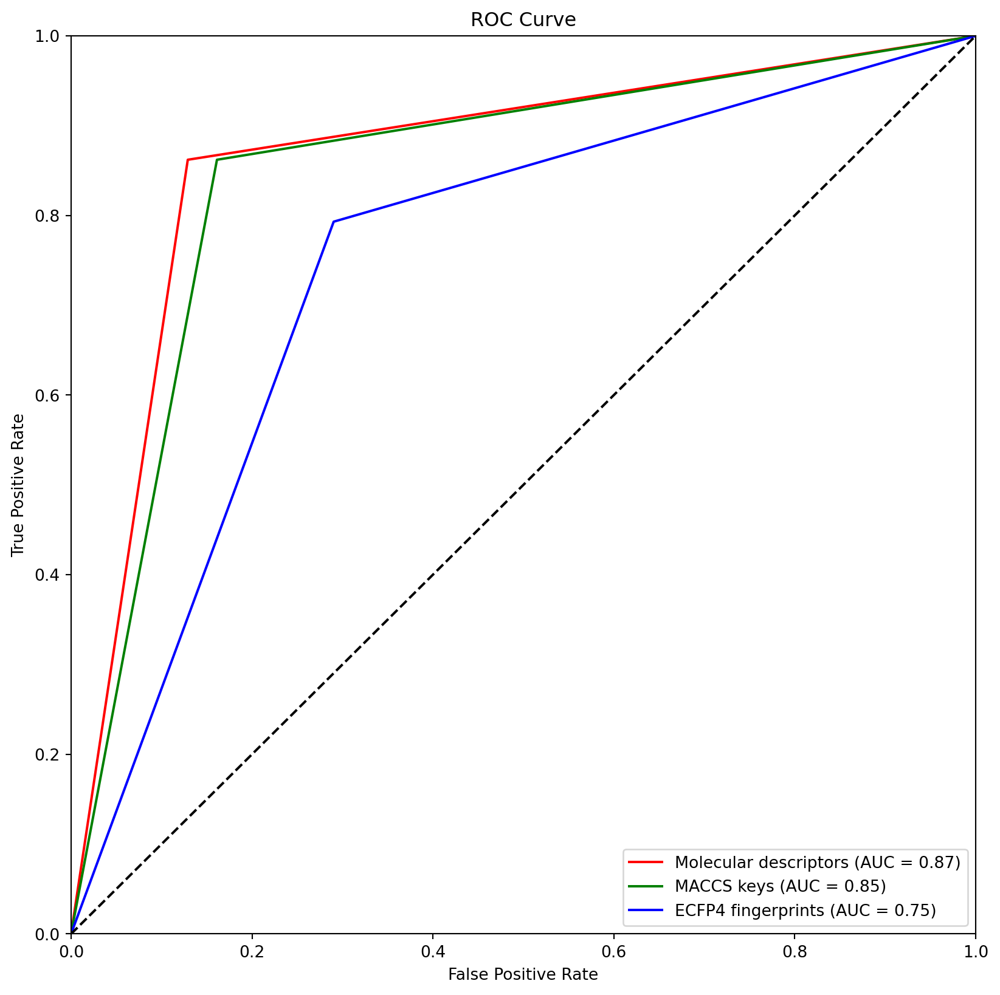

![]()
import pandas as pd
import numpy as np
import matplotlib.pyplot as plt
import seaborn as sns
from sklearn.model_selection import cross_val_score
from sklearn.model_selection import GridSearchCV
from sklearn.metrics import (
roc_curve,
auc,
roc_auc_score,
confusion_matrix,
classification_report,
accuracy_score,
precision_score,
recall_score,
f1_score,
precision_recall_curve,
average_precision_score,
)
import xgboost as xgbRandom Forest models
# DIRECTORIES
input_path = "../data/processed/"
train_path = "../data/processed/train_data/"
test_path = "../data/processed/test_data/"
results_path = "../models/results/"
# FILES
# MOLECULAR DESCRIPTORS
molecular_descriptors_training_file = "molecular_descriptors_training.csv"
molecular_descriptors_test_file = "molecular_descriptors_test.csv"
# MACCS KEYS
maccs_keys_training_file = "maccs_keys_training.csv"
maccs_keys_test_file = "maccs_keys_test.csv"
# ECFP4 FINGERPRINTS
ecfp4_fingerprints_training_file = "ecfp4_fingerprints_training.csv"
ecfp4_fingerprints_test_file = "ecfp4_fingerprints_test.csv"
# RESULTS FILE
results_file = "results_table.csv"# LOAD DATA
# MOLECULAR DESCRIPTORS
## TRAINING
molecular_descriptors_training = pd.read_csv(
train_path + molecular_descriptors_training_file
)
X_training_molecular_descriptors = molecular_descriptors_training.drop(
columns=["activity"]
)
Y_training_molecular_descriptors = molecular_descriptors_training["activity"]
## TEST
molecular_descriptors_test = pd.read_csv(test_path + molecular_descriptors_test_file)
X_test_molecular_descriptors = molecular_descriptors_test.drop(columns=["activity"])
Y_test_molecular_descriptors = molecular_descriptors_test["activity"]
# MACCS KEYS
## TRAINING
macc_keys_training = pd.read_csv(train_path + maccs_keys_training_file)
X_training_maccs_keys = macc_keys_training.drop(columns=["activity"])
Y_training_maccs_keys = macc_keys_training["activity"]
## TEST
macc_keys_test = pd.read_csv(test_path + maccs_keys_test_file)
X_test_maccs_keys = macc_keys_test.drop(columns=["activity"])
Y_test_maccs_keys = macc_keys_test["activity"]
# ECFP4 FINGERPRINTS
## TRAINING
ecfp4_fingerprints_training = pd.read_csv(train_path + ecfp4_fingerprints_training_file)
X_training_ecfp4_fingerprints = ecfp4_fingerprints_training.drop(columns=["activity"])
Y_training_ecfp4_fingerprints = ecfp4_fingerprints_training["activity"]
## TEST
ecfp4_fingerprints_test = pd.read_csv(test_path + ecfp4_fingerprints_test_file)
X_test_ecfp4_fingerprints = ecfp4_fingerprints_test.drop(columns=["activity"])
Y_test_ecfp4_fingerprints = ecfp4_fingerprints_test["activity"]parameters = {
"n_estimators": [1, 10, 50, 100],
"max_depth": [3, 5, 10],
"learning_rate": [0.01, 0.1],
"gamma": [0, 0.1, 0.4],
"colsample_bytree": [0.3],
"subsample": [0.3],
"reg_alpha": [0, 0.1],
"reg_lambda": [0.1],
}1 XGBOOT MODEL FOR MOLECULAR DESCRIPTORS
# BUILD A XGBOOST MODEL FOR MOLECULAR DESCRIPTORS. USE GRID SEARCH TO EXPLORE ALL THE POSSIBLE COMBINATIONS AND FIND THE BEST PARAMETERS. USE 5-FOLD CROSS VALIDATION.
# DEFINE THE MODEL
xgb_model = xgb.XGBClassifier()
# DEFINE THE GRID SEARCH
grid_molecular_descriptors = GridSearchCV(
estimator=xgb_model,
param_grid=parameters,
scoring="roc_auc",
n_jobs=-1,
cv=5,
verbose=3,
)
# TRAIN THE MODEL
grid_molecular_descriptors.fit(
X_training_molecular_descriptors, Y_training_molecular_descriptors
)Fitting 5 folds for each of 144 candidates, totalling 720 fitsGridSearchCV(cv=5,
estimator=XGBClassifier(base_score=None, booster=None,
callbacks=None, colsample_bylevel=None,
colsample_bynode=None,
colsample_bytree=None,
early_stopping_rounds=None,
enable_categorical=False, eval_metric=None,
feature_types=None, gamma=None,
gpu_id=None, grow_policy=None,
importance_type=None,
interaction_constraints=None,
learning_rate=None,...
missing=nan, monotone_constraints=None,
n_estimators=100, n_jobs=None,
num_parallel_tree=None, predictor=None,
random_state=None, ...),
n_jobs=-1,
param_grid={'colsample_bytree': [0.3], 'gamma': [0, 0.1, 0.4],
'learning_rate': [0.01, 0.1], 'max_depth': [3, 5, 10],
'n_estimators': [1, 10, 50, 100],
'reg_alpha': [0, 0.1], 'reg_lambda': [0.1],
'subsample': [0.3]},
scoring='roc_auc', verbose=3)In a Jupyter environment, please rerun this cell to show the HTML representation or trust the notebook. On GitHub, the HTML representation is unable to render, please try loading this page with nbviewer.org.
GridSearchCV(cv=5,
estimator=XGBClassifier(base_score=None, booster=None,
callbacks=None, colsample_bylevel=None,
colsample_bynode=None,
colsample_bytree=None,
early_stopping_rounds=None,
enable_categorical=False, eval_metric=None,
feature_types=None, gamma=None,
gpu_id=None, grow_policy=None,
importance_type=None,
interaction_constraints=None,
learning_rate=None,...
missing=nan, monotone_constraints=None,
n_estimators=100, n_jobs=None,
num_parallel_tree=None, predictor=None,
random_state=None, ...),
n_jobs=-1,
param_grid={'colsample_bytree': [0.3], 'gamma': [0, 0.1, 0.4],
'learning_rate': [0.01, 0.1], 'max_depth': [3, 5, 10],
'n_estimators': [1, 10, 50, 100],
'reg_alpha': [0, 0.1], 'reg_lambda': [0.1],
'subsample': [0.3]},
scoring='roc_auc', verbose=3)XGBClassifier(base_score=None, booster=None, callbacks=None,
colsample_bylevel=None, colsample_bynode=None,
colsample_bytree=None, early_stopping_rounds=None,
enable_categorical=False, eval_metric=None, feature_types=None,
gamma=None, gpu_id=None, grow_policy=None, importance_type=None,
interaction_constraints=None, learning_rate=None, max_bin=None,
max_cat_threshold=None, max_cat_to_onehot=None,
max_delta_step=None, max_depth=None, max_leaves=None,
min_child_weight=None, missing=nan, monotone_constraints=None,
n_estimators=100, n_jobs=None, num_parallel_tree=None,
predictor=None, random_state=None, ...)XGBClassifier(base_score=None, booster=None, callbacks=None,
colsample_bylevel=None, colsample_bynode=None,
colsample_bytree=None, early_stopping_rounds=None,
enable_categorical=False, eval_metric=None, feature_types=None,
gamma=None, gpu_id=None, grow_policy=None, importance_type=None,
interaction_constraints=None, learning_rate=None, max_bin=None,
max_cat_threshold=None, max_cat_to_onehot=None,
max_delta_step=None, max_depth=None, max_leaves=None,
min_child_weight=None, missing=nan, monotone_constraints=None,
n_estimators=100, n_jobs=None, num_parallel_tree=None,
predictor=None, random_state=None, ...)# WE GET THE BEST KNN MODEL
best_model_molecular_descriptors = grid_molecular_descriptors.best_estimator_
best_model_name = "XGBOOST Molecular Descriptors"# PREDICT
Y_pred_molecular_descriptors = best_model_molecular_descriptors.predict(
X_test_molecular_descriptors
)
# EVALUATE
accuracy = accuracy_score(Y_test_molecular_descriptors, Y_pred_molecular_descriptors)
precision = precision_score(Y_test_molecular_descriptors, Y_pred_molecular_descriptors)
recall = recall_score(Y_test_molecular_descriptors, Y_pred_molecular_descriptors)
auc_molecular_descriptors = roc_auc_score(
Y_test_molecular_descriptors, Y_pred_molecular_descriptors
)
# AUC TRAINING
Y_pred_train_molecular_descriptors = best_model_molecular_descriptors.predict(
X_training_molecular_descriptors
)
auc_train_molecular_descriptors = roc_auc_score(
Y_training_molecular_descriptors, Y_pred_train_molecular_descriptors
)
# CREATE DATAFRAME WITH RESULTS
results_molecular_descriptors = pd.DataFrame(
{
"model_name": [best_model_name],
"accuracy": [round(accuracy, 2)],
"precision": [round(precision, 2)],
"recall": [round(recall, 2)],
"auc": [round(auc_molecular_descriptors, 2)],
"auc_train": [round(auc_train_molecular_descriptors, 2)],
}
)# SAVE TABLE_RESULTS.CSV
table_results = pd.read_csv(results_path + results_file)
table_results = table_results.append(results_molecular_descriptors)
table_results.to_csv(results_path + results_file, index=False)/var/folders/3s/vv1d0lmn7g134m4psncn2_q80000gn/T/ipykernel_14790/4156157498.py:3: FutureWarning:
The frame.append method is deprecated and will be removed from pandas in a future version. Use pandas.concat instead.
2 XGBOOST MODEL FOR MACCS KEYS
# BUILD A XGBOOST MODEL FOR MACCS KEYS. USE GRID SEARCH TO EXPLORE ALL THE POSSIBLE COMBINATIONS AND FIND THE BEST PARAMETERS. USE 5-FOLD CROSS VALIDATION.
# DEFINE THE MODEL
xgb_model = xgb.XGBClassifier()
# DEFINE THE GRID SEARCH
grid_maccs_keys = GridSearchCV(
estimator=xgb_model,
param_grid=parameters,
scoring="roc_auc",
n_jobs=-1,
cv=5,
verbose=3,
)
# TRAIN THE MODEL
grid_maccs_keys.fit(X_training_maccs_keys, Y_training_maccs_keys)Fitting 5 folds for each of 144 candidates, totalling 720 fits[CV 4/5] END colsample_bytree=0.3, gamma=0, learning_rate=0.01, max_depth=3, n_estimators=1, reg_alpha=0.1, reg_lambda=0.1, subsample=0.3;, score=0.528 total time= 0.0s
[CV 1/5] END colsample_bytree=0.3, gamma=0, learning_rate=0.01, max_depth=3, n_estimators=100, reg_alpha=0.1, reg_lambda=0.1, subsample=0.3;, score=0.616 total time= 0.1s
[CV 1/5] END colsample_bytree=0.3, gamma=0, learning_rate=0.01, max_depth=5, n_estimators=10, reg_alpha=0.1, reg_lambda=0.1, subsample=0.3;, score=0.484 total time= 0.0s
[CV 1/5] END colsample_bytree=0.3, gamma=0, learning_rate=0.01, max_depth=5, n_estimators=50, reg_alpha=0.1, reg_lambda=0.1, subsample=0.3;, score=0.581 total time= 0.1s
[CV 5/5] END colsample_bytree=0.3, gamma=0, learning_rate=0.01, max_depth=5, n_estimators=100, reg_alpha=0.1, reg_lambda=0.1, subsample=0.3;, score=0.688 total time= 0.2s
[CV 1/5] END colsample_bytree=0.3, gamma=0, learning_rate=0.01, max_depth=10, n_estimators=100, reg_alpha=0, reg_lambda=0.1, subsample=0.3;, score=0.602 total time= 0.1s
[CV 2/5] END colsample_bytree=0.3, gamma=0, learning_rate=0.01, max_depth=10, n_estimators=100, reg_alpha=0, reg_lambda=0.1, subsample=0.3;, score=0.523 total time= 0.2s
[CV 4/5] END colsample_bytree=0.3, gamma=0, learning_rate=0.1, max_depth=5, n_estimators=1, reg_alpha=0.1, reg_lambda=0.1, subsample=0.3;, score=0.562 total time= 0.0s
[CV 5/5] END colsample_bytree=0.3, gamma=0, learning_rate=0.1, max_depth=5, n_estimators=1, reg_alpha=0.1, reg_lambda=0.1, subsample=0.3;, score=0.418 total time= 0.0s
[CV 1/5] END colsample_bytree=0.3, gamma=0, learning_rate=0.1, max_depth=5, n_estimators=10, reg_alpha=0, reg_lambda=0.1, subsample=0.3;, score=0.536 total time= 0.0s
[CV 2/5] END colsample_bytree=0.3, gamma=0, learning_rate=0.1, max_depth=5, n_estimators=10, reg_alpha=0, reg_lambda=0.1, subsample=0.3;, score=0.495 total time= 0.0s
[CV 2/5] END colsample_bytree=0.3, gamma=0, learning_rate=0.1, max_depth=5, n_estimators=100, reg_alpha=0.1, reg_lambda=0.1, subsample=0.3;, score=0.589 total time= 0.1s
[CV 3/5] END colsample_bytree=0.3, gamma=0, learning_rate=0.1, max_depth=5, n_estimators=100, reg_alpha=0.1, reg_lambda=0.1, subsample=0.3;, score=0.483 total time= 0.2s
[CV 4/5] END colsample_bytree=0.3, gamma=0, learning_rate=0.1, max_depth=5, n_estimators=100, reg_alpha=0.1, reg_lambda=0.1, subsample=0.3;, score=0.540 total time= 0.1s
[CV 5/5] END colsample_bytree=0.3, gamma=0, learning_rate=0.1, max_depth=5, n_estimators=100, reg_alpha=0.1, reg_lambda=0.1, subsample=0.3;, score=0.658 total time= 0.2s
[CV 3/5] END colsample_bytree=0.3, gamma=0.1, learning_rate=0.01, max_depth=5, n_estimators=10, reg_alpha=0, reg_lambda=0.1, subsample=0.3;, score=0.580 total time= 0.0s
[CV 4/5] END colsample_bytree=0.3, gamma=0.1, learning_rate=0.01, max_depth=5, n_estimators=10, reg_alpha=0, reg_lambda=0.1, subsample=0.3;, score=0.473 total time= 0.0s
[CV 5/5] END colsample_bytree=0.3, gamma=0.1, learning_rate=0.01, max_depth=5, n_estimators=10, reg_alpha=0, reg_lambda=0.1, subsample=0.3;, score=0.467 total time= 0.0s
[CV 1/5] END colsample_bytree=0.3, gamma=0.1, learning_rate=0.01, max_depth=5, n_estimators=10, reg_alpha=0.1, reg_lambda=0.1, subsample=0.3;, score=0.509 total time= 0.0s
[CV 2/5] END colsample_bytree=0.3, gamma=0.1, learning_rate=0.01, max_depth=5, n_estimators=100, reg_alpha=0.1, reg_lambda=0.1, subsample=0.3;, score=0.547 total time= 0.3s
[CV 3/5] END colsample_bytree=0.3, gamma=0.1, learning_rate=0.01, max_depth=5, n_estimators=100, reg_alpha=0.1, reg_lambda=0.1, subsample=0.3;, score=0.450 total time= 0.2s
[CV 4/5] END colsample_bytree=0.3, gamma=0.1, learning_rate=0.01, max_depth=5, n_estimators=100, reg_alpha=0.1, reg_lambda=0.1, subsample=0.3;, score=0.533 total time= 0.2s
[CV 5/5] END colsample_bytree=0.3, gamma=0.1, learning_rate=0.01, max_depth=5, n_estimators=100, reg_alpha=0.1, reg_lambda=0.1, subsample=0.3;, score=0.696 total time= 0.2s
[CV 2/5] END colsample_bytree=0.3, gamma=0.1, learning_rate=0.1, max_depth=5, n_estimators=10, reg_alpha=0.1, reg_lambda=0.1, subsample=0.3;, score=0.503 total time= 0.0s
[CV 3/5] END colsample_bytree=0.3, gamma=0.1, learning_rate=0.1, max_depth=5, n_estimators=10, reg_alpha=0.1, reg_lambda=0.1, subsample=0.3;, score=0.578 total time= 0.0s
[CV 4/5] END colsample_bytree=0.3, gamma=0.1, learning_rate=0.1, max_depth=5, n_estimators=10, reg_alpha=0.1, reg_lambda=0.1, subsample=0.3;, score=0.525 total time= 0.0s
[CV 5/5] END colsample_bytree=0.3, gamma=0.1, learning_rate=0.1, max_depth=5, n_estimators=10, reg_alpha=0.1, reg_lambda=0.1, subsample=0.3;, score=0.455 total time= 0.0s
[CV 5/5] END colsample_bytree=0.3, gamma=0.1, learning_rate=0.1, max_depth=10, n_estimators=1, reg_alpha=0, reg_lambda=0.1, subsample=0.3;, score=0.445 total time= 0.0s
[CV 1/5] END colsample_bytree=0.3, gamma=0.1, learning_rate=0.1, max_depth=10, n_estimators=1, reg_alpha=0.1, reg_lambda=0.1, subsample=0.3;, score=0.403 total time= 0.0s
[CV 2/5] END colsample_bytree=0.3, gamma=0.1, learning_rate=0.1, max_depth=10, n_estimators=1, reg_alpha=0.1, reg_lambda=0.1, subsample=0.3;, score=0.502 total time= 0.0s
[CV 3/5] END colsample_bytree=0.3, gamma=0.1, learning_rate=0.1, max_depth=10, n_estimators=1, reg_alpha=0.1, reg_lambda=0.1, subsample=0.3;, score=0.539 total time= 0.0s
[CV 3/5] END colsample_bytree=0.3, gamma=0.1, learning_rate=0.1, max_depth=10, n_estimators=10, reg_alpha=0, reg_lambda=0.1, subsample=0.3;, score=0.587 total time= 0.0s
[CV 4/5] END colsample_bytree=0.3, gamma=0.1, learning_rate=0.1, max_depth=10, n_estimators=10, reg_alpha=0, reg_lambda=0.1, subsample=0.3;, score=0.545 total time= 0.0s
[CV 5/5] END colsample_bytree=0.3, gamma=0.1, learning_rate=0.1, max_depth=10, n_estimators=10, reg_alpha=0, reg_lambda=0.1, subsample=0.3;, score=0.449 total time= 0.0s
[CV 1/5] END colsample_bytree=0.3, gamma=0.1, learning_rate=0.1, max_depth=10, n_estimators=10, reg_alpha=0.1, reg_lambda=0.1, subsample=0.3;, score=0.476 total time= 0.0s
[CV 1/5] END colsample_bytree=0.3, gamma=0.4, learning_rate=0.01, max_depth=3, n_estimators=1, reg_alpha=0, reg_lambda=0.1, subsample=0.3;, score=0.419 total time= 0.0s
[CV 2/5] END colsample_bytree=0.3, gamma=0.4, learning_rate=0.01, max_depth=3, n_estimators=1, reg_alpha=0, reg_lambda=0.1, subsample=0.3;, score=0.406 total time= 0.0s
[CV 3/5] END colsample_bytree=0.3, gamma=0.4, learning_rate=0.01, max_depth=3, n_estimators=1, reg_alpha=0, reg_lambda=0.1, subsample=0.3;, score=0.545 total time= 0.0s
[CV 4/5] END colsample_bytree=0.3, gamma=0.4, learning_rate=0.01, max_depth=3, n_estimators=1, reg_alpha=0, reg_lambda=0.1, subsample=0.3;, score=0.528 total time= 0.0s
[CV 2/5] END colsample_bytree=0.3, gamma=0.4, learning_rate=0.01, max_depth=3, n_estimators=10, reg_alpha=0.1, reg_lambda=0.1, subsample=0.3;, score=0.559 total time= 0.0s
[CV 3/5] END colsample_bytree=0.3, gamma=0.4, learning_rate=0.01, max_depth=3, n_estimators=10, reg_alpha=0.1, reg_lambda=0.1, subsample=0.3;, score=0.634 total time= 0.0s
[CV 4/5] END colsample_bytree=0.3, gamma=0.4, learning_rate=0.01, max_depth=3, n_estimators=10, reg_alpha=0.1, reg_lambda=0.1, subsample=0.3;, score=0.493 total time= 0.0s
[CV 5/5] END colsample_bytree=0.3, gamma=0.4, learning_rate=0.01, max_depth=3, n_estimators=10, reg_alpha=0.1, reg_lambda=0.1, subsample=0.3;, score=0.457 total time= 0.0s
[CV 1/5] END colsample_bytree=0.3, gamma=0.4, learning_rate=0.01, max_depth=5, n_estimators=1, reg_alpha=0, reg_lambda=0.1, subsample=0.3;, score=0.461 total time= 0.0s
[CV 2/5] END colsample_bytree=0.3, gamma=0.4, learning_rate=0.01, max_depth=5, n_estimators=1, reg_alpha=0, reg_lambda=0.1, subsample=0.3;, score=0.465 total time= 0.0s
[CV 3/5] END colsample_bytree=0.3, gamma=0.4, learning_rate=0.01, max_depth=5, n_estimators=1, reg_alpha=0, reg_lambda=0.1, subsample=0.3;, score=0.546 total time= 0.0s
[CV 4/5] END colsample_bytree=0.3, gamma=0.4, learning_rate=0.01, max_depth=5, n_estimators=1, reg_alpha=0, reg_lambda=0.1, subsample=0.3;, score=0.562 total time= 0.0s
[CV 2/5] END colsample_bytree=0.3, gamma=0.4, learning_rate=0.01, max_depth=5, n_estimators=10, reg_alpha=0.1, reg_lambda=0.1, subsample=0.3;, score=0.583 total time= 0.0s
[CV 3/5] END colsample_bytree=0.3, gamma=0.4, learning_rate=0.01, max_depth=5, n_estimators=10, reg_alpha=0.1, reg_lambda=0.1, subsample=0.3;, score=0.585 total time= 0.0s
[CV 4/5] END colsample_bytree=0.3, gamma=0.4, learning_rate=0.01, max_depth=5, n_estimators=10, reg_alpha=0.1, reg_lambda=0.1, subsample=0.3;, score=0.463 total time= 0.0s
[CV 5/5] END colsample_bytree=0.3, gamma=0.4, learning_rate=0.01, max_depth=5, n_estimators=10, reg_alpha=0.1, reg_lambda=0.1, subsample=0.3;, score=0.438 total time= 0.0s
[CV 5/5] END colsample_bytree=0.3, gamma=0.4, learning_rate=0.01, max_depth=10, n_estimators=1, reg_alpha=0, reg_lambda=0.1, subsample=0.3;, score=0.443 total time= 0.0s
[CV 1/5] END colsample_bytree=0.3, gamma=0.4, learning_rate=0.01, max_depth=10, n_estimators=1, reg_alpha=0.1, reg_lambda=0.1, subsample=0.3;, score=0.403 total time= 0.0s
[CV 2/5] END colsample_bytree=0.3, gamma=0.4, learning_rate=0.01, max_depth=10, n_estimators=1, reg_alpha=0.1, reg_lambda=0.1, subsample=0.3;, score=0.502 total time= 0.0s
[CV 3/5] END colsample_bytree=0.3, gamma=0.4, learning_rate=0.01, max_depth=10, n_estimators=1, reg_alpha=0.1, reg_lambda=0.1, subsample=0.3;, score=0.563 total time= 0.0s
[CV 2/5] END colsample_bytree=0.3, gamma=0.4, learning_rate=0.01, max_depth=10, n_estimators=10, reg_alpha=0.1, reg_lambda=0.1, subsample=0.3;, score=0.582 total time= 0.0s
[CV 3/5] END colsample_bytree=0.3, gamma=0.4, learning_rate=0.01, max_depth=10, n_estimators=10, reg_alpha=0.1, reg_lambda=0.1, subsample=0.3;, score=0.594 total time= 0.0s
[CV 4/5] END colsample_bytree=0.3, gamma=0.4, learning_rate=0.01, max_depth=10, n_estimators=10, reg_alpha=0.1, reg_lambda=0.1, subsample=0.3;, score=0.478 total time= 0.0s
[CV 5/5] END colsample_bytree=0.3, gamma=0.4, learning_rate=0.01, max_depth=10, n_estimators=10, reg_alpha=0.1, reg_lambda=0.1, subsample=0.3;, score=0.451 total time= 0.0s
[CV 1/5] END colsample_bytree=0.3, gamma=0.4, learning_rate=0.1, max_depth=3, n_estimators=1, reg_alpha=0, reg_lambda=0.1, subsample=0.3;, score=0.419 total time= 0.0s
[CV 2/5] END colsample_bytree=0.3, gamma=0.4, learning_rate=0.1, max_depth=3, n_estimators=1, reg_alpha=0, reg_lambda=0.1, subsample=0.3;, score=0.406 total time= 0.0s
[CV 3/5] END colsample_bytree=0.3, gamma=0.4, learning_rate=0.1, max_depth=3, n_estimators=1, reg_alpha=0, reg_lambda=0.1, subsample=0.3;, score=0.545 total time= 0.0s
[CV 4/5] END colsample_bytree=0.3, gamma=0.4, learning_rate=0.1, max_depth=3, n_estimators=1, reg_alpha=0, reg_lambda=0.1, subsample=0.3;, score=0.528 total time= 0.0s
[CV 2/5] END colsample_bytree=0.3, gamma=0.4, learning_rate=0.1, max_depth=3, n_estimators=10, reg_alpha=0.1, reg_lambda=0.1, subsample=0.3;, score=0.582 total time= 0.0s
[CV 3/5] END colsample_bytree=0.3, gamma=0.4, learning_rate=0.1, max_depth=3, n_estimators=10, reg_alpha=0.1, reg_lambda=0.1, subsample=0.3;, score=0.574 total time= 0.0s
[CV 4/5] END colsample_bytree=0.3, gamma=0.4, learning_rate=0.1, max_depth=3, n_estimators=10, reg_alpha=0.1, reg_lambda=0.1, subsample=0.3;, score=0.505 total time= 0.0s
[CV 5/5] END colsample_bytree=0.3, gamma=0.4, learning_rate=0.1, max_depth=3, n_estimators=10, reg_alpha=0.1, reg_lambda=0.1, subsample=0.3;, score=0.489 total time= 0.0s
[CV 5/5] END colsample_bytree=0.3, gamma=0.4, learning_rate=0.1, max_depth=5, n_estimators=1, reg_alpha=0, reg_lambda=0.1, subsample=0.3;, score=0.418 total time= 0.0s
[CV 1/5] END colsample_bytree=0.3, gamma=0.4, learning_rate=0.1, max_depth=5, n_estimators=1, reg_alpha=0.1, reg_lambda=0.1, subsample=0.3;, score=0.407 total time= 0.0s
[CV 2/5] END colsample_bytree=0.3, gamma=0.4, learning_rate=0.1, max_depth=5, n_estimators=1, reg_alpha=0.1, reg_lambda=0.1, subsample=0.3;, score=0.490 total time= 0.0s
[CV 3/5] END colsample_bytree=0.3, gamma=0.4, learning_rate=0.1, max_depth=5, n_estimators=1, reg_alpha=0.1, reg_lambda=0.1, subsample=0.3;, score=0.555 total time= 0.0s
[CV 1/5] END colsample_bytree=0.3, gamma=0.4, learning_rate=0.1, max_depth=5, n_estimators=50, reg_alpha=0, reg_lambda=0.1, subsample=0.3;, score=0.562 total time= 0.1s
[CV 2/5] END colsample_bytree=0.3, gamma=0.4, learning_rate=0.1, max_depth=5, n_estimators=50, reg_alpha=0, reg_lambda=0.1, subsample=0.3;, score=0.566 total time= 0.1s
[CV 3/5] END colsample_bytree=0.3, gamma=0.4, learning_rate=0.1, max_depth=5, n_estimators=50, reg_alpha=0, reg_lambda=0.1, subsample=0.3;, score=0.531 total time= 0.1s
[CV 4/5] END colsample_bytree=0.3, gamma=0.4, learning_rate=0.1, max_depth=5, n_estimators=50, reg_alpha=0, reg_lambda=0.1, subsample=0.3;, score=0.557 total time= 0.1s
[CV 4/5] END colsample_bytree=0.3, gamma=0.4, learning_rate=0.1, max_depth=10, n_estimators=50, reg_alpha=0.1, reg_lambda=0.1, subsample=0.3;, score=0.477 total time= 0.1s
[CV 1/5] END colsample_bytree=0.3, gamma=0.4, learning_rate=0.1, max_depth=10, n_estimators=100, reg_alpha=0.1, reg_lambda=0.1, subsample=0.3;, score=0.552 total time= 0.2s
[CV 4/5] END colsample_bytree=0.3, gamma=0, learning_rate=0.01, max_depth=3, n_estimators=1, reg_alpha=0.1, reg_lambda=0.1, subsample=0.3;, score=0.609 total time= 0.1s
[CV 2/5] END colsample_bytree=0.3, gamma=0, learning_rate=0.01, max_depth=3, n_estimators=10, reg_alpha=0.1, reg_lambda=0.1, subsample=0.3;, score=0.503 total time= 0.1s
[CV 2/5] END colsample_bytree=0.3, gamma=0, learning_rate=0.01, max_depth=3, n_estimators=100, reg_alpha=0.1, reg_lambda=0.1, subsample=0.3;, score=0.554 total time= 0.3s
[CV 3/5] END colsample_bytree=0.3, gamma=0, learning_rate=0.01, max_depth=3, n_estimators=100, reg_alpha=0.1, reg_lambda=0.1, subsample=0.3;, score=0.566 total time= 0.3s
[CV 3/5] END colsample_bytree=0.3, gamma=0, learning_rate=0.01, max_depth=10, n_estimators=1, reg_alpha=0, reg_lambda=0.1, subsample=0.3;, score=0.578 total time= 0.0s
[CV 4/5] END colsample_bytree=0.3, gamma=0, learning_rate=0.01, max_depth=10, n_estimators=1, reg_alpha=0, reg_lambda=0.1, subsample=0.3;, score=0.611 total time= 0.0s
[CV 4/5] END colsample_bytree=0.3, gamma=0, learning_rate=0.01, max_depth=10, n_estimators=1, reg_alpha=0.1, reg_lambda=0.1, subsample=0.3;, score=0.611 total time= 0.0s
[CV 5/5] END colsample_bytree=0.3, gamma=0, learning_rate=0.01, max_depth=10, n_estimators=1, reg_alpha=0.1, reg_lambda=0.1, subsample=0.3;, score=0.499 total time= 0.1s
[CV 1/5] END colsample_bytree=0.3, gamma=0, learning_rate=0.01, max_depth=10, n_estimators=50, reg_alpha=0, reg_lambda=0.1, subsample=0.3;, score=0.551 total time= 0.2s
[CV 2/5] END colsample_bytree=0.3, gamma=0, learning_rate=0.01, max_depth=10, n_estimators=50, reg_alpha=0, reg_lambda=0.1, subsample=0.3;, score=0.530 total time= 0.2s
[CV 1/5] END colsample_bytree=0.3, gamma=0, learning_rate=0.1, max_depth=3, n_estimators=1, reg_alpha=0, reg_lambda=0.1, subsample=0.3;, score=0.542 total time= 0.0s
[CV 2/5] END colsample_bytree=0.3, gamma=0, learning_rate=0.1, max_depth=3, n_estimators=1, reg_alpha=0, reg_lambda=0.1, subsample=0.3;, score=0.602 total time= 0.0s
[CV 3/5] END colsample_bytree=0.3, gamma=0, learning_rate=0.1, max_depth=3, n_estimators=10, reg_alpha=0, reg_lambda=0.1, subsample=0.3;, score=0.557 total time= 0.1s
[CV 4/5] END colsample_bytree=0.3, gamma=0, learning_rate=0.1, max_depth=3, n_estimators=10, reg_alpha=0, reg_lambda=0.1, subsample=0.3;, score=0.530 total time= 0.1s
[CV 2/5] END colsample_bytree=0.3, gamma=0, learning_rate=0.1, max_depth=3, n_estimators=50, reg_alpha=0.1, reg_lambda=0.1, subsample=0.3;, score=0.569 total time= 0.2s
[CV 3/5] END colsample_bytree=0.3, gamma=0, learning_rate=0.1, max_depth=3, n_estimators=50, reg_alpha=0.1, reg_lambda=0.1, subsample=0.3;, score=0.521 total time= 0.1s
[CV 1/5] END colsample_bytree=0.3, gamma=0, learning_rate=0.1, max_depth=5, n_estimators=10, reg_alpha=0, reg_lambda=0.1, subsample=0.3;, score=0.641 total time= 0.1sGridSearchCV(cv=5,
estimator=XGBClassifier(base_score=None, booster=None,
callbacks=None, colsample_bylevel=None,
colsample_bynode=None,
colsample_bytree=None,
early_stopping_rounds=None,
enable_categorical=False, eval_metric=None,
feature_types=None, gamma=None,
gpu_id=None, grow_policy=None,
importance_type=None,
interaction_constraints=None,
learning_rate=None,...
missing=nan, monotone_constraints=None,
n_estimators=100, n_jobs=None,
num_parallel_tree=None, predictor=None,
random_state=None, ...),
n_jobs=-1,
param_grid={'colsample_bytree': [0.3], 'gamma': [0, 0.1, 0.4],
'learning_rate': [0.01, 0.1], 'max_depth': [3, 5, 10],
'n_estimators': [1, 10, 50, 100],
'reg_alpha': [0, 0.1], 'reg_lambda': [0.1],
'subsample': [0.3]},
scoring='roc_auc', verbose=3)In a Jupyter environment, please rerun this cell to show the HTML representation or trust the notebook. On GitHub, the HTML representation is unable to render, please try loading this page with nbviewer.org.
GridSearchCV(cv=5,
estimator=XGBClassifier(base_score=None, booster=None,
callbacks=None, colsample_bylevel=None,
colsample_bynode=None,
colsample_bytree=None,
early_stopping_rounds=None,
enable_categorical=False, eval_metric=None,
feature_types=None, gamma=None,
gpu_id=None, grow_policy=None,
importance_type=None,
interaction_constraints=None,
learning_rate=None,...
missing=nan, monotone_constraints=None,
n_estimators=100, n_jobs=None,
num_parallel_tree=None, predictor=None,
random_state=None, ...),
n_jobs=-1,
param_grid={'colsample_bytree': [0.3], 'gamma': [0, 0.1, 0.4],
'learning_rate': [0.01, 0.1], 'max_depth': [3, 5, 10],
'n_estimators': [1, 10, 50, 100],
'reg_alpha': [0, 0.1], 'reg_lambda': [0.1],
'subsample': [0.3]},
scoring='roc_auc', verbose=3)XGBClassifier(base_score=None, booster=None, callbacks=None,
colsample_bylevel=None, colsample_bynode=None,
colsample_bytree=None, early_stopping_rounds=None,
enable_categorical=False, eval_metric=None, feature_types=None,
gamma=None, gpu_id=None, grow_policy=None, importance_type=None,
interaction_constraints=None, learning_rate=None, max_bin=None,
max_cat_threshold=None, max_cat_to_onehot=None,
max_delta_step=None, max_depth=None, max_leaves=None,
min_child_weight=None, missing=nan, monotone_constraints=None,
n_estimators=100, n_jobs=None, num_parallel_tree=None,
predictor=None, random_state=None, ...)XGBClassifier(base_score=None, booster=None, callbacks=None,
colsample_bylevel=None, colsample_bynode=None,
colsample_bytree=None, early_stopping_rounds=None,
enable_categorical=False, eval_metric=None, feature_types=None,
gamma=None, gpu_id=None, grow_policy=None, importance_type=None,
interaction_constraints=None, learning_rate=None, max_bin=None,
max_cat_threshold=None, max_cat_to_onehot=None,
max_delta_step=None, max_depth=None, max_leaves=None,
min_child_weight=None, missing=nan, monotone_constraints=None,
n_estimators=100, n_jobs=None, num_parallel_tree=None,
predictor=None, random_state=None, ...)# WE GET THE BEST KNN MODEL
best_model_maccs_keys = grid_maccs_keys.best_estimator_
best_model_name = "XGBOOST MACCS Keys"# PREDICT
Y_pred_maccs_keys = best_model_maccs_keys.predict(X_test_maccs_keys)
# EVALUATE
accuracy = accuracy_score(Y_test_maccs_keys, Y_pred_maccs_keys)
precision = precision_score(Y_test_maccs_keys, Y_pred_maccs_keys)
recall = recall_score(Y_test_maccs_keys, Y_pred_maccs_keys)
auc_maccs_keys = roc_auc_score(Y_test_maccs_keys, Y_pred_maccs_keys)
# AUC TRAINING
Y_pred_train_maccs_keys = best_model_maccs_keys.predict(X_training_maccs_keys)
auc_train_maccs_keys = roc_auc_score(Y_training_maccs_keys, Y_pred_train_maccs_keys)
# CREATE DATAFRAME WITH RESULTS
results_maccs_keys = pd.DataFrame(
{
"model_name": [best_model_name],
"accuracy": [round(accuracy, 2)],
"precision": [round(precision, 2)],
"recall": [round(recall, 2)],
"auc": [round(auc_maccs_keys, 2)],
"auc_train": [round(auc_train_maccs_keys, 2)],
}
)# SAVE TABLE_RESULTS.CSV
table_results = pd.read_csv(results_path + results_file)
table_results = table_results.append(results_maccs_keys)
table_results.to_csv(results_path + results_file, index=False)/var/folders/3s/vv1d0lmn7g134m4psncn2_q80000gn/T/ipykernel_14790/2186010174.py:3: FutureWarning:
The frame.append method is deprecated and will be removed from pandas in a future version. Use pandas.concat instead.
3 XGBOOST MODEL FOR ECFP4
# BUILD A XGBOOST MODEL FOR ECFP4. USE GRID SEARCH TO EXPLORE ALL THE POSSIBLE COMBINATIONS AND FIND THE BEST PARAMETERS. USE 5-FOLD CROSS VALIDATION.
# DEFINE THE MODEL
xgb_model = xgb.XGBClassifier()
# DEFINE THE GRID SEARCH
grid_ecfp4 = GridSearchCV(
estimator=xgb_model,
param_grid=parameters,
scoring="roc_auc",
n_jobs=-1,
cv=5,
verbose=3,
)
# TRAIN THE MODEL
grid_ecfp4.fit(X_training_ecfp4_fingerprints, Y_training_ecfp4_fingerprints)Fitting 5 folds for each of 144 candidates, totalling 720 fits[CV 4/5] END colsample_bytree=0.3, gamma=0, learning_rate=0.01, max_depth=3, n_estimators=1, reg_alpha=0, reg_lambda=0.1, subsample=0.3;, score=0.528 total time= 0.0s
[CV 1/5] END colsample_bytree=0.3, gamma=0, learning_rate=0.01, max_depth=3, n_estimators=50, reg_alpha=0.1, reg_lambda=0.1, subsample=0.3;, score=0.598 total time= 0.1s
[CV 2/5] END colsample_bytree=0.3, gamma=0, learning_rate=0.01, max_depth=3, n_estimators=100, reg_alpha=0, reg_lambda=0.1, subsample=0.3;, score=0.562 total time= 0.1s
[CV 1/5] END colsample_bytree=0.3, gamma=0, learning_rate=0.01, max_depth=5, n_estimators=10, reg_alpha=0, reg_lambda=0.1, subsample=0.3;, score=0.516 total time= 0.0s
[CV 2/5] END colsample_bytree=0.3, gamma=0, learning_rate=0.01, max_depth=5, n_estimators=50, reg_alpha=0, reg_lambda=0.1, subsample=0.3;, score=0.571 total time= 0.1s
[CV 3/5] END colsample_bytree=0.3, gamma=0, learning_rate=0.01, max_depth=5, n_estimators=100, reg_alpha=0, reg_lambda=0.1, subsample=0.3;, score=0.439 total time= 0.2s
[CV 4/5] END colsample_bytree=0.3, gamma=0, learning_rate=0.01, max_depth=10, n_estimators=10, reg_alpha=0.1, reg_lambda=0.1, subsample=0.3;, score=0.485 total time= 0.0s
[CV 5/5] END colsample_bytree=0.3, gamma=0, learning_rate=0.01, max_depth=10, n_estimators=10, reg_alpha=0.1, reg_lambda=0.1, subsample=0.3;, score=0.467 total time= 0.0s
[CV 4/5] END colsample_bytree=0.3, gamma=0, learning_rate=0.01, max_depth=10, n_estimators=100, reg_alpha=0.1, reg_lambda=0.1, subsample=0.3;, score=0.540 total time= 0.2s
[CV 5/5] END colsample_bytree=0.3, gamma=0, learning_rate=0.01, max_depth=10, n_estimators=100, reg_alpha=0.1, reg_lambda=0.1, subsample=0.3;, score=0.694 total time= 0.2s
[CV 5/5] END colsample_bytree=0.3, gamma=0, learning_rate=0.1, max_depth=5, n_estimators=50, reg_alpha=0, reg_lambda=0.1, subsample=0.3;, score=0.647 total time= 0.1s
[CV 1/5] END colsample_bytree=0.3, gamma=0, learning_rate=0.1, max_depth=5, n_estimators=50, reg_alpha=0.1, reg_lambda=0.1, subsample=0.3;, score=0.554 total time= 0.1s
[CV 2/5] END colsample_bytree=0.3, gamma=0, learning_rate=0.1, max_depth=5, n_estimators=50, reg_alpha=0.1, reg_lambda=0.1, subsample=0.3;, score=0.589 total time= 0.1s
[CV 3/5] END colsample_bytree=0.3, gamma=0, learning_rate=0.1, max_depth=5, n_estimators=50, reg_alpha=0.1, reg_lambda=0.1, subsample=0.3;, score=0.512 total time= 0.1s
[CV 1/5] END colsample_bytree=0.3, gamma=0.1, learning_rate=0.01, max_depth=3, n_estimators=1, reg_alpha=0, reg_lambda=0.1, subsample=0.3;, score=0.419 total time= 0.0s
[CV 2/5] END colsample_bytree=0.3, gamma=0.1, learning_rate=0.01, max_depth=3, n_estimators=1, reg_alpha=0, reg_lambda=0.1, subsample=0.3;, score=0.406 total time= 0.0s
[CV 3/5] END colsample_bytree=0.3, gamma=0.1, learning_rate=0.01, max_depth=3, n_estimators=1, reg_alpha=0, reg_lambda=0.1, subsample=0.3;, score=0.545 total time= 0.0s
[CV 4/5] END colsample_bytree=0.3, gamma=0.1, learning_rate=0.01, max_depth=3, n_estimators=1, reg_alpha=0, reg_lambda=0.1, subsample=0.3;, score=0.528 total time= 0.0s
[CV 2/5] END colsample_bytree=0.3, gamma=0.1, learning_rate=0.01, max_depth=3, n_estimators=10, reg_alpha=0.1, reg_lambda=0.1, subsample=0.3;, score=0.559 total time= 0.0s
[CV 3/5] END colsample_bytree=0.3, gamma=0.1, learning_rate=0.01, max_depth=3, n_estimators=10, reg_alpha=0.1, reg_lambda=0.1, subsample=0.3;, score=0.634 total time= 0.0s
[CV 4/5] END colsample_bytree=0.3, gamma=0.1, learning_rate=0.01, max_depth=3, n_estimators=10, reg_alpha=0.1, reg_lambda=0.1, subsample=0.3;, score=0.491 total time= 0.0s
[CV 5/5] END colsample_bytree=0.3, gamma=0.1, learning_rate=0.01, max_depth=3, n_estimators=10, reg_alpha=0.1, reg_lambda=0.1, subsample=0.3;, score=0.457 total time= 0.0s
[CV 1/5] END colsample_bytree=0.3, gamma=0.1, learning_rate=0.01, max_depth=5, n_estimators=1, reg_alpha=0, reg_lambda=0.1, subsample=0.3;, score=0.455 total time= 0.0s
[CV 2/5] END colsample_bytree=0.3, gamma=0.1, learning_rate=0.01, max_depth=5, n_estimators=1, reg_alpha=0, reg_lambda=0.1, subsample=0.3;, score=0.451 total time= 0.0s
[CV 3/5] END colsample_bytree=0.3, gamma=0.1, learning_rate=0.01, max_depth=5, n_estimators=1, reg_alpha=0, reg_lambda=0.1, subsample=0.3;, score=0.546 total time= 0.0s
[CV 4/5] END colsample_bytree=0.3, gamma=0.1, learning_rate=0.01, max_depth=5, n_estimators=1, reg_alpha=0, reg_lambda=0.1, subsample=0.3;, score=0.562 total time= 0.0s
[CV 2/5] END colsample_bytree=0.3, gamma=0.1, learning_rate=0.01, max_depth=5, n_estimators=10, reg_alpha=0.1, reg_lambda=0.1, subsample=0.3;, score=0.582 total time= 0.0s
[CV 3/5] END colsample_bytree=0.3, gamma=0.1, learning_rate=0.01, max_depth=5, n_estimators=10, reg_alpha=0.1, reg_lambda=0.1, subsample=0.3;, score=0.582 total time= 0.0s
[CV 4/5] END colsample_bytree=0.3, gamma=0.1, learning_rate=0.01, max_depth=5, n_estimators=10, reg_alpha=0.1, reg_lambda=0.1, subsample=0.3;, score=0.457 total time= 0.0s
[CV 5/5] END colsample_bytree=0.3, gamma=0.1, learning_rate=0.01, max_depth=5, n_estimators=10, reg_alpha=0.1, reg_lambda=0.1, subsample=0.3;, score=0.433 total time= 0.0s
[CV 1/5] END colsample_bytree=0.3, gamma=0.1, learning_rate=0.01, max_depth=10, n_estimators=1, reg_alpha=0, reg_lambda=0.1, subsample=0.3;, score=0.464 total time= 0.0s
[CV 2/5] END colsample_bytree=0.3, gamma=0.1, learning_rate=0.01, max_depth=10, n_estimators=1, reg_alpha=0, reg_lambda=0.1, subsample=0.3;, score=0.485 total time= 0.0s
[CV 3/5] END colsample_bytree=0.3, gamma=0.1, learning_rate=0.01, max_depth=10, n_estimators=1, reg_alpha=0, reg_lambda=0.1, subsample=0.3;, score=0.539 total time= 0.1s
[CV 4/5] END colsample_bytree=0.3, gamma=0.1, learning_rate=0.01, max_depth=10, n_estimators=1, reg_alpha=0, reg_lambda=0.1, subsample=0.3;, score=0.562 total time= 0.0s
[CV 3/5] END colsample_bytree=0.3, gamma=0.1, learning_rate=0.01, max_depth=10, n_estimators=10, reg_alpha=0, reg_lambda=0.1, subsample=0.3;, score=0.585 total time= 0.0s
[CV 4/5] END colsample_bytree=0.3, gamma=0.1, learning_rate=0.01, max_depth=10, n_estimators=10, reg_alpha=0, reg_lambda=0.1, subsample=0.3;, score=0.492 total time= 0.0s
[CV 5/5] END colsample_bytree=0.3, gamma=0.1, learning_rate=0.01, max_depth=10, n_estimators=10, reg_alpha=0, reg_lambda=0.1, subsample=0.3;, score=0.491 total time= 0.0s
[CV 1/5] END colsample_bytree=0.3, gamma=0.1, learning_rate=0.01, max_depth=10, n_estimators=10, reg_alpha=0.1, reg_lambda=0.1, subsample=0.3;, score=0.516 total time= 0.0s
[CV 1/5] END colsample_bytree=0.3, gamma=0.1, learning_rate=0.1, max_depth=3, n_estimators=1, reg_alpha=0, reg_lambda=0.1, subsample=0.3;, score=0.419 total time= 0.0s
[CV 2/5] END colsample_bytree=0.3, gamma=0.1, learning_rate=0.1, max_depth=3, n_estimators=1, reg_alpha=0, reg_lambda=0.1, subsample=0.3;, score=0.406 total time= 0.0s
[CV 3/5] END colsample_bytree=0.3, gamma=0.1, learning_rate=0.1, max_depth=3, n_estimators=1, reg_alpha=0, reg_lambda=0.1, subsample=0.3;, score=0.545 total time= 0.0s
[CV 4/5] END colsample_bytree=0.3, gamma=0.1, learning_rate=0.1, max_depth=3, n_estimators=1, reg_alpha=0, reg_lambda=0.1, subsample=0.3;, score=0.528 total time= 0.0s
[CV 2/5] END colsample_bytree=0.3, gamma=0.1, learning_rate=0.1, max_depth=3, n_estimators=10, reg_alpha=0.1, reg_lambda=0.1, subsample=0.3;, score=0.582 total time= 0.0s
[CV 3/5] END colsample_bytree=0.3, gamma=0.1, learning_rate=0.1, max_depth=3, n_estimators=10, reg_alpha=0.1, reg_lambda=0.1, subsample=0.3;, score=0.574 total time= 0.0s
[CV 4/5] END colsample_bytree=0.3, gamma=0.1, learning_rate=0.1, max_depth=3, n_estimators=10, reg_alpha=0.1, reg_lambda=0.1, subsample=0.3;, score=0.517 total time= 0.0s
[CV 5/5] END colsample_bytree=0.3, gamma=0.1, learning_rate=0.1, max_depth=3, n_estimators=10, reg_alpha=0.1, reg_lambda=0.1, subsample=0.3;, score=0.493 total time= 0.0s
[CV 5/5] END colsample_bytree=0.3, gamma=0.1, learning_rate=0.1, max_depth=5, n_estimators=1, reg_alpha=0, reg_lambda=0.1, subsample=0.3;, score=0.418 total time= 0.0s
[CV 1/5] END colsample_bytree=0.3, gamma=0.1, learning_rate=0.1, max_depth=5, n_estimators=1, reg_alpha=0.1, reg_lambda=0.1, subsample=0.3;, score=0.407 total time= 0.0s
[CV 2/5] END colsample_bytree=0.3, gamma=0.1, learning_rate=0.1, max_depth=5, n_estimators=1, reg_alpha=0.1, reg_lambda=0.1, subsample=0.3;, score=0.490 total time= 0.0s
[CV 3/5] END colsample_bytree=0.3, gamma=0.1, learning_rate=0.1, max_depth=5, n_estimators=1, reg_alpha=0.1, reg_lambda=0.1, subsample=0.3;, score=0.546 total time= 0.0s
[CV 1/5] END colsample_bytree=0.3, gamma=0.1, learning_rate=0.1, max_depth=5, n_estimators=50, reg_alpha=0, reg_lambda=0.1, subsample=0.3;, score=0.518 total time= 0.1s
[CV 2/5] END colsample_bytree=0.3, gamma=0.1, learning_rate=0.1, max_depth=5, n_estimators=50, reg_alpha=0, reg_lambda=0.1, subsample=0.3;, score=0.575 total time= 0.1s
[CV 3/5] END colsample_bytree=0.3, gamma=0.1, learning_rate=0.1, max_depth=5, n_estimators=50, reg_alpha=0, reg_lambda=0.1, subsample=0.3;, score=0.517 total time= 0.1s
[CV 4/5] END colsample_bytree=0.3, gamma=0.1, learning_rate=0.1, max_depth=5, n_estimators=50, reg_alpha=0, reg_lambda=0.1, subsample=0.3;, score=0.484 total time= 0.1s
[CV 4/5] END colsample_bytree=0.3, gamma=0.1, learning_rate=0.1, max_depth=10, n_estimators=50, reg_alpha=0.1, reg_lambda=0.1, subsample=0.3;, score=0.542 total time= 0.1s
[CV 5/5] END colsample_bytree=0.3, gamma=0.1, learning_rate=0.1, max_depth=10, n_estimators=50, reg_alpha=0.1, reg_lambda=0.1, subsample=0.3;, score=0.549 total time= 0.1s
[CV 1/5] END colsample_bytree=0.3, gamma=0.1, learning_rate=0.1, max_depth=10, n_estimators=100, reg_alpha=0, reg_lambda=0.1, subsample=0.3;, score=0.519 total time= 0.2s
[CV 2/5] END colsample_bytree=0.3, gamma=0.1, learning_rate=0.1, max_depth=10, n_estimators=100, reg_alpha=0, reg_lambda=0.1, subsample=0.3;, score=0.571 total time= 0.2s
[CV 3/5] END colsample_bytree=0.3, gamma=0.4, learning_rate=0.01, max_depth=5, n_estimators=100, reg_alpha=0, reg_lambda=0.1, subsample=0.3;, score=0.441 total time= 0.2s
[CV 4/5] END colsample_bytree=0.3, gamma=0.4, learning_rate=0.01, max_depth=5, n_estimators=100, reg_alpha=0, reg_lambda=0.1, subsample=0.3;, score=0.531 total time= 0.2s
[CV 5/5] END colsample_bytree=0.3, gamma=0.4, learning_rate=0.01, max_depth=5, n_estimators=100, reg_alpha=0, reg_lambda=0.1, subsample=0.3;, score=0.717 total time= 0.2s
[CV 1/5] END colsample_bytree=0.3, gamma=0.4, learning_rate=0.01, max_depth=5, n_estimators=100, reg_alpha=0.1, reg_lambda=0.1, subsample=0.3;, score=0.608 total time= 0.2s
[CV 4/5] END colsample_bytree=0.3, gamma=0.4, learning_rate=0.1, max_depth=5, n_estimators=1, reg_alpha=0.1, reg_lambda=0.1, subsample=0.3;, score=0.559 total time= 0.0s
[CV 5/5] END colsample_bytree=0.3, gamma=0.4, learning_rate=0.1, max_depth=5, n_estimators=1, reg_alpha=0.1, reg_lambda=0.1, subsample=0.3;, score=0.418 total time= 0.0s
[CV 1/5] END colsample_bytree=0.3, gamma=0.4, learning_rate=0.1, max_depth=5, n_estimators=10, reg_alpha=0, reg_lambda=0.1, subsample=0.3;, score=0.549 total time= 0.0s
[CV 2/5] END colsample_bytree=0.3, gamma=0.4, learning_rate=0.1, max_depth=5, n_estimators=10, reg_alpha=0, reg_lambda=0.1, subsample=0.3;, score=0.491 total time= 0.0s
[CV 4/5] END colsample_bytree=0.3, gamma=0.4, learning_rate=0.1, max_depth=5, n_estimators=50, reg_alpha=0.1, reg_lambda=0.1, subsample=0.3;, score=0.484 total time= 0.1s
[CV 5/5] END colsample_bytree=0.3, gamma=0.4, learning_rate=0.1, max_depth=5, n_estimators=50, reg_alpha=0.1, reg_lambda=0.1, subsample=0.3;, score=0.587 total time= 0.1s
[CV 1/5] END colsample_bytree=0.3, gamma=0.4, learning_rate=0.1, max_depth=5, n_estimators=100, reg_alpha=0, reg_lambda=0.1, subsample=0.3;, score=0.576 total time= 0.2s
[CV 2/5] END colsample_bytree=0.3, gamma=0.4, learning_rate=0.1, max_depth=5, n_estimators=100, reg_alpha=0, reg_lambda=0.1, subsample=0.3;, score=0.582 total time= 0.2s
[CV 1/5] END colsample_bytree=0.3, gamma=0, learning_rate=0.01, max_depth=3, n_estimators=1, reg_alpha=0, reg_lambda=0.1, subsample=0.3;, score=0.542 total time= 0.0s
[CV 1/5] END colsample_bytree=0.3, gamma=0, learning_rate=0.01, max_depth=3, n_estimators=10, reg_alpha=0, reg_lambda=0.1, subsample=0.3;, score=0.529 total time= 0.1s
[CV 3/5] END colsample_bytree=0.3, gamma=0, learning_rate=0.01, max_depth=3, n_estimators=50, reg_alpha=0, reg_lambda=0.1, subsample=0.3;, score=0.545 total time= 0.2s
[CV 5/5] END colsample_bytree=0.3, gamma=0, learning_rate=0.01, max_depth=5, n_estimators=1, reg_alpha=0, reg_lambda=0.1, subsample=0.3;, score=0.499 total time= 0.0s
[CV 1/5] END colsample_bytree=0.3, gamma=0, learning_rate=0.01, max_depth=5, n_estimators=1, reg_alpha=0.1, reg_lambda=0.1, subsample=0.3;, score=0.510 total time= 0.0s
[CV 3/5] END colsample_bytree=0.3, gamma=0, learning_rate=0.01, max_depth=5, n_estimators=10, reg_alpha=0, reg_lambda=0.1, subsample=0.3;, score=0.489 total time= 0.1s
[CV 4/5] END colsample_bytree=0.3, gamma=0, learning_rate=0.01, max_depth=5, n_estimators=10, reg_alpha=0, reg_lambda=0.1, subsample=0.3;, score=0.523 total time= 0.1s
[CV 2/5] END colsample_bytree=0.3, gamma=0, learning_rate=0.01, max_depth=5, n_estimators=50, reg_alpha=0.1, reg_lambda=0.1, subsample=0.3;, score=0.573 total time= 0.2s
[CV 3/5] END colsample_bytree=0.3, gamma=0, learning_rate=0.01, max_depth=5, n_estimators=50, reg_alpha=0.1, reg_lambda=0.1, subsample=0.3;, score=0.542 total time= 0.2s
[CV 5/5] END colsample_bytree=0.3, gamma=0, learning_rate=0.01, max_depth=10, n_estimators=10, reg_alpha=0, reg_lambda=0.1, subsample=0.3;, score=0.625 total time= 0.1s
[CV 1/5] END colsample_bytree=0.3, gamma=0, learning_rate=0.01, max_depth=10, n_estimators=10, reg_alpha=0.1, reg_lambda=0.1, subsample=0.3;, score=0.593 total time= 0.1s
[CV 4/5] END colsample_bytree=0.3, gamma=0, learning_rate=0.01, max_depth=10, n_estimators=50, reg_alpha=0.1, reg_lambda=0.1, subsample=0.3;, score=0.560 total time= 0.2s
[CV 5/5] END colsample_bytree=0.3, gamma=0, learning_rate=0.01, max_depth=10, n_estimators=50, reg_alpha=0.1, reg_lambda=0.1, subsample=0.3;, score=0.540 total time= 0.2s
[CV 5/5] END colsample_bytree=0.3, gamma=0, learning_rate=0.1, max_depth=3, n_estimators=10, reg_alpha=0, reg_lambda=0.1, subsample=0.3;, score=0.554 total time= 0.1s
[CV 1/5] END colsample_bytree=0.3, gamma=0, learning_rate=0.1, max_depth=3, n_estimators=10, reg_alpha=0.1, reg_lambda=0.1, subsample=0.3;, score=0.582 total time= 0.1s
[CV 4/5] END colsample_bytree=0.3, gamma=0, learning_rate=0.1, max_depth=3, n_estimators=50, reg_alpha=0.1, reg_lambda=0.1, subsample=0.3;, score=0.565 total time= 0.2s
[CV 5/5] END colsample_bytree=0.3, gamma=0, learning_rate=0.1, max_depth=3, n_estimators=50, reg_alpha=0.1, reg_lambda=0.1, subsample=0.3;, score=0.507 total time= 0.1s
[CV 4/5] END colsample_bytree=0.3, gamma=0, learning_rate=0.1, max_depth=5, n_estimators=1, reg_alpha=0.1, reg_lambda=0.1, subsample=0.3;, score=0.611 total time= 0.0s
[CV 5/5] END colsample_bytree=0.3, gamma=0, learning_rate=0.1, max_depth=5, n_estimators=1, reg_alpha=0.1, reg_lambda=0.1, subsample=0.3;, score=0.499 total time= 0.0s
[CV 3/5] END colsample_bytree=0.3, gamma=0, learning_rate=0.1, max_depth=5, n_estimators=50, reg_alpha=0, reg_lambda=0.1, subsample=0.3;, score=0.590 total time= 0.1s
[CV 4/5] END colsample_bytree=0.3, gamma=0, learning_rate=0.1, max_depth=5, n_estimators=50, reg_alpha=0, reg_lambda=0.1, subsample=0.3;, score=0.595 total time= 0.2s
[CV 5/5] END colsample_bytree=0.3, gamma=0, learning_rate=0.1, max_depth=10, n_estimators=1, reg_alpha=0, reg_lambda=0.1, subsample=0.3;, score=0.499 total time= 0.1s
[CV 1/5] END colsample_bytree=0.3, gamma=0, learning_rate=0.1, max_depth=10, n_estimators=1, reg_alpha=0.1, reg_lambda=0.1, subsample=0.3;, score=0.510 total time= 0.1s
[CV 4/5] END colsample_bytree=0.3, gamma=0, learning_rate=0.1, max_depth=10, n_estimators=10, reg_alpha=0.1, reg_lambda=0.1, subsample=0.3;, score=0.567 total time= 0.1s[CV 3/5] END colsample_bytree=0.3, gamma=0, learning_rate=0.01, max_depth=3, n_estimators=1, reg_alpha=0, reg_lambda=0.1, subsample=0.3;, score=0.545 total time= 0.0s
[CV 5/5] END colsample_bytree=0.3, gamma=0, learning_rate=0.01, max_depth=3, n_estimators=10, reg_alpha=0.1, reg_lambda=0.1, subsample=0.3;, score=0.457 total time= 0.0s
[CV 3/5] END colsample_bytree=0.3, gamma=0, learning_rate=0.01, max_depth=3, n_estimators=50, reg_alpha=0, reg_lambda=0.1, subsample=0.3;, score=0.448 total time= 0.1s
[CV 2/5] END colsample_bytree=0.3, gamma=0, learning_rate=0.01, max_depth=3, n_estimators=50, reg_alpha=0.1, reg_lambda=0.1, subsample=0.3;, score=0.582 total time= 0.1s
[CV 3/5] END colsample_bytree=0.3, gamma=0, learning_rate=0.01, max_depth=3, n_estimators=100, reg_alpha=0, reg_lambda=0.1, subsample=0.3;, score=0.455 total time= 0.1s
[CV 3/5] END colsample_bytree=0.3, gamma=0, learning_rate=0.01, max_depth=5, n_estimators=1, reg_alpha=0.1, reg_lambda=0.1, subsample=0.3;, score=0.546 total time= 0.0s
[CV 5/5] END colsample_bytree=0.3, gamma=0, learning_rate=0.01, max_depth=5, n_estimators=10, reg_alpha=0, reg_lambda=0.1, subsample=0.3;, score=0.467 total time= 0.0s
[CV 4/5] END colsample_bytree=0.3, gamma=0, learning_rate=0.01, max_depth=5, n_estimators=50, reg_alpha=0.1, reg_lambda=0.1, subsample=0.3;, score=0.486 total time= 0.1s
[CV 4/5] END colsample_bytree=0.3, gamma=0, learning_rate=0.01, max_depth=5, n_estimators=100, reg_alpha=0.1, reg_lambda=0.1, subsample=0.3;, score=0.543 total time= 0.2s
[CV 4/5] END colsample_bytree=0.3, gamma=0, learning_rate=0.01, max_depth=10, n_estimators=50, reg_alpha=0.1, reg_lambda=0.1, subsample=0.3;, score=0.484 total time= 0.1s
[CV 5/5] END colsample_bytree=0.3, gamma=0, learning_rate=0.01, max_depth=10, n_estimators=50, reg_alpha=0.1, reg_lambda=0.1, subsample=0.3;, score=0.553 total time= 0.1s
[CV 3/5] END colsample_bytree=0.3, gamma=0, learning_rate=0.1, max_depth=3, n_estimators=100, reg_alpha=0, reg_lambda=0.1, subsample=0.3;, score=0.533 total time= 0.2s
[CV 4/5] END colsample_bytree=0.3, gamma=0, learning_rate=0.1, max_depth=3, n_estimators=100, reg_alpha=0, reg_lambda=0.1, subsample=0.3;, score=0.533 total time= 0.1s
[CV 5/5] END colsample_bytree=0.3, gamma=0, learning_rate=0.1, max_depth=3, n_estimators=100, reg_alpha=0, reg_lambda=0.1, subsample=0.3;, score=0.710 total time= 0.1s
[CV 1/5] END colsample_bytree=0.3, gamma=0, learning_rate=0.1, max_depth=3, n_estimators=100, reg_alpha=0.1, reg_lambda=0.1, subsample=0.3;, score=0.536 total time= 0.1s
[CV 4/5] END colsample_bytree=0.3, gamma=0.1, learning_rate=0.01, max_depth=3, n_estimators=1, reg_alpha=0.1, reg_lambda=0.1, subsample=0.3;, score=0.528 total time= 0.0s
[CV 5/5] END colsample_bytree=0.3, gamma=0.1, learning_rate=0.01, max_depth=3, n_estimators=1, reg_alpha=0.1, reg_lambda=0.1, subsample=0.3;, score=0.405 total time= 0.0s
[CV 1/5] END colsample_bytree=0.3, gamma=0.1, learning_rate=0.01, max_depth=3, n_estimators=10, reg_alpha=0, reg_lambda=0.1, subsample=0.3;, score=0.507 total time= 0.0s
[CV 2/5] END colsample_bytree=0.3, gamma=0.1, learning_rate=0.01, max_depth=3, n_estimators=10, reg_alpha=0, reg_lambda=0.1, subsample=0.3;, score=0.571 total time= 0.0s
[CV 4/5] END colsample_bytree=0.3, gamma=0.1, learning_rate=0.01, max_depth=3, n_estimators=50, reg_alpha=0.1, reg_lambda=0.1, subsample=0.3;, score=0.470 total time= 0.1s
[CV 5/5] END colsample_bytree=0.3, gamma=0.1, learning_rate=0.01, max_depth=3, n_estimators=50, reg_alpha=0.1, reg_lambda=0.1, subsample=0.3;, score=0.589 total time= 0.1s
[CV 1/5] END colsample_bytree=0.3, gamma=0.1, learning_rate=0.01, max_depth=3, n_estimators=100, reg_alpha=0, reg_lambda=0.1, subsample=0.3;, score=0.616 total time= 0.1s
[CV 2/5] END colsample_bytree=0.3, gamma=0.1, learning_rate=0.01, max_depth=3, n_estimators=100, reg_alpha=0, reg_lambda=0.1, subsample=0.3;, score=0.562 total time= 0.3s
[CV 5/5] END colsample_bytree=0.3, gamma=0.1, learning_rate=0.01, max_depth=10, n_estimators=50, reg_alpha=0, reg_lambda=0.1, subsample=0.3;, score=0.623 total time= 0.1s
[CV 1/5] END colsample_bytree=0.3, gamma=0.1, learning_rate=0.01, max_depth=10, n_estimators=50, reg_alpha=0.1, reg_lambda=0.1, subsample=0.3;, score=0.579 total time= 0.1s
[CV 2/5] END colsample_bytree=0.3, gamma=0.1, learning_rate=0.01, max_depth=10, n_estimators=50, reg_alpha=0.1, reg_lambda=0.1, subsample=0.3;, score=0.590 total time= 0.1s
[CV 3/5] END colsample_bytree=0.3, gamma=0.1, learning_rate=0.01, max_depth=10, n_estimators=50, reg_alpha=0.1, reg_lambda=0.1, subsample=0.3;, score=0.469 total time= 0.1s
[CV 1/5] END colsample_bytree=0.3, gamma=0.1, learning_rate=0.1, max_depth=5, n_estimators=1, reg_alpha=0, reg_lambda=0.1, subsample=0.3;, score=0.455 total time= 0.0s
[CV 2/5] END colsample_bytree=0.3, gamma=0.1, learning_rate=0.1, max_depth=5, n_estimators=1, reg_alpha=0, reg_lambda=0.1, subsample=0.3;, score=0.451 total time= 0.0s
[CV 3/5] END colsample_bytree=0.3, gamma=0.1, learning_rate=0.1, max_depth=5, n_estimators=1, reg_alpha=0, reg_lambda=0.1, subsample=0.3;, score=0.546 total time= 0.0s
[CV 4/5] END colsample_bytree=0.3, gamma=0.1, learning_rate=0.1, max_depth=5, n_estimators=1, reg_alpha=0, reg_lambda=0.1, subsample=0.3;, score=0.562 total time= 0.0s
[CV 3/5] END colsample_bytree=0.3, gamma=0.1, learning_rate=0.1, max_depth=5, n_estimators=10, reg_alpha=0, reg_lambda=0.1, subsample=0.3;, score=0.613 total time= 0.1s
[CV 4/5] END colsample_bytree=0.3, gamma=0.1, learning_rate=0.1, max_depth=5, n_estimators=10, reg_alpha=0, reg_lambda=0.1, subsample=0.3;, score=0.478 total time= 0.0s
[CV 5/5] END colsample_bytree=0.3, gamma=0.1, learning_rate=0.1, max_depth=5, n_estimators=10, reg_alpha=0, reg_lambda=0.1, subsample=0.3;, score=0.455 total time= 0.0s
[CV 1/5] END colsample_bytree=0.3, gamma=0.1, learning_rate=0.1, max_depth=5, n_estimators=10, reg_alpha=0.1, reg_lambda=0.1, subsample=0.3;, score=0.517 total time= 0.0s
[CV 1/5] END colsample_bytree=0.3, gamma=0.1, learning_rate=0.1, max_depth=10, n_estimators=1, reg_alpha=0, reg_lambda=0.1, subsample=0.3;, score=0.464 total time= 0.0s
[CV 2/5] END colsample_bytree=0.3, gamma=0.1, learning_rate=0.1, max_depth=10, n_estimators=1, reg_alpha=0, reg_lambda=0.1, subsample=0.3;, score=0.485 total time= 0.0s
[CV 3/5] END colsample_bytree=0.3, gamma=0.1, learning_rate=0.1, max_depth=10, n_estimators=1, reg_alpha=0, reg_lambda=0.1, subsample=0.3;, score=0.539 total time= 0.0s
[CV 4/5] END colsample_bytree=0.3, gamma=0.1, learning_rate=0.1, max_depth=10, n_estimators=1, reg_alpha=0, reg_lambda=0.1, subsample=0.3;, score=0.562 total time= 0.0s
[CV 4/5] END colsample_bytree=0.3, gamma=0.1, learning_rate=0.1, max_depth=10, n_estimators=1, reg_alpha=0.1, reg_lambda=0.1, subsample=0.3;, score=0.562 total time= 0.0s
[CV 5/5] END colsample_bytree=0.3, gamma=0.1, learning_rate=0.1, max_depth=10, n_estimators=1, reg_alpha=0.1, reg_lambda=0.1, subsample=0.3;, score=0.445 total time= 0.0s
[CV 1/5] END colsample_bytree=0.3, gamma=0.1, learning_rate=0.1, max_depth=10, n_estimators=10, reg_alpha=0, reg_lambda=0.1, subsample=0.3;, score=0.497 total time= 0.0s
[CV 2/5] END colsample_bytree=0.3, gamma=0.1, learning_rate=0.1, max_depth=10, n_estimators=10, reg_alpha=0, reg_lambda=0.1, subsample=0.3;, score=0.495 total time= 0.0s
[CV 3/5] END colsample_bytree=0.3, gamma=0.1, learning_rate=0.1, max_depth=10, n_estimators=100, reg_alpha=0, reg_lambda=0.1, subsample=0.3;, score=0.493 total time= 0.2s
[CV 4/5] END colsample_bytree=0.3, gamma=0.1, learning_rate=0.1, max_depth=10, n_estimators=100, reg_alpha=0, reg_lambda=0.1, subsample=0.3;, score=0.512 total time= 0.2s
[CV 5/5] END colsample_bytree=0.3, gamma=0.1, learning_rate=0.1, max_depth=10, n_estimators=100, reg_alpha=0, reg_lambda=0.1, subsample=0.3;, score=0.697 total time= 0.2s
[CV 1/5] END colsample_bytree=0.3, gamma=0.1, learning_rate=0.1, max_depth=10, n_estimators=100, reg_alpha=0.1, reg_lambda=0.1, subsample=0.3;, score=0.526 total time= 0.2s
[CV 3/5] END colsample_bytree=0.3, gamma=0.4, learning_rate=0.01, max_depth=10, n_estimators=10, reg_alpha=0, reg_lambda=0.1, subsample=0.3;, score=0.592 total time= 0.0s
[CV 4/5] END colsample_bytree=0.3, gamma=0.4, learning_rate=0.01, max_depth=10, n_estimators=10, reg_alpha=0, reg_lambda=0.1, subsample=0.3;, score=0.496 total time= 0.0s
[CV 5/5] END colsample_bytree=0.3, gamma=0.4, learning_rate=0.01, max_depth=10, n_estimators=10, reg_alpha=0, reg_lambda=0.1, subsample=0.3;, score=0.491 total time= 0.0s
[CV 1/5] END colsample_bytree=0.3, gamma=0.4, learning_rate=0.01, max_depth=10, n_estimators=10, reg_alpha=0.1, reg_lambda=0.1, subsample=0.3;, score=0.519 total time= 0.0s
[CV 5/5] END colsample_bytree=0.3, gamma=0.4, learning_rate=0.1, max_depth=3, n_estimators=1, reg_alpha=0, reg_lambda=0.1, subsample=0.3;, score=0.405 total time= 0.0s
[CV 1/5] END colsample_bytree=0.3, gamma=0.4, learning_rate=0.1, max_depth=3, n_estimators=1, reg_alpha=0.1, reg_lambda=0.1, subsample=0.3;, score=0.419 total time= 0.0s
[CV 2/5] END colsample_bytree=0.3, gamma=0.4, learning_rate=0.1, max_depth=3, n_estimators=1, reg_alpha=0.1, reg_lambda=0.1, subsample=0.3;, score=0.472 total time= 0.0s
[CV 3/5] END colsample_bytree=0.3, gamma=0.4, learning_rate=0.1, max_depth=3, n_estimators=1, reg_alpha=0.1, reg_lambda=0.1, subsample=0.3;, score=0.545 total time= 0.0s
[CV 1/5] END colsample_bytree=0.3, gamma=0.4, learning_rate=0.1, max_depth=3, n_estimators=50, reg_alpha=0, reg_lambda=0.1, subsample=0.3;, score=0.569 total time= 0.1s
[CV 2/5] END colsample_bytree=0.3, gamma=0.4, learning_rate=0.1, max_depth=3, n_estimators=50, reg_alpha=0, reg_lambda=0.1, subsample=0.3;, score=0.587 total time= 0.1s
[CV 3/5] END colsample_bytree=0.3, gamma=0.4, learning_rate=0.1, max_depth=3, n_estimators=50, reg_alpha=0, reg_lambda=0.1, subsample=0.3;, score=0.536 total time= 0.1s
[CV 4/5] END colsample_bytree=0.3, gamma=0.4, learning_rate=0.1, max_depth=3, n_estimators=50, reg_alpha=0, reg_lambda=0.1, subsample=0.3;, score=0.521 total time= 0.1s
[CV 5/5] END colsample_bytree=0.3, gamma=0.4, learning_rate=0.1, max_depth=5, n_estimators=50, reg_alpha=0, reg_lambda=0.1, subsample=0.3;, score=0.560 total time= 0.1s
[CV 1/5] END colsample_bytree=0.3, gamma=0.4, learning_rate=0.1, max_depth=5, n_estimators=50, reg_alpha=0.1, reg_lambda=0.1, subsample=0.3;, score=0.485 total time= 0.1s
[CV 2/5] END colsample_bytree=0.3, gamma=0.4, learning_rate=0.1, max_depth=5, n_estimators=50, reg_alpha=0.1, reg_lambda=0.1, subsample=0.3;, score=0.566 total time= 0.1s
[CV 3/5] END colsample_bytree=0.3, gamma=0.4, learning_rate=0.1, max_depth=5, n_estimators=50, reg_alpha=0.1, reg_lambda=0.1, subsample=0.3;, score=0.521 total time= 0.1s
[CV 4/5] END colsample_bytree=0.3, gamma=0.4, learning_rate=0.1, max_depth=10, n_estimators=100, reg_alpha=0, reg_lambda=0.1, subsample=0.3;, score=0.524 total time= 0.2s
[CV 4/5] END colsample_bytree=0.3, gamma=0, learning_rate=0.01, max_depth=3, n_estimators=1, reg_alpha=0, reg_lambda=0.1, subsample=0.3;, score=0.609 total time= 0.0s
[CV 5/5] END colsample_bytree=0.3, gamma=0, learning_rate=0.01, max_depth=3, n_estimators=10, reg_alpha=0.1, reg_lambda=0.1, subsample=0.3;, score=0.638 total time= 0.1s
[CV 2/5] END colsample_bytree=0.3, gamma=0, learning_rate=0.01, max_depth=3, n_estimators=50, reg_alpha=0.1, reg_lambda=0.1, subsample=0.3;, score=0.538 total time= 0.2s
[CV 3/5] END colsample_bytree=0.3, gamma=0, learning_rate=0.01, max_depth=3, n_estimators=50, reg_alpha=0.1, reg_lambda=0.1, subsample=0.3;, score=0.528 total time= 0.1s
[CV 3/5] END colsample_bytree=0.3, gamma=0, learning_rate=0.01, max_depth=5, n_estimators=50, reg_alpha=0, reg_lambda=0.1, subsample=0.3;, score=0.543 total time= 0.2s
[CV 4/5] END colsample_bytree=0.3, gamma=0, learning_rate=0.01, max_depth=5, n_estimators=50, reg_alpha=0, reg_lambda=0.1, subsample=0.3;, score=0.537 total time= 0.2s
[CV 1/5] END colsample_bytree=0.3, gamma=0, learning_rate=0.01, max_depth=10, n_estimators=10, reg_alpha=0, reg_lambda=0.1, subsample=0.3;, score=0.593 total time= 0.1s
[CV 2/5] END colsample_bytree=0.3, gamma=0, learning_rate=0.01, max_depth=10, n_estimators=10, reg_alpha=0, reg_lambda=0.1, subsample=0.3;, score=0.557 total time= 0.1s
[CV 5/5] END colsample_bytree=0.3, gamma=0, learning_rate=0.01, max_depth=10, n_estimators=50, reg_alpha=0, reg_lambda=0.1, subsample=0.3;, score=0.534 total time= 0.2s
[CV 1/5] END colsample_bytree=0.3, gamma=0, learning_rate=0.01, max_depth=10, n_estimators=50, reg_alpha=0.1, reg_lambda=0.1, subsample=0.3;, score=0.574 total time= 0.2s
[CV 4/5] END colsample_bytree=0.3, gamma=0, learning_rate=0.1, max_depth=3, n_estimators=1, reg_alpha=0.1, reg_lambda=0.1, subsample=0.3;, score=0.609 total time= 0.0s
[CV 5/5] END colsample_bytree=0.3, gamma=0, learning_rate=0.1, max_depth=3, n_estimators=1, reg_alpha=0.1, reg_lambda=0.1, subsample=0.3;, score=0.485 total time= 0.0s
[CV 3/5] END colsample_bytree=0.3, gamma=0, learning_rate=0.1, max_depth=3, n_estimators=50, reg_alpha=0, reg_lambda=0.1, subsample=0.3;, score=0.512 total time= 0.1s
[CV 4/5] END colsample_bytree=0.3, gamma=0, learning_rate=0.1, max_depth=3, n_estimators=50, reg_alpha=0, reg_lambda=0.1, subsample=0.3;, score=0.581 total time= 0.2s
[CV 1/5] END colsample_bytree=0.3, gamma=0, learning_rate=0.1, max_depth=5, n_estimators=1, reg_alpha=0, reg_lambda=0.1, subsample=0.3;, score=0.510 total time= 0.0s
[CV 2/5] END colsample_bytree=0.3, gamma=0, learning_rate=0.1, max_depth=5, n_estimators=1, reg_alpha=0, reg_lambda=0.1, subsample=0.3;, score=0.582 total time= 0.0s
[CV 3/5] END colsample_bytree=0.3, gamma=0, learning_rate=0.1, max_depth=5, n_estimators=10, reg_alpha=0, reg_lambda=0.1, subsample=0.3;, score=0.536 total time= 0.1s
[CV 4/5] END colsample_bytree=0.3, gamma=0, learning_rate=0.1, max_depth=5, n_estimators=10, reg_alpha=0, reg_lambda=0.1, subsample=0.3;, score=0.527 total time= 0.1s
[CV 2/5] END colsample_bytree=0.3, gamma=0, learning_rate=0.1, max_depth=5, n_estimators=50, reg_alpha=0.1, reg_lambda=0.1, subsample=0.3;, score=0.550 total time= 0.1s
[CV 3/5] END colsample_bytree=0.3, gamma=0, learning_rate=0.1, max_depth=5, n_estimators=50, reg_alpha=0.1, reg_lambda=0.1, subsample=0.3;, score=0.587 total time= 0.2s
[CV 1/5] END colsample_bytree=0.3, gamma=0, learning_rate=0.1, max_depth=10, n_estimators=10, reg_alpha=0, reg_lambda=0.1, subsample=0.3;, score=0.637 total time= 0.1s
[CV 2/5] END colsample_bytree=0.3, gamma=0, learning_rate=0.1, max_depth=10, n_estimators=10, reg_alpha=0, reg_lambda=0.1, subsample=0.3;, score=0.537 total time= 0.1s
[CV 5/5] END colsample_bytree=0.3, gamma=0, learning_rate=0.1, max_depth=10, n_estimators=50, reg_alpha=0, reg_lambda=0.1, subsample=0.3;, score=0.562 total time= 0.2s
[CV 1/5] END colsample_bytree=0.3, gamma=0, learning_rate=0.1, max_depth=10, n_estimators=50, reg_alpha=0.1, reg_lambda=0.1, subsample=0.3;, score=0.574 total time= 0.2s
[CV 1/5] END colsample_bytree=0.3, gamma=0.1, learning_rate=0.01, max_depth=3, n_estimators=10, reg_alpha=0, reg_lambda=0.1, subsample=0.3;, score=0.529 total time= 0.1s
[CV 2/5] END colsample_bytree=0.3, gamma=0.1, learning_rate=0.01, max_depth=3, n_estimators=10, reg_alpha=0, reg_lambda=0.1, subsample=0.3;, score=0.526 total time= 0.1s
[CV 5/5] END colsample_bytree=0.3, gamma=0.1, learning_rate=0.01, max_depth=3, n_estimators=50, reg_alpha=0, reg_lambda=0.1, subsample=0.3;, score=0.560 total time= 0.2s
[CV 1/5] END colsample_bytree=0.3, gamma=0.1, learning_rate=0.01, max_depth=3, n_estimators=50, reg_alpha=0.1, reg_lambda=0.1, subsample=0.3;, score=0.584 total time= 0.2s
[CV 4/5] END colsample_bytree=0.3, gamma=0.1, learning_rate=0.01, max_depth=5, n_estimators=1, reg_alpha=0.1, reg_lambda=0.1, subsample=0.3;, score=0.597 total time= 0.1s
[CV 5/5] END colsample_bytree=0.3, gamma=0.1, learning_rate=0.01, max_depth=5, n_estimators=1, reg_alpha=0.1, reg_lambda=0.1, subsample=0.3;, score=0.499 total time= 0.1s[CV 2/5] END colsample_bytree=0.3, gamma=0, learning_rate=0.01, max_depth=3, n_estimators=10, reg_alpha=0, reg_lambda=0.1, subsample=0.3;, score=0.571 total time= 0.0s
[CV 2/5] END colsample_bytree=0.3, gamma=0, learning_rate=0.01, max_depth=5, n_estimators=1, reg_alpha=0, reg_lambda=0.1, subsample=0.3;, score=0.451 total time= 0.0s
[CV 4/5] END colsample_bytree=0.3, gamma=0, learning_rate=0.01, max_depth=5, n_estimators=1, reg_alpha=0, reg_lambda=0.1, subsample=0.3;, score=0.562 total time= 0.0s
[CV 2/5] END colsample_bytree=0.3, gamma=0, learning_rate=0.01, max_depth=5, n_estimators=1, reg_alpha=0.1, reg_lambda=0.1, subsample=0.3;, score=0.486 total time= 0.0s
[CV 4/5] END colsample_bytree=0.3, gamma=0, learning_rate=0.01, max_depth=5, n_estimators=10, reg_alpha=0, reg_lambda=0.1, subsample=0.3;, score=0.473 total time= 0.0s
[CV 3/5] END colsample_bytree=0.3, gamma=0, learning_rate=0.01, max_depth=5, n_estimators=50, reg_alpha=0, reg_lambda=0.1, subsample=0.3;, score=0.453 total time= 0.1s
[CV 1/5] END colsample_bytree=0.3, gamma=0, learning_rate=0.01, max_depth=5, n_estimators=100, reg_alpha=0.1, reg_lambda=0.1, subsample=0.3;, score=0.582 total time= 0.2s
[CV 3/5] END colsample_bytree=0.3, gamma=0, learning_rate=0.01, max_depth=10, n_estimators=100, reg_alpha=0, reg_lambda=0.1, subsample=0.3;, score=0.453 total time= 0.1s
[CV 4/5] END colsample_bytree=0.3, gamma=0, learning_rate=0.01, max_depth=10, n_estimators=100, reg_alpha=0, reg_lambda=0.1, subsample=0.3;, score=0.540 total time= 0.2s
[CV 3/5] END colsample_bytree=0.3, gamma=0, learning_rate=0.1, max_depth=5, n_estimators=10, reg_alpha=0, reg_lambda=0.1, subsample=0.3;, score=0.613 total time= 0.0s
[CV 4/5] END colsample_bytree=0.3, gamma=0, learning_rate=0.1, max_depth=5, n_estimators=10, reg_alpha=0, reg_lambda=0.1, subsample=0.3;, score=0.478 total time= 0.0s
[CV 5/5] END colsample_bytree=0.3, gamma=0, learning_rate=0.1, max_depth=5, n_estimators=10, reg_alpha=0, reg_lambda=0.1, subsample=0.3;, score=0.429 total time= 0.0s
[CV 1/5] END colsample_bytree=0.3, gamma=0, learning_rate=0.1, max_depth=5, n_estimators=10, reg_alpha=0.1, reg_lambda=0.1, subsample=0.3;, score=0.528 total time= 0.0s
[CV 1/5] END colsample_bytree=0.3, gamma=0, learning_rate=0.1, max_depth=10, n_estimators=1, reg_alpha=0, reg_lambda=0.1, subsample=0.3;, score=0.464 total time= 0.0s
[CV 2/5] END colsample_bytree=0.3, gamma=0, learning_rate=0.1, max_depth=10, n_estimators=1, reg_alpha=0, reg_lambda=0.1, subsample=0.3;, score=0.485 total time= 0.0s
[CV 3/5] END colsample_bytree=0.3, gamma=0, learning_rate=0.1, max_depth=10, n_estimators=1, reg_alpha=0, reg_lambda=0.1, subsample=0.3;, score=0.539 total time= 0.0s
[CV 4/5] END colsample_bytree=0.3, gamma=0, learning_rate=0.1, max_depth=10, n_estimators=1, reg_alpha=0, reg_lambda=0.1, subsample=0.3;, score=0.562 total time= 0.0s
[CV 2/5] END colsample_bytree=0.3, gamma=0, learning_rate=0.1, max_depth=10, n_estimators=10, reg_alpha=0.1, reg_lambda=0.1, subsample=0.3;, score=0.495 total time= 0.0s
[CV 3/5] END colsample_bytree=0.3, gamma=0, learning_rate=0.1, max_depth=10, n_estimators=10, reg_alpha=0.1, reg_lambda=0.1, subsample=0.3;, score=0.594 total time= 0.0s
[CV 4/5] END colsample_bytree=0.3, gamma=0, learning_rate=0.1, max_depth=10, n_estimators=10, reg_alpha=0.1, reg_lambda=0.1, subsample=0.3;, score=0.543 total time= 0.0s
[CV 5/5] END colsample_bytree=0.3, gamma=0, learning_rate=0.1, max_depth=10, n_estimators=10, reg_alpha=0.1, reg_lambda=0.1, subsample=0.3;, score=0.457 total time= 0.0s
[CV 5/5] END colsample_bytree=0.3, gamma=0.1, learning_rate=0.01, max_depth=3, n_estimators=1, reg_alpha=0, reg_lambda=0.1, subsample=0.3;, score=0.405 total time= 0.0s
[CV 1/5] END colsample_bytree=0.3, gamma=0.1, learning_rate=0.01, max_depth=3, n_estimators=1, reg_alpha=0.1, reg_lambda=0.1, subsample=0.3;, score=0.419 total time= 0.0s
[CV 2/5] END colsample_bytree=0.3, gamma=0.1, learning_rate=0.01, max_depth=3, n_estimators=1, reg_alpha=0.1, reg_lambda=0.1, subsample=0.3;, score=0.472 total time= 0.0s
[CV 3/5] END colsample_bytree=0.3, gamma=0.1, learning_rate=0.01, max_depth=3, n_estimators=1, reg_alpha=0.1, reg_lambda=0.1, subsample=0.3;, score=0.545 total time= 0.0s
[CV 1/5] END colsample_bytree=0.3, gamma=0.1, learning_rate=0.01, max_depth=3, n_estimators=50, reg_alpha=0, reg_lambda=0.1, subsample=0.3;, score=0.600 total time= 0.1s
[CV 2/5] END colsample_bytree=0.3, gamma=0.1, learning_rate=0.01, max_depth=3, n_estimators=50, reg_alpha=0, reg_lambda=0.1, subsample=0.3;, score=0.582 total time= 0.1s
[CV 3/5] END colsample_bytree=0.3, gamma=0.1, learning_rate=0.01, max_depth=3, n_estimators=50, reg_alpha=0, reg_lambda=0.1, subsample=0.3;, score=0.448 total time= 0.1s
[CV 4/5] END colsample_bytree=0.3, gamma=0.1, learning_rate=0.01, max_depth=3, n_estimators=50, reg_alpha=0, reg_lambda=0.1, subsample=0.3;, score=0.477 total time= 0.1s
[CV 3/5] END colsample_bytree=0.3, gamma=0.1, learning_rate=0.01, max_depth=5, n_estimators=100, reg_alpha=0, reg_lambda=0.1, subsample=0.3;, score=0.441 total time= 0.3s
[CV 4/5] END colsample_bytree=0.3, gamma=0.1, learning_rate=0.01, max_depth=5, n_estimators=100, reg_alpha=0, reg_lambda=0.1, subsample=0.3;, score=0.517 total time= 0.2s
[CV 5/5] END colsample_bytree=0.3, gamma=0.1, learning_rate=0.01, max_depth=5, n_estimators=100, reg_alpha=0, reg_lambda=0.1, subsample=0.3;, score=0.712 total time= 0.2s
[CV 1/5] END colsample_bytree=0.3, gamma=0.1, learning_rate=0.01, max_depth=5, n_estimators=100, reg_alpha=0.1, reg_lambda=0.1, subsample=0.3;, score=0.606 total time= 0.2s
[CV 4/5] END colsample_bytree=0.3, gamma=0.1, learning_rate=0.1, max_depth=5, n_estimators=1, reg_alpha=0.1, reg_lambda=0.1, subsample=0.3;, score=0.562 total time= 0.0s
[CV 5/5] END colsample_bytree=0.3, gamma=0.1, learning_rate=0.1, max_depth=5, n_estimators=1, reg_alpha=0.1, reg_lambda=0.1, subsample=0.3;, score=0.418 total time= 0.0s
[CV 1/5] END colsample_bytree=0.3, gamma=0.1, learning_rate=0.1, max_depth=5, n_estimators=10, reg_alpha=0, reg_lambda=0.1, subsample=0.3;, score=0.536 total time= 0.0s
[CV 2/5] END colsample_bytree=0.3, gamma=0.1, learning_rate=0.1, max_depth=5, n_estimators=10, reg_alpha=0, reg_lambda=0.1, subsample=0.3;, score=0.495 total time= 0.0s
[CV 5/5] END colsample_bytree=0.3, gamma=0.1, learning_rate=0.1, max_depth=5, n_estimators=50, reg_alpha=0, reg_lambda=0.1, subsample=0.3;, score=0.582 total time= 0.1s
[CV 1/5] END colsample_bytree=0.3, gamma=0.1, learning_rate=0.1, max_depth=5, n_estimators=50, reg_alpha=0.1, reg_lambda=0.1, subsample=0.3;, score=0.510 total time= 0.1s
[CV 2/5] END colsample_bytree=0.3, gamma=0.1, learning_rate=0.1, max_depth=5, n_estimators=50, reg_alpha=0.1, reg_lambda=0.1, subsample=0.3;, score=0.561 total time= 0.1s
[CV 3/5] END colsample_bytree=0.3, gamma=0.1, learning_rate=0.1, max_depth=5, n_estimators=50, reg_alpha=0.1, reg_lambda=0.1, subsample=0.3;, score=0.500 total time= 0.1s
[CV 3/5] END colsample_bytree=0.3, gamma=0.4, learning_rate=0.01, max_depth=3, n_estimators=10, reg_alpha=0, reg_lambda=0.1, subsample=0.3;, score=0.634 total time= 0.0s
[CV 4/5] END colsample_bytree=0.3, gamma=0.4, learning_rate=0.01, max_depth=3, n_estimators=10, reg_alpha=0, reg_lambda=0.1, subsample=0.3;, score=0.493 total time= 0.0s
[CV 5/5] END colsample_bytree=0.3, gamma=0.4, learning_rate=0.01, max_depth=3, n_estimators=10, reg_alpha=0, reg_lambda=0.1, subsample=0.3;, score=0.481 total time= 0.0s
[CV 1/5] END colsample_bytree=0.3, gamma=0.4, learning_rate=0.01, max_depth=3, n_estimators=10, reg_alpha=0.1, reg_lambda=0.1, subsample=0.3;, score=0.509 total time= 0.0s
[CV 3/5] END colsample_bytree=0.3, gamma=0.4, learning_rate=0.01, max_depth=3, n_estimators=100, reg_alpha=0, reg_lambda=0.1, subsample=0.3;, score=0.457 total time= 0.1s
[CV 4/5] END colsample_bytree=0.3, gamma=0.4, learning_rate=0.01, max_depth=3, n_estimators=100, reg_alpha=0, reg_lambda=0.1, subsample=0.3;, score=0.502 total time= 0.2s
[CV 5/5] END colsample_bytree=0.3, gamma=0.4, learning_rate=0.01, max_depth=3, n_estimators=100, reg_alpha=0, reg_lambda=0.1, subsample=0.3;, score=0.734 total time= 0.1s
[CV 1/5] END colsample_bytree=0.3, gamma=0.4, learning_rate=0.01, max_depth=3, n_estimators=100, reg_alpha=0.1, reg_lambda=0.1, subsample=0.3;, score=0.616 total time= 0.2s
[CV 2/5] END colsample_bytree=0.3, gamma=0.4, learning_rate=0.01, max_depth=10, n_estimators=100, reg_alpha=0.1, reg_lambda=0.1, subsample=0.3;, score=0.540 total time= 0.2s
[CV 3/5] END colsample_bytree=0.3, gamma=0.4, learning_rate=0.01, max_depth=10, n_estimators=100, reg_alpha=0.1, reg_lambda=0.1, subsample=0.3;, score=0.453 total time= 0.2s
[CV 4/5] END colsample_bytree=0.3, gamma=0.4, learning_rate=0.01, max_depth=10, n_estimators=100, reg_alpha=0.1, reg_lambda=0.1, subsample=0.3;, score=0.526 total time= 0.2s
[CV 5/5] END colsample_bytree=0.3, gamma=0.4, learning_rate=0.01, max_depth=10, n_estimators=100, reg_alpha=0.1, reg_lambda=0.1, subsample=0.3;, score=0.687 total time= 0.2s
[CV 5/5] END colsample_bytree=0.3, gamma=0.4, learning_rate=0.1, max_depth=10, n_estimators=50, reg_alpha=0, reg_lambda=0.1, subsample=0.3;, score=0.607 total time= 0.1s
[CV 1/5] END colsample_bytree=0.3, gamma=0.4, learning_rate=0.1, max_depth=10, n_estimators=50, reg_alpha=0.1, reg_lambda=0.1, subsample=0.3;, score=0.525 total time= 0.1s
[CV 2/5] END colsample_bytree=0.3, gamma=0.4, learning_rate=0.1, max_depth=10, n_estimators=50, reg_alpha=0.1, reg_lambda=0.1, subsample=0.3;, score=0.589 total time= 0.1s
[CV 3/5] END colsample_bytree=0.3, gamma=0.4, learning_rate=0.1, max_depth=10, n_estimators=50, reg_alpha=0.1, reg_lambda=0.1, subsample=0.3;, score=0.510 total time= 0.1s
[CV 2/5] END colsample_bytree=0.3, gamma=0, learning_rate=0.01, max_depth=3, n_estimators=1, reg_alpha=0.1, reg_lambda=0.1, subsample=0.3;, score=0.530 total time= 0.1s
[CV 3/5] END colsample_bytree=0.3, gamma=0, learning_rate=0.01, max_depth=3, n_estimators=10, reg_alpha=0.1, reg_lambda=0.1, subsample=0.3;, score=0.497 total time= 0.1s
[CV 5/5] END colsample_bytree=0.3, gamma=0, learning_rate=0.01, max_depth=3, n_estimators=100, reg_alpha=0, reg_lambda=0.1, subsample=0.3;, score=0.562 total time= 0.2s
[CV 1/5] END colsample_bytree=0.3, gamma=0, learning_rate=0.01, max_depth=3, n_estimators=100, reg_alpha=0.1, reg_lambda=0.1, subsample=0.3;, score=0.600 total time= 0.3s
[CV 4/5] END colsample_bytree=0.3, gamma=0, learning_rate=0.01, max_depth=5, n_estimators=100, reg_alpha=0.1, reg_lambda=0.1, subsample=0.3;, score=0.542 total time= 0.3s
[CV 5/5] END colsample_bytree=0.3, gamma=0, learning_rate=0.01, max_depth=5, n_estimators=100, reg_alpha=0.1, reg_lambda=0.1, subsample=0.3;, score=0.583 total time= 0.3s
[CV 2/5] END colsample_bytree=0.3, gamma=0, learning_rate=0.1, max_depth=3, n_estimators=1, reg_alpha=0.1, reg_lambda=0.1, subsample=0.3;, score=0.530 total time= 0.0s
[CV 3/5] END colsample_bytree=0.3, gamma=0, learning_rate=0.1, max_depth=3, n_estimators=1, reg_alpha=0.1, reg_lambda=0.1, subsample=0.3;, score=0.567 total time= 0.0s
[CV 1/5] END colsample_bytree=0.3, gamma=0, learning_rate=0.1, max_depth=3, n_estimators=50, reg_alpha=0, reg_lambda=0.1, subsample=0.3;, score=0.565 total time= 0.1s
[CV 2/5] END colsample_bytree=0.3, gamma=0, learning_rate=0.1, max_depth=3, n_estimators=50, reg_alpha=0, reg_lambda=0.1, subsample=0.3;, score=0.606 total time= 0.2s
[CV 4/5] END colsample_bytree=0.3, gamma=0, learning_rate=0.1, max_depth=3, n_estimators=100, reg_alpha=0.1, reg_lambda=0.1, subsample=0.3;, score=0.603 total time= 0.2s
[CV 5/5] END colsample_bytree=0.3, gamma=0, learning_rate=0.1, max_depth=3, n_estimators=100, reg_alpha=0.1, reg_lambda=0.1, subsample=0.3;, score=0.562 total time= 0.2s
[CV 1/5] END colsample_bytree=0.3, gamma=0, learning_rate=0.1, max_depth=10, n_estimators=1, reg_alpha=0, reg_lambda=0.1, subsample=0.3;, score=0.510 total time= 0.1s
[CV 2/5] END colsample_bytree=0.3, gamma=0, learning_rate=0.1, max_depth=10, n_estimators=1, reg_alpha=0, reg_lambda=0.1, subsample=0.3;, score=0.582 total time= 0.1s
[CV 3/5] END colsample_bytree=0.3, gamma=0, learning_rate=0.1, max_depth=10, n_estimators=10, reg_alpha=0, reg_lambda=0.1, subsample=0.3;, score=0.547 total time= 0.1s
[CV 4/5] END colsample_bytree=0.3, gamma=0, learning_rate=0.1, max_depth=10, n_estimators=10, reg_alpha=0, reg_lambda=0.1, subsample=0.3;, score=0.529 total time= 0.1s
[CV 2/5] END colsample_bytree=0.3, gamma=0, learning_rate=0.1, max_depth=10, n_estimators=50, reg_alpha=0.1, reg_lambda=0.1, subsample=0.3;, score=0.556 total time= 0.2s
[CV 3/5] END colsample_bytree=0.3, gamma=0, learning_rate=0.1, max_depth=10, n_estimators=50, reg_alpha=0.1, reg_lambda=0.1, subsample=0.3;, score=0.595 total time= 0.2s
[CV 3/5] END colsample_bytree=0.3, gamma=0.1, learning_rate=0.01, max_depth=3, n_estimators=10, reg_alpha=0, reg_lambda=0.1, subsample=0.3;, score=0.520 total time= 0.1s
[CV 4/5] END colsample_bytree=0.3, gamma=0.1, learning_rate=0.01, max_depth=3, n_estimators=10, reg_alpha=0, reg_lambda=0.1, subsample=0.3;, score=0.535 total time= 0.1s
[CV 2/5] END colsample_bytree=0.3, gamma=0.1, learning_rate=0.01, max_depth=3, n_estimators=50, reg_alpha=0.1, reg_lambda=0.1, subsample=0.3;, score=0.540 total time= 0.2s
[CV 3/5] END colsample_bytree=0.3, gamma=0.1, learning_rate=0.01, max_depth=3, n_estimators=50, reg_alpha=0.1, reg_lambda=0.1, subsample=0.3;, score=0.524 total time= 0.2s
[CV 1/5] END colsample_bytree=0.3, gamma=0.1, learning_rate=0.01, max_depth=5, n_estimators=10, reg_alpha=0, reg_lambda=0.1, subsample=0.3;, score=0.580 total time= 0.1s
[CV 2/5] END colsample_bytree=0.3, gamma=0.1, learning_rate=0.01, max_depth=5, n_estimators=10, reg_alpha=0, reg_lambda=0.1, subsample=0.3;, score=0.536 total time= 0.1s
[CV 2/5] END colsample_bytree=0.3, gamma=0.1, learning_rate=0.01, max_depth=5, n_estimators=50, reg_alpha=0.1, reg_lambda=0.1, subsample=0.3;, score=0.573 total time= 0.2s
[CV 3/5] END colsample_bytree=0.3, gamma=0.1, learning_rate=0.01, max_depth=5, n_estimators=50, reg_alpha=0.1, reg_lambda=0.1, subsample=0.3;, score=0.538 total time= 0.2s
[CV 3/5] END colsample_bytree=0.3, gamma=0.1, learning_rate=0.01, max_depth=10, n_estimators=10, reg_alpha=0, reg_lambda=0.1, subsample=0.3;, score=0.490 total time= 0.1s
[CV 4/5] END colsample_bytree=0.3, gamma=0.1, learning_rate=0.01, max_depth=10, n_estimators=10, reg_alpha=0, reg_lambda=0.1, subsample=0.3;, score=0.536 total time= 0.1s
[CV 2/5] END colsample_bytree=0.3, gamma=0.1, learning_rate=0.01, max_depth=10, n_estimators=50, reg_alpha=0.1, reg_lambda=0.1, subsample=0.3;, score=0.566 total time= 0.2s
[CV 3/5] END colsample_bytree=0.3, gamma=0.1, learning_rate=0.01, max_depth=10, n_estimators=50, reg_alpha=0.1, reg_lambda=0.1, subsample=0.3;, score=0.547 total time= 0.2s
[CV 4/5] END colsample_bytree=0.3, gamma=0.1, learning_rate=0.1, max_depth=3, n_estimators=1, reg_alpha=0.1, reg_lambda=0.1, subsample=0.3;, score=0.606 total time= 0.0s
[CV 5/5] END colsample_bytree=0.3, gamma=0.1, learning_rate=0.1, max_depth=3, n_estimators=1, reg_alpha=0.1, reg_lambda=0.1, subsample=0.3;, score=0.485 total time= 0.0s
[CV 3/5] END colsample_bytree=0.3, gamma=0.1, learning_rate=0.1, max_depth=3, n_estimators=50, reg_alpha=0, reg_lambda=0.1, subsample=0.3;, score=0.495 total time= 0.1s
[CV 4/5] END colsample_bytree=0.3, gamma=0.1, learning_rate=0.1, max_depth=3, n_estimators=50, reg_alpha=0, reg_lambda=0.1, subsample=0.3;, score=0.553 total time= 0.1s
[CV 5/5] END colsample_bytree=0.3, gamma=0.1, learning_rate=0.1, max_depth=5, n_estimators=1, reg_alpha=0, reg_lambda=0.1, subsample=0.3;, score=0.499 total time= 0.0s
[CV 1/5] END colsample_bytree=0.3, gamma=0.1, learning_rate=0.1, max_depth=5, n_estimators=1, reg_alpha=0.1, reg_lambda=0.1, subsample=0.3;, score=0.510 total time= 0.0s
[CV 4/5] END colsample_bytree=0.3, gamma=0.1, learning_rate=0.1, max_depth=5, n_estimators=10, reg_alpha=0.1, reg_lambda=0.1, subsample=0.3;, score=0.536 total time= 0.1s
[CV 5/5] END colsample_bytree=0.3, gamma=0, learning_rate=0.01, max_depth=3, n_estimators=1, reg_alpha=0.1, reg_lambda=0.1, subsample=0.3;, score=0.405 total time= 0.0s
[CV 3/5] END colsample_bytree=0.3, gamma=0, learning_rate=0.01, max_depth=3, n_estimators=100, reg_alpha=0.1, reg_lambda=0.1, subsample=0.3;, score=0.458 total time= 0.1s
[CV 3/5] END colsample_bytree=0.3, gamma=0, learning_rate=0.01, max_depth=5, n_estimators=10, reg_alpha=0.1, reg_lambda=0.1, subsample=0.3;, score=0.582 total time= 0.0s
[CV 1/5] END colsample_bytree=0.3, gamma=0, learning_rate=0.01, max_depth=5, n_estimators=100, reg_alpha=0, reg_lambda=0.1, subsample=0.3;, score=0.606 total time= 0.1s
[CV 1/5] END colsample_bytree=0.3, gamma=0, learning_rate=0.01, max_depth=10, n_estimators=10, reg_alpha=0, reg_lambda=0.1, subsample=0.3;, score=0.519 total time= 0.0s
[CV 2/5] END colsample_bytree=0.3, gamma=0, learning_rate=0.01, max_depth=10, n_estimators=10, reg_alpha=0, reg_lambda=0.1, subsample=0.3;, score=0.564 total time= 0.0s
[CV 3/5] END colsample_bytree=0.3, gamma=0, learning_rate=0.01, max_depth=10, n_estimators=50, reg_alpha=0, reg_lambda=0.1, subsample=0.3;, score=0.460 total time= 0.1s
[CV 4/5] END colsample_bytree=0.3, gamma=0, learning_rate=0.01, max_depth=10, n_estimators=50, reg_alpha=0, reg_lambda=0.1, subsample=0.3;, score=0.500 total time= 0.1s
[CV 3/5] END colsample_bytree=0.3, gamma=0, learning_rate=0.1, max_depth=3, n_estimators=10, reg_alpha=0, reg_lambda=0.1, subsample=0.3;, score=0.595 total time= 0.0s
[CV 4/5] END colsample_bytree=0.3, gamma=0, learning_rate=0.1, max_depth=3, n_estimators=10, reg_alpha=0, reg_lambda=0.1, subsample=0.3;, score=0.523 total time= 0.0s
[CV 5/5] END colsample_bytree=0.3, gamma=0, learning_rate=0.1, max_depth=3, n_estimators=10, reg_alpha=0, reg_lambda=0.1, subsample=0.3;, score=0.484 total time= 0.0s
[CV 1/5] END colsample_bytree=0.3, gamma=0, learning_rate=0.1, max_depth=3, n_estimators=10, reg_alpha=0.1, reg_lambda=0.1, subsample=0.3;, score=0.475 total time= 0.0s
[CV 1/5] END colsample_bytree=0.3, gamma=0, learning_rate=0.1, max_depth=5, n_estimators=1, reg_alpha=0, reg_lambda=0.1, subsample=0.3;, score=0.455 total time= 0.0s
[CV 2/5] END colsample_bytree=0.3, gamma=0, learning_rate=0.1, max_depth=5, n_estimators=1, reg_alpha=0, reg_lambda=0.1, subsample=0.3;, score=0.451 total time= 0.0s
[CV 3/5] END colsample_bytree=0.3, gamma=0, learning_rate=0.1, max_depth=5, n_estimators=1, reg_alpha=0, reg_lambda=0.1, subsample=0.3;, score=0.546 total time= 0.0s
[CV 4/5] END colsample_bytree=0.3, gamma=0, learning_rate=0.1, max_depth=5, n_estimators=1, reg_alpha=0, reg_lambda=0.1, subsample=0.3;, score=0.562 total time= 0.0s
[CV 3/5] END colsample_bytree=0.3, gamma=0, learning_rate=0.1, max_depth=5, n_estimators=100, reg_alpha=0, reg_lambda=0.1, subsample=0.3;, score=0.526 total time= 0.1s
[CV 4/5] END colsample_bytree=0.3, gamma=0, learning_rate=0.1, max_depth=5, n_estimators=100, reg_alpha=0, reg_lambda=0.1, subsample=0.3;, score=0.483 total time= 0.2s
[CV 5/5] END colsample_bytree=0.3, gamma=0, learning_rate=0.1, max_depth=5, n_estimators=100, reg_alpha=0, reg_lambda=0.1, subsample=0.3;, score=0.734 total time= 0.1s
[CV 1/5] END colsample_bytree=0.3, gamma=0, learning_rate=0.1, max_depth=5, n_estimators=100, reg_alpha=0.1, reg_lambda=0.1, subsample=0.3;, score=0.514 total time= 0.2s
[CV 4/5] END colsample_bytree=0.3, gamma=0.1, learning_rate=0.01, max_depth=5, n_estimators=1, reg_alpha=0.1, reg_lambda=0.1, subsample=0.3;, score=0.562 total time= 0.0s
[CV 5/5] END colsample_bytree=0.3, gamma=0.1, learning_rate=0.01, max_depth=5, n_estimators=1, reg_alpha=0.1, reg_lambda=0.1, subsample=0.3;, score=0.418 total time= 0.0s
[CV 1/5] END colsample_bytree=0.3, gamma=0.1, learning_rate=0.01, max_depth=5, n_estimators=10, reg_alpha=0, reg_lambda=0.1, subsample=0.3;, score=0.516 total time= 0.0s
[CV 2/5] END colsample_bytree=0.3, gamma=0.1, learning_rate=0.01, max_depth=5, n_estimators=10, reg_alpha=0, reg_lambda=0.1, subsample=0.3;, score=0.569 total time= 0.0s
[CV 4/5] END colsample_bytree=0.3, gamma=0.1, learning_rate=0.01, max_depth=5, n_estimators=50, reg_alpha=0.1, reg_lambda=0.1, subsample=0.3;, score=0.490 total time= 0.1s
[CV 5/5] END colsample_bytree=0.3, gamma=0.1, learning_rate=0.01, max_depth=5, n_estimators=50, reg_alpha=0.1, reg_lambda=0.1, subsample=0.3;, score=0.585 total time= 0.2s
[CV 1/5] END colsample_bytree=0.3, gamma=0.1, learning_rate=0.01, max_depth=5, n_estimators=100, reg_alpha=0, reg_lambda=0.1, subsample=0.3;, score=0.606 total time= 0.2s
[CV 2/5] END colsample_bytree=0.3, gamma=0.1, learning_rate=0.01, max_depth=5, n_estimators=100, reg_alpha=0, reg_lambda=0.1, subsample=0.3;, score=0.550 total time= 0.2s
[CV 4/5] END colsample_bytree=0.3, gamma=0.1, learning_rate=0.1, max_depth=3, n_estimators=50, reg_alpha=0.1, reg_lambda=0.1, subsample=0.3;, score=0.514 total time= 0.1s
[CV 5/5] END colsample_bytree=0.3, gamma=0.1, learning_rate=0.1, max_depth=3, n_estimators=50, reg_alpha=0.1, reg_lambda=0.1, subsample=0.3;, score=0.563 total time= 0.1s
[CV 1/5] END colsample_bytree=0.3, gamma=0.1, learning_rate=0.1, max_depth=3, n_estimators=100, reg_alpha=0, reg_lambda=0.1, subsample=0.3;, score=0.582 total time= 0.2s
[CV 2/5] END colsample_bytree=0.3, gamma=0.1, learning_rate=0.1, max_depth=3, n_estimators=100, reg_alpha=0, reg_lambda=0.1, subsample=0.3;, score=0.545 total time= 0.2s
[CV 2/5] END colsample_bytree=0.3, gamma=0.1, learning_rate=0.1, max_depth=10, n_estimators=10, reg_alpha=0.1, reg_lambda=0.1, subsample=0.3;, score=0.493 total time= 0.0s
[CV 3/5] END colsample_bytree=0.3, gamma=0.1, learning_rate=0.1, max_depth=10, n_estimators=10, reg_alpha=0.1, reg_lambda=0.1, subsample=0.3;, score=0.594 total time= 0.1s
[CV 4/5] END colsample_bytree=0.3, gamma=0.1, learning_rate=0.1, max_depth=10, n_estimators=10, reg_alpha=0.1, reg_lambda=0.1, subsample=0.3;, score=0.540 total time= 0.0s
[CV 5/5] END colsample_bytree=0.3, gamma=0.1, learning_rate=0.1, max_depth=10, n_estimators=10, reg_alpha=0.1, reg_lambda=0.1, subsample=0.3;, score=0.415 total time= 0.0s
[CV 5/5] END colsample_bytree=0.3, gamma=0.4, learning_rate=0.01, max_depth=3, n_estimators=1, reg_alpha=0, reg_lambda=0.1, subsample=0.3;, score=0.405 total time= 0.0s
[CV 1/5] END colsample_bytree=0.3, gamma=0.4, learning_rate=0.01, max_depth=3, n_estimators=1, reg_alpha=0.1, reg_lambda=0.1, subsample=0.3;, score=0.419 total time= 0.0s
[CV 2/5] END colsample_bytree=0.3, gamma=0.4, learning_rate=0.01, max_depth=3, n_estimators=1, reg_alpha=0.1, reg_lambda=0.1, subsample=0.3;, score=0.472 total time= 0.0s
[CV 3/5] END colsample_bytree=0.3, gamma=0.4, learning_rate=0.01, max_depth=3, n_estimators=1, reg_alpha=0.1, reg_lambda=0.1, subsample=0.3;, score=0.545 total time= 0.0s
[CV 1/5] END colsample_bytree=0.3, gamma=0.4, learning_rate=0.01, max_depth=3, n_estimators=50, reg_alpha=0, reg_lambda=0.1, subsample=0.3;, score=0.603 total time= 0.1s
[CV 2/5] END colsample_bytree=0.3, gamma=0.4, learning_rate=0.01, max_depth=3, n_estimators=50, reg_alpha=0, reg_lambda=0.1, subsample=0.3;, score=0.582 total time= 0.1s
[CV 3/5] END colsample_bytree=0.3, gamma=0.4, learning_rate=0.01, max_depth=3, n_estimators=50, reg_alpha=0, reg_lambda=0.1, subsample=0.3;, score=0.450 total time= 0.1s
[CV 4/5] END colsample_bytree=0.3, gamma=0.4, learning_rate=0.01, max_depth=3, n_estimators=50, reg_alpha=0, reg_lambda=0.1, subsample=0.3;, score=0.469 total time= 0.1s
[CV 4/5] END colsample_bytree=0.3, gamma=0.4, learning_rate=0.01, max_depth=5, n_estimators=50, reg_alpha=0.1, reg_lambda=0.1, subsample=0.3;, score=0.481 total time= 0.1s
[CV 5/5] END colsample_bytree=0.3, gamma=0.4, learning_rate=0.01, max_depth=5, n_estimators=50, reg_alpha=0.1, reg_lambda=0.1, subsample=0.3;, score=0.587 total time= 0.1s
[CV 1/5] END colsample_bytree=0.3, gamma=0.4, learning_rate=0.01, max_depth=5, n_estimators=100, reg_alpha=0, reg_lambda=0.1, subsample=0.3;, score=0.592 total time= 0.2s
[CV 2/5] END colsample_bytree=0.3, gamma=0.4, learning_rate=0.01, max_depth=5, n_estimators=100, reg_alpha=0, reg_lambda=0.1, subsample=0.3;, score=0.543 total time= 0.2s
[CV 4/5] END colsample_bytree=0.3, gamma=0.4, learning_rate=0.1, max_depth=3, n_estimators=50, reg_alpha=0.1, reg_lambda=0.1, subsample=0.3;, score=0.498 total time= 0.1s
[CV 5/5] END colsample_bytree=0.3, gamma=0.4, learning_rate=0.1, max_depth=3, n_estimators=50, reg_alpha=0.1, reg_lambda=0.1, subsample=0.3;, score=0.547 total time= 0.1s
[CV 1/5] END colsample_bytree=0.3, gamma=0.4, learning_rate=0.1, max_depth=3, n_estimators=100, reg_alpha=0, reg_lambda=0.1, subsample=0.3;, score=0.595 total time= 0.2s
[CV 2/5] END colsample_bytree=0.3, gamma=0.4, learning_rate=0.1, max_depth=3, n_estimators=100, reg_alpha=0, reg_lambda=0.1, subsample=0.3;, score=0.622 total time= 0.2s
[CV 1/5] END colsample_bytree=0.3, gamma=0.4, learning_rate=0.1, max_depth=10, n_estimators=50, reg_alpha=0, reg_lambda=0.1, subsample=0.3;, score=0.536 total time= 0.1s
[CV 2/5] END colsample_bytree=0.3, gamma=0.4, learning_rate=0.1, max_depth=10, n_estimators=50, reg_alpha=0, reg_lambda=0.1, subsample=0.3;, score=0.601 total time= 0.1s
[CV 3/5] END colsample_bytree=0.3, gamma=0.4, learning_rate=0.1, max_depth=10, n_estimators=50, reg_alpha=0, reg_lambda=0.1, subsample=0.3;, score=0.549 total time= 0.1s
[CV 4/5] END colsample_bytree=0.3, gamma=0.4, learning_rate=0.1, max_depth=10, n_estimators=50, reg_alpha=0, reg_lambda=0.1, subsample=0.3;, score=0.531 total time= 0.1s
[CV 1/5] END colsample_bytree=0.3, gamma=0, learning_rate=0.01, max_depth=3, n_estimators=1, reg_alpha=0.1, reg_lambda=0.1, subsample=0.3;, score=0.542 total time= 0.1s
[CV 4/5] END colsample_bytree=0.3, gamma=0, learning_rate=0.01, max_depth=3, n_estimators=10, reg_alpha=0, reg_lambda=0.1, subsample=0.3;, score=0.538 total time= 0.1s
[CV 4/5] END colsample_bytree=0.3, gamma=0, learning_rate=0.01, max_depth=3, n_estimators=100, reg_alpha=0.1, reg_lambda=0.1, subsample=0.3;, score=0.512 total time= 0.2s
[CV 5/5] END colsample_bytree=0.3, gamma=0, learning_rate=0.01, max_depth=3, n_estimators=100, reg_alpha=0.1, reg_lambda=0.1, subsample=0.3;, score=0.571 total time= 0.3s
[CV 2/5] END colsample_bytree=0.3, gamma=0, learning_rate=0.01, max_depth=5, n_estimators=100, reg_alpha=0.1, reg_lambda=0.1, subsample=0.3;, score=0.557 total time= 0.3s
[CV 3/5] END colsample_bytree=0.3, gamma=0, learning_rate=0.01, max_depth=5, n_estimators=100, reg_alpha=0.1, reg_lambda=0.1, subsample=0.3;, score=0.561 total time= 0.3s
[CV 3/5] END colsample_bytree=0.3, gamma=0, learning_rate=0.1, max_depth=3, n_estimators=1, reg_alpha=0, reg_lambda=0.1, subsample=0.3;, score=0.567 total time= 0.0s
[CV 4/5] END colsample_bytree=0.3, gamma=0, learning_rate=0.1, max_depth=3, n_estimators=1, reg_alpha=0, reg_lambda=0.1, subsample=0.3;, score=0.609 total time= 0.1s
[CV 4/5] END colsample_bytree=0.3, gamma=0, learning_rate=0.1, max_depth=3, n_estimators=10, reg_alpha=0.1, reg_lambda=0.1, subsample=0.3;, score=0.551 total time= 0.1s
[CV 5/5] END colsample_bytree=0.3, gamma=0, learning_rate=0.1, max_depth=3, n_estimators=10, reg_alpha=0.1, reg_lambda=0.1, subsample=0.3;, score=0.558 total time= 0.1s
[CV 1/5] END colsample_bytree=0.3, gamma=0, learning_rate=0.1, max_depth=3, n_estimators=100, reg_alpha=0, reg_lambda=0.1, subsample=0.3;, score=0.589 total time= 0.3s
[CV 2/5] END colsample_bytree=0.3, gamma=0, learning_rate=0.1, max_depth=3, n_estimators=100, reg_alpha=0, reg_lambda=0.1, subsample=0.3;, score=0.556 total time= 0.2s
[CV 5/5] END colsample_bytree=0.3, gamma=0, learning_rate=0.1, max_depth=5, n_estimators=100, reg_alpha=0, reg_lambda=0.1, subsample=0.3;, score=0.583 total time= 0.3s
[CV 1/5] END colsample_bytree=0.3, gamma=0, learning_rate=0.1, max_depth=5, n_estimators=100, reg_alpha=0.1, reg_lambda=0.1, subsample=0.3;, score=0.588 total time= 0.4s
[CV 4/5] END colsample_bytree=0.3, gamma=0, learning_rate=0.1, max_depth=10, n_estimators=100, reg_alpha=0.1, reg_lambda=0.1, subsample=0.3;, score=0.635 total time= 0.3s
[CV 5/5] END colsample_bytree=0.3, gamma=0, learning_rate=0.1, max_depth=10, n_estimators=100, reg_alpha=0.1, reg_lambda=0.1, subsample=0.3;, score=0.571 total time= 0.4s
[CV 2/5] END colsample_bytree=0.3, gamma=0.1, learning_rate=0.01, max_depth=5, n_estimators=1, reg_alpha=0.1, reg_lambda=0.1, subsample=0.3;, score=0.594 total time= 0.1s
[CV 3/5] END colsample_bytree=0.3, gamma=0.1, learning_rate=0.01, max_depth=5, n_estimators=1, reg_alpha=0.1, reg_lambda=0.1, subsample=0.3;, score=0.578 total time= 0.0s
[CV 1/5] END colsample_bytree=0.3, gamma=0.1, learning_rate=0.01, max_depth=5, n_estimators=50, reg_alpha=0, reg_lambda=0.1, subsample=0.3;, score=0.534 total time= 0.2s
[CV 2/5] END colsample_bytree=0.3, gamma=0.1, learning_rate=0.01, max_depth=5, n_estimators=50, reg_alpha=0, reg_lambda=0.1, subsample=0.3;, score=0.543 total time= 0.2s
[CV 3/5] END colsample_bytree=0.3, gamma=0.1, learning_rate=0.01, max_depth=10, n_estimators=1, reg_alpha=0, reg_lambda=0.1, subsample=0.3;, score=0.578 total time= 0.0s
[CV 4/5] END colsample_bytree=0.3, gamma=0.1, learning_rate=0.01, max_depth=10, n_estimators=1, reg_alpha=0, reg_lambda=0.1, subsample=0.3;, score=0.611 total time= 0.0s
[CV 5/5] END colsample_bytree=0.3, gamma=0.1, learning_rate=0.01, max_depth=10, n_estimators=10, reg_alpha=0, reg_lambda=0.1, subsample=0.3;, score=0.621 total time= 0.1s
[CV 1/5] END colsample_bytree=0.3, gamma=0.1, learning_rate=0.01, max_depth=10, n_estimators=10, reg_alpha=0.1, reg_lambda=0.1, subsample=0.3;, score=0.609 total time= 0.1s
[CV 4/5] END colsample_bytree=0.3, gamma=0.1, learning_rate=0.01, max_depth=10, n_estimators=50, reg_alpha=0.1, reg_lambda=0.1, subsample=0.3;, score=0.556 total time= 0.2s
[CV 5/5] END colsample_bytree=0.3, gamma=0.1, learning_rate=0.01, max_depth=10, n_estimators=50, reg_alpha=0.1, reg_lambda=0.1, subsample=0.3;, score=0.547 total time= 0.2s
[CV 5/5] END colsample_bytree=0.3, gamma=0.1, learning_rate=0.1, max_depth=3, n_estimators=10, reg_alpha=0, reg_lambda=0.1, subsample=0.3;, score=0.558 total time= 0.1s
[CV 1/5] END colsample_bytree=0.3, gamma=0.1, learning_rate=0.1, max_depth=3, n_estimators=10, reg_alpha=0.1, reg_lambda=0.1, subsample=0.3;, score=0.582 total time= 0.1s
[CV 4/5] END colsample_bytree=0.3, gamma=0.1, learning_rate=0.1, max_depth=3, n_estimators=50, reg_alpha=0.1, reg_lambda=0.1, subsample=0.3;, score=0.577 total time= 0.1s
[CV 5/5] END colsample_bytree=0.3, gamma=0.1, learning_rate=0.1, max_depth=3, n_estimators=50, reg_alpha=0.1, reg_lambda=0.1, subsample=0.3;, score=0.493 total time= 0.1s
[CV 3/5] END colsample_bytree=0.3, gamma=0.1, learning_rate=0.1, max_depth=5, n_estimators=10, reg_alpha=0, reg_lambda=0.1, subsample=0.3;, score=0.524 total time= 0.1s
[CV 4/5] END colsample_bytree=0.3, gamma=0.1, learning_rate=0.1, max_depth=5, n_estimators=10, reg_alpha=0, reg_lambda=0.1, subsample=0.3;, score=0.525 total time= 0.1s
[CV 2/5] END colsample_bytree=0.3, gamma=0.1, learning_rate=0.1, max_depth=5, n_estimators=50, reg_alpha=0.1, reg_lambda=0.1, subsample=0.3;, score=0.571 total time= 0.2s
[CV 3/5] END colsample_bytree=0.3, gamma=0.1, learning_rate=0.1, max_depth=5, n_estimators=50, reg_alpha=0.1, reg_lambda=0.1, subsample=0.3;, score=0.583 total time= 0.2s
[CV 3/5] END colsample_bytree=0.3, gamma=0.1, learning_rate=0.1, max_depth=10, n_estimators=10, reg_alpha=0, reg_lambda=0.1, subsample=0.3;, score=0.526 total time= 0.1s
[CV 4/5] END colsample_bytree=0.3, gamma=0.1, learning_rate=0.1, max_depth=10, n_estimators=10, reg_alpha=0, reg_lambda=0.1, subsample=0.3;, score=0.529 total time= 0.1s
[CV 2/5] END colsample_bytree=0.3, gamma=0.1, learning_rate=0.1, max_depth=10, n_estimators=50, reg_alpha=0.1, reg_lambda=0.1, subsample=0.3;, score=0.557 total time= 0.2s
[CV 3/5] END colsample_bytree=0.3, gamma=0.1, learning_rate=0.1, max_depth=10, n_estimators=50, reg_alpha=0.1, reg_lambda=0.1, subsample=0.3;, score=0.561 total time= 0.2s[CV 5/5] END colsample_bytree=0.3, gamma=0, learning_rate=0.01, max_depth=3, n_estimators=1, reg_alpha=0, reg_lambda=0.1, subsample=0.3;, score=0.405 total time= 0.0s
[CV 3/5] END colsample_bytree=0.3, gamma=0, learning_rate=0.01, max_depth=3, n_estimators=50, reg_alpha=0.1, reg_lambda=0.1, subsample=0.3;, score=0.457 total time= 0.1s
[CV 2/5] END colsample_bytree=0.3, gamma=0, learning_rate=0.01, max_depth=3, n_estimators=100, reg_alpha=0.1, reg_lambda=0.1, subsample=0.3;, score=0.556 total time= 0.1s
[CV 4/5] END colsample_bytree=0.3, gamma=0, learning_rate=0.01, max_depth=5, n_estimators=10, reg_alpha=0.1, reg_lambda=0.1, subsample=0.3;, score=0.463 total time= 0.0s
[CV 5/5] END colsample_bytree=0.3, gamma=0, learning_rate=0.01, max_depth=5, n_estimators=50, reg_alpha=0.1, reg_lambda=0.1, subsample=0.3;, score=0.580 total time= 0.1s
[CV 1/5] END colsample_bytree=0.3, gamma=0, learning_rate=0.01, max_depth=10, n_estimators=1, reg_alpha=0, reg_lambda=0.1, subsample=0.3;, score=0.464 total time= 0.0s
[CV 3/5] END colsample_bytree=0.3, gamma=0, learning_rate=0.01, max_depth=10, n_estimators=1, reg_alpha=0, reg_lambda=0.1, subsample=0.3;, score=0.539 total time= 0.0s
[CV 5/5] END colsample_bytree=0.3, gamma=0, learning_rate=0.01, max_depth=10, n_estimators=1, reg_alpha=0, reg_lambda=0.1, subsample=0.3;, score=0.445 total time= 0.0s
[CV 1/5] END colsample_bytree=0.3, gamma=0, learning_rate=0.01, max_depth=10, n_estimators=1, reg_alpha=0.1, reg_lambda=0.1, subsample=0.3;, score=0.400 total time= 0.0s
[CV 5/5] END colsample_bytree=0.3, gamma=0, learning_rate=0.01, max_depth=10, n_estimators=10, reg_alpha=0, reg_lambda=0.1, subsample=0.3;, score=0.491 total time= 0.1s
[CV 1/5] END colsample_bytree=0.3, gamma=0, learning_rate=0.01, max_depth=10, n_estimators=10, reg_alpha=0.1, reg_lambda=0.1, subsample=0.3;, score=0.512 total time= 0.0s
[CV 2/5] END colsample_bytree=0.3, gamma=0, learning_rate=0.01, max_depth=10, n_estimators=100, reg_alpha=0.1, reg_lambda=0.1, subsample=0.3;, score=0.556 total time= 0.2s
[CV 3/5] END colsample_bytree=0.3, gamma=0, learning_rate=0.01, max_depth=10, n_estimators=100, reg_alpha=0.1, reg_lambda=0.1, subsample=0.3;, score=0.460 total time= 0.2s
[CV 1/5] END colsample_bytree=0.3, gamma=0, learning_rate=0.1, max_depth=5, n_estimators=50, reg_alpha=0, reg_lambda=0.1, subsample=0.3;, score=0.509 total time= 0.1s
[CV 2/5] END colsample_bytree=0.3, gamma=0, learning_rate=0.1, max_depth=5, n_estimators=50, reg_alpha=0, reg_lambda=0.1, subsample=0.3;, score=0.580 total time= 0.1s
[CV 3/5] END colsample_bytree=0.3, gamma=0, learning_rate=0.1, max_depth=5, n_estimators=50, reg_alpha=0, reg_lambda=0.1, subsample=0.3;, score=0.519 total time= 0.1s
[CV 4/5] END colsample_bytree=0.3, gamma=0, learning_rate=0.1, max_depth=5, n_estimators=50, reg_alpha=0, reg_lambda=0.1, subsample=0.3;, score=0.462 total time= 0.1s
[CV 2/5] END colsample_bytree=0.3, gamma=0, learning_rate=0.1, max_depth=10, n_estimators=100, reg_alpha=0.1, reg_lambda=0.1, subsample=0.3;, score=0.583 total time= 0.1s
[CV 3/5] END colsample_bytree=0.3, gamma=0, learning_rate=0.1, max_depth=10, n_estimators=100, reg_alpha=0.1, reg_lambda=0.1, subsample=0.3;, score=0.526 total time= 0.2s
[CV 4/5] END colsample_bytree=0.3, gamma=0, learning_rate=0.1, max_depth=10, n_estimators=100, reg_alpha=0.1, reg_lambda=0.1, subsample=0.3;, score=0.491 total time= 0.2s
[CV 5/5] END colsample_bytree=0.3, gamma=0, learning_rate=0.1, max_depth=10, n_estimators=100, reg_alpha=0.1, reg_lambda=0.1, subsample=0.3;, score=0.723 total time= 0.3s
[CV 2/5] END colsample_bytree=0.3, gamma=0.1, learning_rate=0.01, max_depth=10, n_estimators=10, reg_alpha=0.1, reg_lambda=0.1, subsample=0.3;, score=0.582 total time= 0.0s
[CV 3/5] END colsample_bytree=0.3, gamma=0.1, learning_rate=0.01, max_depth=10, n_estimators=10, reg_alpha=0.1, reg_lambda=0.1, subsample=0.3;, score=0.589 total time= 0.0s
[CV 4/5] END colsample_bytree=0.3, gamma=0.1, learning_rate=0.01, max_depth=10, n_estimators=10, reg_alpha=0.1, reg_lambda=0.1, subsample=0.3;, score=0.499 total time= 0.0s
[CV 5/5] END colsample_bytree=0.3, gamma=0.1, learning_rate=0.01, max_depth=10, n_estimators=10, reg_alpha=0.1, reg_lambda=0.1, subsample=0.3;, score=0.467 total time= 0.0s
[CV 5/5] END colsample_bytree=0.3, gamma=0.1, learning_rate=0.1, max_depth=3, n_estimators=1, reg_alpha=0, reg_lambda=0.1, subsample=0.3;, score=0.405 total time= 0.0s
[CV 1/5] END colsample_bytree=0.3, gamma=0.1, learning_rate=0.1, max_depth=3, n_estimators=1, reg_alpha=0.1, reg_lambda=0.1, subsample=0.3;, score=0.419 total time= 0.0s
[CV 2/5] END colsample_bytree=0.3, gamma=0.1, learning_rate=0.1, max_depth=3, n_estimators=1, reg_alpha=0.1, reg_lambda=0.1, subsample=0.3;, score=0.472 total time= 0.0s
[CV 3/5] END colsample_bytree=0.3, gamma=0.1, learning_rate=0.1, max_depth=3, n_estimators=1, reg_alpha=0.1, reg_lambda=0.1, subsample=0.3;, score=0.545 total time= 0.0s
[CV 1/5] END colsample_bytree=0.3, gamma=0.1, learning_rate=0.1, max_depth=3, n_estimators=50, reg_alpha=0, reg_lambda=0.1, subsample=0.3;, score=0.599 total time= 0.1s
[CV 2/5] END colsample_bytree=0.3, gamma=0.1, learning_rate=0.1, max_depth=3, n_estimators=50, reg_alpha=0, reg_lambda=0.1, subsample=0.3;, score=0.578 total time= 0.1s
[CV 3/5] END colsample_bytree=0.3, gamma=0.1, learning_rate=0.1, max_depth=3, n_estimators=50, reg_alpha=0, reg_lambda=0.1, subsample=0.3;, score=0.502 total time= 0.1s
[CV 4/5] END colsample_bytree=0.3, gamma=0.1, learning_rate=0.1, max_depth=3, n_estimators=50, reg_alpha=0, reg_lambda=0.1, subsample=0.3;, score=0.512 total time= 0.1s
[CV 3/5] END colsample_bytree=0.3, gamma=0.1, learning_rate=0.1, max_depth=5, n_estimators=100, reg_alpha=0, reg_lambda=0.1, subsample=0.3;, score=0.521 total time= 0.2s
[CV 4/5] END colsample_bytree=0.3, gamma=0.1, learning_rate=0.1, max_depth=5, n_estimators=100, reg_alpha=0, reg_lambda=0.1, subsample=0.3;, score=0.502 total time= 0.2s
[CV 5/5] END colsample_bytree=0.3, gamma=0.1, learning_rate=0.1, max_depth=5, n_estimators=100, reg_alpha=0, reg_lambda=0.1, subsample=0.3;, score=0.670 total time= 0.2s
[CV 1/5] END colsample_bytree=0.3, gamma=0.1, learning_rate=0.1, max_depth=5, n_estimators=100, reg_alpha=0.1, reg_lambda=0.1, subsample=0.3;, score=0.528 total time= 0.2s
[CV 4/5] END colsample_bytree=0.3, gamma=0.4, learning_rate=0.01, max_depth=5, n_estimators=1, reg_alpha=0.1, reg_lambda=0.1, subsample=0.3;, score=0.559 total time= 0.0s
[CV 5/5] END colsample_bytree=0.3, gamma=0.4, learning_rate=0.01, max_depth=5, n_estimators=1, reg_alpha=0.1, reg_lambda=0.1, subsample=0.3;, score=0.418 total time= 0.0s
[CV 1/5] END colsample_bytree=0.3, gamma=0.4, learning_rate=0.01, max_depth=5, n_estimators=10, reg_alpha=0, reg_lambda=0.1, subsample=0.3;, score=0.521 total time= 0.0s
[CV 2/5] END colsample_bytree=0.3, gamma=0.4, learning_rate=0.01, max_depth=5, n_estimators=10, reg_alpha=0, reg_lambda=0.1, subsample=0.3;, score=0.576 total time= 0.0s
[CV 5/5] END colsample_bytree=0.3, gamma=0.4, learning_rate=0.01, max_depth=5, n_estimators=50, reg_alpha=0, reg_lambda=0.1, subsample=0.3;, score=0.612 total time= 0.1s
[CV 1/5] END colsample_bytree=0.3, gamma=0.4, learning_rate=0.01, max_depth=5, n_estimators=50, reg_alpha=0.1, reg_lambda=0.1, subsample=0.3;, score=0.576 total time= 0.1s
[CV 2/5] END colsample_bytree=0.3, gamma=0.4, learning_rate=0.01, max_depth=5, n_estimators=50, reg_alpha=0.1, reg_lambda=0.1, subsample=0.3;, score=0.576 total time= 0.1s
[CV 3/5] END colsample_bytree=0.3, gamma=0.4, learning_rate=0.01, max_depth=5, n_estimators=50, reg_alpha=0.1, reg_lambda=0.1, subsample=0.3;, score=0.477 total time= 0.1s
[CV 3/5] END colsample_bytree=0.3, gamma=0.4, learning_rate=0.1, max_depth=3, n_estimators=10, reg_alpha=0, reg_lambda=0.1, subsample=0.3;, score=0.595 total time= 0.0s
[CV 4/5] END colsample_bytree=0.3, gamma=0.4, learning_rate=0.1, max_depth=3, n_estimators=10, reg_alpha=0, reg_lambda=0.1, subsample=0.3;, score=0.516 total time= 0.0s
[CV 5/5] END colsample_bytree=0.3, gamma=0.4, learning_rate=0.1, max_depth=3, n_estimators=10, reg_alpha=0, reg_lambda=0.1, subsample=0.3;, score=0.496 total time= 0.0s
[CV 1/5] END colsample_bytree=0.3, gamma=0.4, learning_rate=0.1, max_depth=3, n_estimators=10, reg_alpha=0.1, reg_lambda=0.1, subsample=0.3;, score=0.531 total time= 0.0s
[CV 3/5] END colsample_bytree=0.3, gamma=0.4, learning_rate=0.1, max_depth=3, n_estimators=100, reg_alpha=0, reg_lambda=0.1, subsample=0.3;, score=0.556 total time= 0.1s
[CV 4/5] END colsample_bytree=0.3, gamma=0.4, learning_rate=0.1, max_depth=3, n_estimators=100, reg_alpha=0, reg_lambda=0.1, subsample=0.3;, score=0.543 total time= 0.1s
[CV 5/5] END colsample_bytree=0.3, gamma=0.4, learning_rate=0.1, max_depth=3, n_estimators=100, reg_alpha=0, reg_lambda=0.1, subsample=0.3;, score=0.725 total time= 0.2s
[CV 1/5] END colsample_bytree=0.3, gamma=0.4, learning_rate=0.1, max_depth=3, n_estimators=100, reg_alpha=0.1, reg_lambda=0.1, subsample=0.3;, score=0.528 total time= 0.2s
[CV 1/5] END colsample_bytree=0.3, gamma=0.4, learning_rate=0.1, max_depth=10, n_estimators=100, reg_alpha=0, reg_lambda=0.1, subsample=0.3;, score=0.568 total time= 0.2s
[CV 3/5] END colsample_bytree=0.3, gamma=0.4, learning_rate=0.1, max_depth=10, n_estimators=100, reg_alpha=0.1, reg_lambda=0.1, subsample=0.3;, score=0.516 total time= 0.1s
[CV 5/5] END colsample_bytree=0.3, gamma=0, learning_rate=0.01, max_depth=3, n_estimators=1, reg_alpha=0.1, reg_lambda=0.1, subsample=0.3;, score=0.485 total time= 0.1s
[CV 1/5] END colsample_bytree=0.3, gamma=0, learning_rate=0.01, max_depth=3, n_estimators=50, reg_alpha=0, reg_lambda=0.1, subsample=0.3;, score=0.572 total time= 0.2s
[CV 3/5] END colsample_bytree=0.3, gamma=0, learning_rate=0.01, max_depth=5, n_estimators=1, reg_alpha=0, reg_lambda=0.1, subsample=0.3;, score=0.578 total time= 0.0s
[CV 4/5] END colsample_bytree=0.3, gamma=0, learning_rate=0.01, max_depth=5, n_estimators=1, reg_alpha=0, reg_lambda=0.1, subsample=0.3;, score=0.611 total time= 0.1s
[CV 1/5] END colsample_bytree=0.3, gamma=0, learning_rate=0.01, max_depth=5, n_estimators=10, reg_alpha=0, reg_lambda=0.1, subsample=0.3;, score=0.581 total time= 0.1s
[CV 2/5] END colsample_bytree=0.3, gamma=0, learning_rate=0.01, max_depth=5, n_estimators=10, reg_alpha=0, reg_lambda=0.1, subsample=0.3;, score=0.530 total time= 0.1s
[CV 5/5] END colsample_bytree=0.3, gamma=0, learning_rate=0.01, max_depth=5, n_estimators=50, reg_alpha=0, reg_lambda=0.1, subsample=0.3;, score=0.533 total time= 0.2s
[CV 1/5] END colsample_bytree=0.3, gamma=0, learning_rate=0.01, max_depth=5, n_estimators=50, reg_alpha=0.1, reg_lambda=0.1, subsample=0.3;, score=0.582 total time= 0.2s
[CV 3/5] END colsample_bytree=0.3, gamma=0, learning_rate=0.01, max_depth=10, n_estimators=10, reg_alpha=0, reg_lambda=0.1, subsample=0.3;, score=0.489 total time= 0.1s
[CV 4/5] END colsample_bytree=0.3, gamma=0, learning_rate=0.01, max_depth=10, n_estimators=10, reg_alpha=0, reg_lambda=0.1, subsample=0.3;, score=0.531 total time= 0.1s
[CV 2/5] END colsample_bytree=0.3, gamma=0, learning_rate=0.01, max_depth=10, n_estimators=50, reg_alpha=0.1, reg_lambda=0.1, subsample=0.3;, score=0.566 total time= 0.2s
[CV 3/5] END colsample_bytree=0.3, gamma=0, learning_rate=0.01, max_depth=10, n_estimators=50, reg_alpha=0.1, reg_lambda=0.1, subsample=0.3;, score=0.549 total time= 0.2s
[CV 1/5] END colsample_bytree=0.3, gamma=0, learning_rate=0.1, max_depth=3, n_estimators=10, reg_alpha=0, reg_lambda=0.1, subsample=0.3;, score=0.590 total time= 0.1s
[CV 2/5] END colsample_bytree=0.3, gamma=0, learning_rate=0.1, max_depth=3, n_estimators=10, reg_alpha=0, reg_lambda=0.1, subsample=0.3;, score=0.537 total time= 0.1s
[CV 5/5] END colsample_bytree=0.3, gamma=0, learning_rate=0.1, max_depth=3, n_estimators=50, reg_alpha=0, reg_lambda=0.1, subsample=0.3;, score=0.493 total time= 0.1s
[CV 1/5] END colsample_bytree=0.3, gamma=0, learning_rate=0.1, max_depth=3, n_estimators=50, reg_alpha=0.1, reg_lambda=0.1, subsample=0.3;, score=0.562 total time= 0.2s
[CV 5/5] END colsample_bytree=0.3, gamma=0, learning_rate=0.1, max_depth=5, n_estimators=1, reg_alpha=0, reg_lambda=0.1, subsample=0.3;, score=0.499 total time= 0.0s
[CV 1/5] END colsample_bytree=0.3, gamma=0, learning_rate=0.1, max_depth=5, n_estimators=1, reg_alpha=0.1, reg_lambda=0.1, subsample=0.3;, score=0.510 total time= 0.0s
[CV 4/5] END colsample_bytree=0.3, gamma=0, learning_rate=0.1, max_depth=5, n_estimators=10, reg_alpha=0.1, reg_lambda=0.1, subsample=0.3;, score=0.536 total time= 0.1s
[CV 5/5] END colsample_bytree=0.3, gamma=0, learning_rate=0.1, max_depth=5, n_estimators=10, reg_alpha=0.1, reg_lambda=0.1, subsample=0.3;, score=0.549 total time= 0.1s
[CV 3/5] END colsample_bytree=0.3, gamma=0, learning_rate=0.1, max_depth=5, n_estimators=100, reg_alpha=0, reg_lambda=0.1, subsample=0.3;, score=0.655 total time= 0.3s
[CV 4/5] END colsample_bytree=0.3, gamma=0, learning_rate=0.1, max_depth=5, n_estimators=100, reg_alpha=0, reg_lambda=0.1, subsample=0.3;, score=0.638 total time= 0.4s
[CV 2/5] END colsample_bytree=0.3, gamma=0, learning_rate=0.1, max_depth=10, n_estimators=100, reg_alpha=0.1, reg_lambda=0.1, subsample=0.3;, score=0.521 total time= 0.3s
[CV 3/5] END colsample_bytree=0.3, gamma=0, learning_rate=0.1, max_depth=10, n_estimators=100, reg_alpha=0.1, reg_lambda=0.1, subsample=0.3;, score=0.627 total time= 0.4s
[CV 5/5] END colsample_bytree=0.3, gamma=0.1, learning_rate=0.01, max_depth=5, n_estimators=1, reg_alpha=0, reg_lambda=0.1, subsample=0.3;, score=0.499 total time= 0.0s
[CV 1/5] END colsample_bytree=0.3, gamma=0.1, learning_rate=0.01, max_depth=5, n_estimators=1, reg_alpha=0.1, reg_lambda=0.1, subsample=0.3;, score=0.510 total time= 0.1s
[CV 4/5] END colsample_bytree=0.3, gamma=0.1, learning_rate=0.01, max_depth=5, n_estimators=10, reg_alpha=0.1, reg_lambda=0.1, subsample=0.3;, score=0.521 total time= 0.1s
[CV 5/5] END colsample_bytree=0.3, gamma=0.1, learning_rate=0.01, max_depth=5, n_estimators=10, reg_alpha=0.1, reg_lambda=0.1, subsample=0.3;, score=0.697 total time= 0.1s
[CV 3/5] END colsample_bytree=0.3, gamma=0.1, learning_rate=0.01, max_depth=5, n_estimators=100, reg_alpha=0, reg_lambda=0.1, subsample=0.3;, score=0.562 total time= 0.3s
[CV 4/5] END colsample_bytree=0.3, gamma=0.1, learning_rate=0.01, max_depth=5, n_estimators=100, reg_alpha=0, reg_lambda=0.1, subsample=0.3;, score=0.559 total time= 0.3s
[CV 2/5] END colsample_bytree=0.3, gamma=0.1, learning_rate=0.01, max_depth=10, n_estimators=100, reg_alpha=0.1, reg_lambda=0.1, subsample=0.3;, score=0.564 total time= 0.3s
[CV 3/5] END colsample_bytree=0.3, gamma=0.1, learning_rate=0.01, max_depth=10, n_estimators=100, reg_alpha=0.1, reg_lambda=0.1, subsample=0.3;, score=0.561 total time= 0.3s
[CV 1/5] END colsample_bytree=0.3, gamma=0.1, learning_rate=0.1, max_depth=5, n_estimators=1, reg_alpha=0, reg_lambda=0.1, subsample=0.3;, score=0.510 total time= 0.0s
[CV 2/5] END colsample_bytree=0.3, gamma=0.1, learning_rate=0.1, max_depth=5, n_estimators=1, reg_alpha=0, reg_lambda=0.1, subsample=0.3;, score=0.571 total time= 0.0s
[CV 5/5] END colsample_bytree=0.3, gamma=0.1, learning_rate=0.1, max_depth=5, n_estimators=10, reg_alpha=0, reg_lambda=0.1, subsample=0.3;, score=0.540 total time= 0.1s
[CV 1/5] END colsample_bytree=0.3, gamma=0.1, learning_rate=0.1, max_depth=5, n_estimators=10, reg_alpha=0.1, reg_lambda=0.1, subsample=0.3;, score=0.609 total time= 0.1s
[CV 1/5] END colsample_bytree=0.3, gamma=0.1, learning_rate=0.1, max_depth=5, n_estimators=100, reg_alpha=0, reg_lambda=0.1, subsample=0.3;, score=0.596 total time= 0.3s
[CV 2/5] END colsample_bytree=0.3, gamma=0.1, learning_rate=0.1, max_depth=5, n_estimators=100, reg_alpha=0, reg_lambda=0.1, subsample=0.3;, score=0.477 total time= 0.3s
[CV 5/5] END colsample_bytree=0.3, gamma=0.1, learning_rate=0.1, max_depth=10, n_estimators=100, reg_alpha=0, reg_lambda=0.1, subsample=0.3;, score=0.598 total time= 0.3s
[CV 2/5] END colsample_bytree=0.3, gamma=0, learning_rate=0.01, max_depth=3, n_estimators=1, reg_alpha=0, reg_lambda=0.1, subsample=0.3;, score=0.406 total time= 0.0s
[CV 1/5] END colsample_bytree=0.3, gamma=0, learning_rate=0.01, max_depth=3, n_estimators=10, reg_alpha=0.1, reg_lambda=0.1, subsample=0.3;, score=0.509 total time= 0.0s
[CV 4/5] END colsample_bytree=0.3, gamma=0, learning_rate=0.01, max_depth=3, n_estimators=10, reg_alpha=0.1, reg_lambda=0.1, subsample=0.3;, score=0.510 total time= 0.0s
[CV 2/5] END colsample_bytree=0.3, gamma=0, learning_rate=0.01, max_depth=3, n_estimators=50, reg_alpha=0, reg_lambda=0.1, subsample=0.3;, score=0.582 total time= 0.1s
[CV 5/5] END colsample_bytree=0.3, gamma=0, learning_rate=0.01, max_depth=3, n_estimators=50, reg_alpha=0, reg_lambda=0.1, subsample=0.3;, score=0.641 total time= 0.1s
[CV 1/5] END colsample_bytree=0.3, gamma=0, learning_rate=0.01, max_depth=3, n_estimators=100, reg_alpha=0, reg_lambda=0.1, subsample=0.3;, score=0.616 total time= 0.1s
[CV 1/5] END colsample_bytree=0.3, gamma=0, learning_rate=0.01, max_depth=5, n_estimators=1, reg_alpha=0.1, reg_lambda=0.1, subsample=0.3;, score=0.405 total time= 0.0s
[CV 3/5] END colsample_bytree=0.3, gamma=0, learning_rate=0.01, max_depth=5, n_estimators=10, reg_alpha=0, reg_lambda=0.1, subsample=0.3;, score=0.580 total time= 0.0s
[CV 4/5] END colsample_bytree=0.3, gamma=0, learning_rate=0.01, max_depth=5, n_estimators=50, reg_alpha=0, reg_lambda=0.1, subsample=0.3;, score=0.477 total time= 0.1s
[CV 5/5] END colsample_bytree=0.3, gamma=0, learning_rate=0.01, max_depth=5, n_estimators=100, reg_alpha=0, reg_lambda=0.1, subsample=0.3;, score=0.712 total time= 0.2s
[CV 1/5] END colsample_bytree=0.3, gamma=0, learning_rate=0.01, max_depth=10, n_estimators=50, reg_alpha=0, reg_lambda=0.1, subsample=0.3;, score=0.598 total time= 0.1s
[CV 2/5] END colsample_bytree=0.3, gamma=0, learning_rate=0.01, max_depth=10, n_estimators=50, reg_alpha=0, reg_lambda=0.1, subsample=0.3;, score=0.552 total time= 0.1s
[CV 2/5] END colsample_bytree=0.3, gamma=0, learning_rate=0.1, max_depth=3, n_estimators=10, reg_alpha=0.1, reg_lambda=0.1, subsample=0.3;, score=0.568 total time= 0.0s
[CV 3/5] END colsample_bytree=0.3, gamma=0, learning_rate=0.1, max_depth=3, n_estimators=10, reg_alpha=0.1, reg_lambda=0.1, subsample=0.3;, score=0.574 total time= 0.0s
[CV 4/5] END colsample_bytree=0.3, gamma=0, learning_rate=0.1, max_depth=3, n_estimators=10, reg_alpha=0.1, reg_lambda=0.1, subsample=0.3;, score=0.524 total time= 0.0s
[CV 5/5] END colsample_bytree=0.3, gamma=0, learning_rate=0.1, max_depth=3, n_estimators=10, reg_alpha=0.1, reg_lambda=0.1, subsample=0.3;, score=0.493 total time= 0.0s
[CV 5/5] END colsample_bytree=0.3, gamma=0, learning_rate=0.1, max_depth=5, n_estimators=1, reg_alpha=0, reg_lambda=0.1, subsample=0.3;, score=0.418 total time= 0.0s
[CV 1/5] END colsample_bytree=0.3, gamma=0, learning_rate=0.1, max_depth=5, n_estimators=1, reg_alpha=0.1, reg_lambda=0.1, subsample=0.3;, score=0.405 total time= 0.0s
[CV 2/5] END colsample_bytree=0.3, gamma=0, learning_rate=0.1, max_depth=5, n_estimators=1, reg_alpha=0.1, reg_lambda=0.1, subsample=0.3;, score=0.486 total time= 0.0s
[CV 3/5] END colsample_bytree=0.3, gamma=0, learning_rate=0.1, max_depth=5, n_estimators=1, reg_alpha=0.1, reg_lambda=0.1, subsample=0.3;, score=0.546 total time= 0.0s
[CV 4/5] END colsample_bytree=0.3, gamma=0, learning_rate=0.1, max_depth=5, n_estimators=50, reg_alpha=0.1, reg_lambda=0.1, subsample=0.3;, score=0.519 total time= 0.1s
[CV 5/5] END colsample_bytree=0.3, gamma=0, learning_rate=0.1, max_depth=5, n_estimators=50, reg_alpha=0.1, reg_lambda=0.1, subsample=0.3;, score=0.556 total time= 0.1s
[CV 1/5] END colsample_bytree=0.3, gamma=0, learning_rate=0.1, max_depth=5, n_estimators=100, reg_alpha=0, reg_lambda=0.1, subsample=0.3;, score=0.484 total time= 0.2s
[CV 2/5] END colsample_bytree=0.3, gamma=0, learning_rate=0.1, max_depth=5, n_estimators=100, reg_alpha=0, reg_lambda=0.1, subsample=0.3;, score=0.549 total time= 0.2s
[CV 5/5] END colsample_bytree=0.3, gamma=0.1, learning_rate=0.01, max_depth=3, n_estimators=50, reg_alpha=0, reg_lambda=0.1, subsample=0.3;, score=0.641 total time= 0.1s
[CV 1/5] END colsample_bytree=0.3, gamma=0.1, learning_rate=0.01, max_depth=3, n_estimators=50, reg_alpha=0.1, reg_lambda=0.1, subsample=0.3;, score=0.602 total time= 0.1s
[CV 2/5] END colsample_bytree=0.3, gamma=0.1, learning_rate=0.01, max_depth=3, n_estimators=50, reg_alpha=0.1, reg_lambda=0.1, subsample=0.3;, score=0.580 total time= 0.1s
[CV 3/5] END colsample_bytree=0.3, gamma=0.1, learning_rate=0.01, max_depth=3, n_estimators=50, reg_alpha=0.1, reg_lambda=0.1, subsample=0.3;, score=0.470 total time= 0.1s
[CV 5/5] END colsample_bytree=0.3, gamma=0.1, learning_rate=0.01, max_depth=10, n_estimators=1, reg_alpha=0, reg_lambda=0.1, subsample=0.3;, score=0.445 total time= 0.0s
[CV 1/5] END colsample_bytree=0.3, gamma=0.1, learning_rate=0.01, max_depth=10, n_estimators=1, reg_alpha=0.1, reg_lambda=0.1, subsample=0.3;, score=0.403 total time= 0.0s
[CV 2/5] END colsample_bytree=0.3, gamma=0.1, learning_rate=0.01, max_depth=10, n_estimators=1, reg_alpha=0.1, reg_lambda=0.1, subsample=0.3;, score=0.502 total time= 0.1s
[CV 3/5] END colsample_bytree=0.3, gamma=0.1, learning_rate=0.01, max_depth=10, n_estimators=1, reg_alpha=0.1, reg_lambda=0.1, subsample=0.3;, score=0.539 total time= 0.1s
[CV 1/5] END colsample_bytree=0.3, gamma=0.1, learning_rate=0.01, max_depth=10, n_estimators=50, reg_alpha=0, reg_lambda=0.1, subsample=0.3;, score=0.596 total time= 0.1s
[CV 2/5] END colsample_bytree=0.3, gamma=0.1, learning_rate=0.01, max_depth=10, n_estimators=50, reg_alpha=0, reg_lambda=0.1, subsample=0.3;, score=0.552 total time= 0.1s
[CV 3/5] END colsample_bytree=0.3, gamma=0.1, learning_rate=0.01, max_depth=10, n_estimators=50, reg_alpha=0, reg_lambda=0.1, subsample=0.3;, score=0.462 total time= 0.1s
[CV 4/5] END colsample_bytree=0.3, gamma=0.1, learning_rate=0.01, max_depth=10, n_estimators=50, reg_alpha=0, reg_lambda=0.1, subsample=0.3;, score=0.500 total time= 0.1s
[CV 2/5] END colsample_bytree=0.3, gamma=0.1, learning_rate=0.1, max_depth=3, n_estimators=100, reg_alpha=0.1, reg_lambda=0.1, subsample=0.3;, score=0.611 total time= 0.2s
[CV 3/5] END colsample_bytree=0.3, gamma=0.1, learning_rate=0.1, max_depth=3, n_estimators=100, reg_alpha=0.1, reg_lambda=0.1, subsample=0.3;, score=0.516 total time= 0.2s
[CV 4/5] END colsample_bytree=0.3, gamma=0.1, learning_rate=0.1, max_depth=3, n_estimators=100, reg_alpha=0.1, reg_lambda=0.1, subsample=0.3;, score=0.517 total time= 0.2s
[CV 5/5] END colsample_bytree=0.3, gamma=0.1, learning_rate=0.1, max_depth=3, n_estimators=100, reg_alpha=0.1, reg_lambda=0.1, subsample=0.3;, score=0.634 total time= 0.2s
[CV 4/5] END colsample_bytree=0.3, gamma=0.4, learning_rate=0.01, max_depth=3, n_estimators=1, reg_alpha=0.1, reg_lambda=0.1, subsample=0.3;, score=0.523 total time= 0.0s
[CV 5/5] END colsample_bytree=0.3, gamma=0.4, learning_rate=0.01, max_depth=3, n_estimators=1, reg_alpha=0.1, reg_lambda=0.1, subsample=0.3;, score=0.405 total time= 0.0s
[CV 1/5] END colsample_bytree=0.3, gamma=0.4, learning_rate=0.01, max_depth=3, n_estimators=10, reg_alpha=0, reg_lambda=0.1, subsample=0.3;, score=0.509 total time= 0.0s
[CV 2/5] END colsample_bytree=0.3, gamma=0.4, learning_rate=0.01, max_depth=3, n_estimators=10, reg_alpha=0, reg_lambda=0.1, subsample=0.3;, score=0.566 total time= 0.0s
[CV 5/5] END colsample_bytree=0.3, gamma=0.4, learning_rate=0.01, max_depth=3, n_estimators=50, reg_alpha=0, reg_lambda=0.1, subsample=0.3;, score=0.641 total time= 0.1s
[CV 1/5] END colsample_bytree=0.3, gamma=0.4, learning_rate=0.01, max_depth=3, n_estimators=50, reg_alpha=0.1, reg_lambda=0.1, subsample=0.3;, score=0.602 total time= 0.1s
[CV 2/5] END colsample_bytree=0.3, gamma=0.4, learning_rate=0.01, max_depth=3, n_estimators=50, reg_alpha=0.1, reg_lambda=0.1, subsample=0.3;, score=0.580 total time= 0.1s
[CV 3/5] END colsample_bytree=0.3, gamma=0.4, learning_rate=0.01, max_depth=3, n_estimators=50, reg_alpha=0.1, reg_lambda=0.1, subsample=0.3;, score=0.465 total time= 0.1s
[CV 2/5] END colsample_bytree=0.3, gamma=0.4, learning_rate=0.01, max_depth=5, n_estimators=100, reg_alpha=0.1, reg_lambda=0.1, subsample=0.3;, score=0.545 total time= 0.2s
[CV 3/5] END colsample_bytree=0.3, gamma=0.4, learning_rate=0.01, max_depth=5, n_estimators=100, reg_alpha=0.1, reg_lambda=0.1, subsample=0.3;, score=0.453 total time= 0.2s
[CV 4/5] END colsample_bytree=0.3, gamma=0.4, learning_rate=0.01, max_depth=5, n_estimators=100, reg_alpha=0.1, reg_lambda=0.1, subsample=0.3;, score=0.524 total time= 0.2s
[CV 5/5] END colsample_bytree=0.3, gamma=0.4, learning_rate=0.01, max_depth=5, n_estimators=100, reg_alpha=0.1, reg_lambda=0.1, subsample=0.3;, score=0.701 total time= 0.2s
[CV 3/5] END colsample_bytree=0.3, gamma=0.4, learning_rate=0.1, max_depth=5, n_estimators=10, reg_alpha=0, reg_lambda=0.1, subsample=0.3;, score=0.628 total time= 0.0s
[CV 4/5] END colsample_bytree=0.3, gamma=0.4, learning_rate=0.1, max_depth=5, n_estimators=10, reg_alpha=0, reg_lambda=0.1, subsample=0.3;, score=0.494 total time= 0.0s
[CV 5/5] END colsample_bytree=0.3, gamma=0.4, learning_rate=0.1, max_depth=5, n_estimators=10, reg_alpha=0, reg_lambda=0.1, subsample=0.3;, score=0.451 total time= 0.0s
[CV 1/5] END colsample_bytree=0.3, gamma=0.4, learning_rate=0.1, max_depth=5, n_estimators=10, reg_alpha=0.1, reg_lambda=0.1, subsample=0.3;, score=0.504 total time= 0.0s
[CV 5/5] END colsample_bytree=0.3, gamma=0.4, learning_rate=0.1, max_depth=10, n_estimators=1, reg_alpha=0, reg_lambda=0.1, subsample=0.3;, score=0.443 total time= 0.0s
[CV 1/5] END colsample_bytree=0.3, gamma=0.4, learning_rate=0.1, max_depth=10, n_estimators=1, reg_alpha=0.1, reg_lambda=0.1, subsample=0.3;, score=0.403 total time= 0.0s
[CV 2/5] END colsample_bytree=0.3, gamma=0.4, learning_rate=0.1, max_depth=10, n_estimators=1, reg_alpha=0.1, reg_lambda=0.1, subsample=0.3;, score=0.502 total time= 0.0s
[CV 3/5] END colsample_bytree=0.3, gamma=0.4, learning_rate=0.1, max_depth=10, n_estimators=1, reg_alpha=0.1, reg_lambda=0.1, subsample=0.3;, score=0.563 total time= 0.0s
[CV 3/5] END colsample_bytree=0.3, gamma=0.4, learning_rate=0.1, max_depth=10, n_estimators=10, reg_alpha=0, reg_lambda=0.1, subsample=0.3;, score=0.585 total time= 0.0s
[CV 4/5] END colsample_bytree=0.3, gamma=0.4, learning_rate=0.1, max_depth=10, n_estimators=10, reg_alpha=0, reg_lambda=0.1, subsample=0.3;, score=0.507 total time= 0.0s
[CV 5/5] END colsample_bytree=0.3, gamma=0.4, learning_rate=0.1, max_depth=10, n_estimators=10, reg_alpha=0, reg_lambda=0.1, subsample=0.3;, score=0.482 total time= 0.0s
[CV 1/5] END colsample_bytree=0.3, gamma=0.4, learning_rate=0.1, max_depth=10, n_estimators=10, reg_alpha=0.1, reg_lambda=0.1, subsample=0.3;, score=0.521 total time= 0.0s
[CV 3/5] END colsample_bytree=0.3, gamma=0.4, learning_rate=0.1, max_depth=10, n_estimators=100, reg_alpha=0, reg_lambda=0.1, subsample=0.3;, score=0.545 total time= 0.2s
[CV 5/5] END colsample_bytree=0.3, gamma=0.4, learning_rate=0.1, max_depth=10, n_estimators=100, reg_alpha=0.1, reg_lambda=0.1, subsample=0.3;, score=0.672 total time= 0.1s
[CV 5/5] END colsample_bytree=0.3, gamma=0, learning_rate=0.01, max_depth=3, n_estimators=1, reg_alpha=0, reg_lambda=0.1, subsample=0.3;, score=0.485 total time= 0.1s
[CV 4/5] END colsample_bytree=0.3, gamma=0, learning_rate=0.01, max_depth=3, n_estimators=10, reg_alpha=0.1, reg_lambda=0.1, subsample=0.3;, score=0.540 total time= 0.1s
[CV 1/5] END colsample_bytree=0.3, gamma=0, learning_rate=0.01, max_depth=3, n_estimators=100, reg_alpha=0, reg_lambda=0.1, subsample=0.3;, score=0.598 total time= 0.2s
[CV 2/5] END colsample_bytree=0.3, gamma=0, learning_rate=0.01, max_depth=3, n_estimators=100, reg_alpha=0, reg_lambda=0.1, subsample=0.3;, score=0.543 total time= 0.3s
[CV 5/5] END colsample_bytree=0.3, gamma=0, learning_rate=0.01, max_depth=5, n_estimators=100, reg_alpha=0, reg_lambda=0.1, subsample=0.3;, score=0.591 total time= 0.3s
[CV 1/5] END colsample_bytree=0.3, gamma=0, learning_rate=0.01, max_depth=5, n_estimators=100, reg_alpha=0.1, reg_lambda=0.1, subsample=0.3;, score=0.593 total time= 0.3s
[CV 5/5] END colsample_bytree=0.3, gamma=0, learning_rate=0.1, max_depth=3, n_estimators=1, reg_alpha=0, reg_lambda=0.1, subsample=0.3;, score=0.485 total time= 0.0s
[CV 1/5] END colsample_bytree=0.3, gamma=0, learning_rate=0.1, max_depth=3, n_estimators=1, reg_alpha=0.1, reg_lambda=0.1, subsample=0.3;, score=0.542 total time= 0.0s
[CV 2/5] END colsample_bytree=0.3, gamma=0, learning_rate=0.1, max_depth=3, n_estimators=10, reg_alpha=0.1, reg_lambda=0.1, subsample=0.3;, score=0.504 total time= 0.1s
[CV 3/5] END colsample_bytree=0.3, gamma=0, learning_rate=0.1, max_depth=3, n_estimators=10, reg_alpha=0.1, reg_lambda=0.1, subsample=0.3;, score=0.562 total time= 0.1s
[CV 3/5] END colsample_bytree=0.3, gamma=0, learning_rate=0.1, max_depth=3, n_estimators=100, reg_alpha=0, reg_lambda=0.1, subsample=0.3;, score=0.576 total time= 0.3s
[CV 4/5] END colsample_bytree=0.3, gamma=0, learning_rate=0.1, max_depth=3, n_estimators=100, reg_alpha=0, reg_lambda=0.1, subsample=0.3;, score=0.581 total time= 0.2s
[CV 2/5] END colsample_bytree=0.3, gamma=0, learning_rate=0.1, max_depth=5, n_estimators=100, reg_alpha=0.1, reg_lambda=0.1, subsample=0.3;, score=0.523 total time= 0.4s
[CV 3/5] END colsample_bytree=0.3, gamma=0, learning_rate=0.1, max_depth=5, n_estimators=100, reg_alpha=0.1, reg_lambda=0.1, subsample=0.3;, score=0.601 total time= 0.3s
[CV 1/5] END colsample_bytree=0.3, gamma=0.1, learning_rate=0.01, max_depth=3, n_estimators=1, reg_alpha=0, reg_lambda=0.1, subsample=0.3;, score=0.542 total time= 0.0s
[CV 2/5] END colsample_bytree=0.3, gamma=0.1, learning_rate=0.01, max_depth=3, n_estimators=1, reg_alpha=0, reg_lambda=0.1, subsample=0.3;, score=0.602 total time= 0.1s
[CV 5/5] END colsample_bytree=0.3, gamma=0.1, learning_rate=0.01, max_depth=3, n_estimators=1, reg_alpha=0, reg_lambda=0.1, subsample=0.3;, score=0.485 total time= 0.1s
[CV 1/5] END colsample_bytree=0.3, gamma=0.1, learning_rate=0.01, max_depth=3, n_estimators=1, reg_alpha=0.1, reg_lambda=0.1, subsample=0.3;, score=0.542 total time= 0.1s
[CV 4/5] END colsample_bytree=0.3, gamma=0.1, learning_rate=0.01, max_depth=3, n_estimators=10, reg_alpha=0.1, reg_lambda=0.1, subsample=0.3;, score=0.538 total time= 0.1s
[CV 5/5] END colsample_bytree=0.3, gamma=0.1, learning_rate=0.01, max_depth=3, n_estimators=10, reg_alpha=0.1, reg_lambda=0.1, subsample=0.3;, score=0.638 total time= 0.1s
[CV 3/5] END colsample_bytree=0.3, gamma=0.1, learning_rate=0.01, max_depth=3, n_estimators=100, reg_alpha=0, reg_lambda=0.1, subsample=0.3;, score=0.561 total time= 0.3s
[CV 4/5] END colsample_bytree=0.3, gamma=0.1, learning_rate=0.01, max_depth=3, n_estimators=100, reg_alpha=0, reg_lambda=0.1, subsample=0.3;, score=0.519 total time= 0.3s
[CV 2/5] END colsample_bytree=0.3, gamma=0.1, learning_rate=0.01, max_depth=5, n_estimators=100, reg_alpha=0.1, reg_lambda=0.1, subsample=0.3;, score=0.559 total time= 0.3s
[CV 3/5] END colsample_bytree=0.3, gamma=0.1, learning_rate=0.01, max_depth=5, n_estimators=100, reg_alpha=0.1, reg_lambda=0.1, subsample=0.3;, score=0.566 total time= 0.3s
[CV 1/5] END colsample_bytree=0.3, gamma=0.1, learning_rate=0.1, max_depth=3, n_estimators=1, reg_alpha=0, reg_lambda=0.1, subsample=0.3;, score=0.542 total time= 0.1s
[CV 2/5] END colsample_bytree=0.3, gamma=0.1, learning_rate=0.1, max_depth=3, n_estimators=1, reg_alpha=0, reg_lambda=0.1, subsample=0.3;, score=0.602 total time= 0.1s
[CV 1/5] END colsample_bytree=0.3, gamma=0.1, learning_rate=0.1, max_depth=3, n_estimators=10, reg_alpha=0, reg_lambda=0.1, subsample=0.3;, score=0.590 total time= 0.1s
[CV 2/5] END colsample_bytree=0.3, gamma=0.1, learning_rate=0.1, max_depth=3, n_estimators=10, reg_alpha=0, reg_lambda=0.1, subsample=0.3;, score=0.537 total time= 0.1s
[CV 1/5] END colsample_bytree=0.3, gamma=0, learning_rate=0.01, max_depth=3, n_estimators=1, reg_alpha=0, reg_lambda=0.1, subsample=0.3;, score=0.419 total time= 0.0s
[CV 3/5] END colsample_bytree=0.3, gamma=0, learning_rate=0.01, max_depth=3, n_estimators=10, reg_alpha=0, reg_lambda=0.1, subsample=0.3;, score=0.635 total time= 0.0s
[CV 4/5] END colsample_bytree=0.3, gamma=0, learning_rate=0.01, max_depth=3, n_estimators=10, reg_alpha=0, reg_lambda=0.1, subsample=0.3;, score=0.510 total time= 0.0s
[CV 5/5] END colsample_bytree=0.3, gamma=0, learning_rate=0.01, max_depth=3, n_estimators=10, reg_alpha=0, reg_lambda=0.1, subsample=0.3;, score=0.479 total time= 0.0s
[CV 2/5] END colsample_bytree=0.3, gamma=0, learning_rate=0.01, max_depth=3, n_estimators=10, reg_alpha=0.1, reg_lambda=0.1, subsample=0.3;, score=0.559 total time= 0.0s
[CV 3/5] END colsample_bytree=0.3, gamma=0, learning_rate=0.01, max_depth=3, n_estimators=10, reg_alpha=0.1, reg_lambda=0.1, subsample=0.3;, score=0.634 total time= 0.0s
[CV 1/5] END colsample_bytree=0.3, gamma=0, learning_rate=0.01, max_depth=3, n_estimators=50, reg_alpha=0, reg_lambda=0.1, subsample=0.3;, score=0.600 total time= 0.1s
[CV 4/5] END colsample_bytree=0.3, gamma=0, learning_rate=0.01, max_depth=3, n_estimators=50, reg_alpha=0, reg_lambda=0.1, subsample=0.3;, score=0.477 total time= 0.1s
[CV 5/5] END colsample_bytree=0.3, gamma=0, learning_rate=0.01, max_depth=3, n_estimators=50, reg_alpha=0.1, reg_lambda=0.1, subsample=0.3;, score=0.587 total time= 0.1s
[CV 5/5] END colsample_bytree=0.3, gamma=0, learning_rate=0.01, max_depth=3, n_estimators=100, reg_alpha=0.1, reg_lambda=0.1, subsample=0.3;, score=0.719 total time= 0.1s
[CV 2/5] END colsample_bytree=0.3, gamma=0, learning_rate=0.01, max_depth=5, n_estimators=50, reg_alpha=0.1, reg_lambda=0.1, subsample=0.3;, score=0.576 total time= 0.1s
[CV 2/5] END colsample_bytree=0.3, gamma=0, learning_rate=0.01, max_depth=10, n_estimators=1, reg_alpha=0, reg_lambda=0.1, subsample=0.3;, score=0.485 total time= 0.0s
[CV 4/5] END colsample_bytree=0.3, gamma=0, learning_rate=0.01, max_depth=10, n_estimators=1, reg_alpha=0, reg_lambda=0.1, subsample=0.3;, score=0.562 total time= 0.0s
[CV 2/5] END colsample_bytree=0.3, gamma=0, learning_rate=0.01, max_depth=10, n_estimators=1, reg_alpha=0.1, reg_lambda=0.1, subsample=0.3;, score=0.497 total time= 0.0s
[CV 3/5] END colsample_bytree=0.3, gamma=0, learning_rate=0.01, max_depth=10, n_estimators=1, reg_alpha=0.1, reg_lambda=0.1, subsample=0.3;, score=0.539 total time= 0.0s
[CV 3/5] END colsample_bytree=0.3, gamma=0, learning_rate=0.01, max_depth=10, n_estimators=10, reg_alpha=0, reg_lambda=0.1, subsample=0.3;, score=0.585 total time= 0.1s
[CV 4/5] END colsample_bytree=0.3, gamma=0, learning_rate=0.01, max_depth=10, n_estimators=10, reg_alpha=0, reg_lambda=0.1, subsample=0.3;, score=0.492 total time= 0.0s
[CV 5/5] END colsample_bytree=0.3, gamma=0, learning_rate=0.01, max_depth=10, n_estimators=100, reg_alpha=0, reg_lambda=0.1, subsample=0.3;, score=0.699 total time= 0.2s
[CV 1/5] END colsample_bytree=0.3, gamma=0, learning_rate=0.01, max_depth=10, n_estimators=100, reg_alpha=0.1, reg_lambda=0.1, subsample=0.3;, score=0.601 total time= 0.2s
[CV 2/5] END colsample_bytree=0.3, gamma=0, learning_rate=0.1, max_depth=5, n_estimators=10, reg_alpha=0.1, reg_lambda=0.1, subsample=0.3;, score=0.498 total time= 0.0s
[CV 3/5] END colsample_bytree=0.3, gamma=0, learning_rate=0.1, max_depth=5, n_estimators=10, reg_alpha=0.1, reg_lambda=0.1, subsample=0.3;, score=0.578 total time= 0.0s
[CV 4/5] END colsample_bytree=0.3, gamma=0, learning_rate=0.1, max_depth=5, n_estimators=10, reg_alpha=0.1, reg_lambda=0.1, subsample=0.3;, score=0.529 total time= 0.0s
[CV 5/5] END colsample_bytree=0.3, gamma=0, learning_rate=0.1, max_depth=5, n_estimators=10, reg_alpha=0.1, reg_lambda=0.1, subsample=0.3;, score=0.455 total time= 0.0s
[CV 5/5] END colsample_bytree=0.3, gamma=0, learning_rate=0.1, max_depth=10, n_estimators=1, reg_alpha=0, reg_lambda=0.1, subsample=0.3;, score=0.445 total time= 0.0s
[CV 1/5] END colsample_bytree=0.3, gamma=0, learning_rate=0.1, max_depth=10, n_estimators=1, reg_alpha=0.1, reg_lambda=0.1, subsample=0.3;, score=0.400 total time= 0.0s
[CV 2/5] END colsample_bytree=0.3, gamma=0, learning_rate=0.1, max_depth=10, n_estimators=1, reg_alpha=0.1, reg_lambda=0.1, subsample=0.3;, score=0.497 total time= 0.0s
[CV 3/5] END colsample_bytree=0.3, gamma=0, learning_rate=0.1, max_depth=10, n_estimators=1, reg_alpha=0.1, reg_lambda=0.1, subsample=0.3;, score=0.539 total time= 0.0s
[CV 1/5] END colsample_bytree=0.3, gamma=0, learning_rate=0.1, max_depth=10, n_estimators=50, reg_alpha=0, reg_lambda=0.1, subsample=0.3;, score=0.508 total time= 0.1s
[CV 2/5] END colsample_bytree=0.3, gamma=0, learning_rate=0.1, max_depth=10, n_estimators=50, reg_alpha=0, reg_lambda=0.1, subsample=0.3;, score=0.569 total time= 0.1s
[CV 3/5] END colsample_bytree=0.3, gamma=0, learning_rate=0.1, max_depth=10, n_estimators=50, reg_alpha=0, reg_lambda=0.1, subsample=0.3;, score=0.510 total time= 0.1s
[CV 4/5] END colsample_bytree=0.3, gamma=0, learning_rate=0.1, max_depth=10, n_estimators=50, reg_alpha=0, reg_lambda=0.1, subsample=0.3;, score=0.460 total time= 0.1s
[CV 2/5] END colsample_bytree=0.3, gamma=0.1, learning_rate=0.01, max_depth=3, n_estimators=100, reg_alpha=0.1, reg_lambda=0.1, subsample=0.3;, score=0.559 total time= 0.1s
[CV 3/5] END colsample_bytree=0.3, gamma=0.1, learning_rate=0.01, max_depth=3, n_estimators=100, reg_alpha=0.1, reg_lambda=0.1, subsample=0.3;, score=0.467 total time= 0.1s
[CV 4/5] END colsample_bytree=0.3, gamma=0.1, learning_rate=0.01, max_depth=3, n_estimators=100, reg_alpha=0.1, reg_lambda=0.1, subsample=0.3;, score=0.509 total time= 0.3s
[CV 5/5] END colsample_bytree=0.3, gamma=0.1, learning_rate=0.01, max_depth=3, n_estimators=100, reg_alpha=0.1, reg_lambda=0.1, subsample=0.3;, score=0.714 total time= 0.2s
[CV 3/5] END colsample_bytree=0.3, gamma=0.1, learning_rate=0.1, max_depth=3, n_estimators=10, reg_alpha=0, reg_lambda=0.1, subsample=0.3;, score=0.595 total time= 0.0s
[CV 4/5] END colsample_bytree=0.3, gamma=0.1, learning_rate=0.1, max_depth=3, n_estimators=10, reg_alpha=0, reg_lambda=0.1, subsample=0.3;, score=0.523 total time= 0.0s
[CV 5/5] END colsample_bytree=0.3, gamma=0.1, learning_rate=0.1, max_depth=3, n_estimators=10, reg_alpha=0, reg_lambda=0.1, subsample=0.3;, score=0.484 total time= 0.0s
[CV 1/5] END colsample_bytree=0.3, gamma=0.1, learning_rate=0.1, max_depth=3, n_estimators=10, reg_alpha=0.1, reg_lambda=0.1, subsample=0.3;, score=0.475 total time= 0.0s
[CV 3/5] END colsample_bytree=0.3, gamma=0.1, learning_rate=0.1, max_depth=3, n_estimators=100, reg_alpha=0, reg_lambda=0.1, subsample=0.3;, score=0.550 total time= 0.2s
[CV 4/5] END colsample_bytree=0.3, gamma=0.1, learning_rate=0.1, max_depth=3, n_estimators=100, reg_alpha=0, reg_lambda=0.1, subsample=0.3;, score=0.533 total time= 0.2s
[CV 5/5] END colsample_bytree=0.3, gamma=0.1, learning_rate=0.1, max_depth=3, n_estimators=100, reg_alpha=0, reg_lambda=0.1, subsample=0.3;, score=0.697 total time= 0.2s
[CV 1/5] END colsample_bytree=0.3, gamma=0.1, learning_rate=0.1, max_depth=3, n_estimators=100, reg_alpha=0.1, reg_lambda=0.1, subsample=0.3;, score=0.536 total time= 0.2s
[CV 2/5] END colsample_bytree=0.3, gamma=0.1, learning_rate=0.1, max_depth=10, n_estimators=100, reg_alpha=0.1, reg_lambda=0.1, subsample=0.3;, score=0.554 total time= 0.2s
[CV 3/5] END colsample_bytree=0.3, gamma=0.1, learning_rate=0.1, max_depth=10, n_estimators=100, reg_alpha=0.1, reg_lambda=0.1, subsample=0.3;, score=0.514 total time= 0.2s
[CV 4/5] END colsample_bytree=0.3, gamma=0.1, learning_rate=0.1, max_depth=10, n_estimators=100, reg_alpha=0.1, reg_lambda=0.1, subsample=0.3;, score=0.531 total time= 0.2s
[CV 5/5] END colsample_bytree=0.3, gamma=0.1, learning_rate=0.1, max_depth=10, n_estimators=100, reg_alpha=0.1, reg_lambda=0.1, subsample=0.3;, score=0.663 total time= 0.2s
[CV 5/5] END colsample_bytree=0.3, gamma=0.4, learning_rate=0.01, max_depth=10, n_estimators=50, reg_alpha=0, reg_lambda=0.1, subsample=0.3;, score=0.621 total time= 0.1s
[CV 1/5] END colsample_bytree=0.3, gamma=0.4, learning_rate=0.01, max_depth=10, n_estimators=50, reg_alpha=0.1, reg_lambda=0.1, subsample=0.3;, score=0.589 total time= 0.1s
[CV 2/5] END colsample_bytree=0.3, gamma=0.4, learning_rate=0.01, max_depth=10, n_estimators=50, reg_alpha=0.1, reg_lambda=0.1, subsample=0.3;, score=0.564 total time= 0.1s
[CV 3/5] END colsample_bytree=0.3, gamma=0.4, learning_rate=0.01, max_depth=10, n_estimators=50, reg_alpha=0.1, reg_lambda=0.1, subsample=0.3;, score=0.467 total time= 0.1s
[CV 2/5] END colsample_bytree=0.3, gamma=0.4, learning_rate=0.1, max_depth=3, n_estimators=100, reg_alpha=0.1, reg_lambda=0.1, subsample=0.3;, score=0.594 total time= 0.1s
[CV 3/5] END colsample_bytree=0.3, gamma=0.4, learning_rate=0.1, max_depth=3, n_estimators=100, reg_alpha=0.1, reg_lambda=0.1, subsample=0.3;, score=0.505 total time= 0.2s
[CV 4/5] END colsample_bytree=0.3, gamma=0.4, learning_rate=0.1, max_depth=3, n_estimators=100, reg_alpha=0.1, reg_lambda=0.1, subsample=0.3;, score=0.503 total time= 0.2s
[CV 5/5] END colsample_bytree=0.3, gamma=0.4, learning_rate=0.1, max_depth=3, n_estimators=100, reg_alpha=0.1, reg_lambda=0.1, subsample=0.3;, score=0.699 total time= 0.2s
[CV 5/5] END colsample_bytree=0.3, gamma=0.4, learning_rate=0.1, max_depth=10, n_estimators=100, reg_alpha=0, reg_lambda=0.1, subsample=0.3;, score=0.761 total time= 0.2s
[CV 1/5] END colsample_bytree=0.3, gamma=0, learning_rate=0.01, max_depth=3, n_estimators=10, reg_alpha=0.1, reg_lambda=0.1, subsample=0.3;, score=0.527 total time= 0.1s
[CV 4/5] END colsample_bytree=0.3, gamma=0, learning_rate=0.01, max_depth=3, n_estimators=50, reg_alpha=0, reg_lambda=0.1, subsample=0.3;, score=0.513 total time= 0.2s
[CV 2/5] END colsample_bytree=0.3, gamma=0, learning_rate=0.01, max_depth=5, n_estimators=1, reg_alpha=0.1, reg_lambda=0.1, subsample=0.3;, score=0.594 total time= 0.0s
[CV 3/5] END colsample_bytree=0.3, gamma=0, learning_rate=0.01, max_depth=5, n_estimators=1, reg_alpha=0.1, reg_lambda=0.1, subsample=0.3;, score=0.578 total time= 0.1s
[CV 5/5] END colsample_bytree=0.3, gamma=0, learning_rate=0.01, max_depth=5, n_estimators=10, reg_alpha=0, reg_lambda=0.1, subsample=0.3;, score=0.632 total time= 0.1s
[CV 1/5] END colsample_bytree=0.3, gamma=0, learning_rate=0.01, max_depth=5, n_estimators=10, reg_alpha=0.1, reg_lambda=0.1, subsample=0.3;, score=0.575 total time= 0.1s
[CV 4/5] END colsample_bytree=0.3, gamma=0, learning_rate=0.01, max_depth=5, n_estimators=50, reg_alpha=0.1, reg_lambda=0.1, subsample=0.3;, score=0.543 total time= 0.2s
[CV 5/5] END colsample_bytree=0.3, gamma=0, learning_rate=0.01, max_depth=5, n_estimators=50, reg_alpha=0.1, reg_lambda=0.1, subsample=0.3;, score=0.536 total time= 0.2s
[CV 2/5] END colsample_bytree=0.3, gamma=0, learning_rate=0.01, max_depth=10, n_estimators=10, reg_alpha=0.1, reg_lambda=0.1, subsample=0.3;, score=0.575 total time= 0.1s
[CV 3/5] END colsample_bytree=0.3, gamma=0, learning_rate=0.01, max_depth=10, n_estimators=10, reg_alpha=0.1, reg_lambda=0.1, subsample=0.3;, score=0.501 total time= 0.1s
[CV 1/5] END colsample_bytree=0.3, gamma=0, learning_rate=0.01, max_depth=10, n_estimators=100, reg_alpha=0, reg_lambda=0.1, subsample=0.3;, score=0.589 total time= 0.3s
[CV 2/5] END colsample_bytree=0.3, gamma=0, learning_rate=0.01, max_depth=10, n_estimators=100, reg_alpha=0, reg_lambda=0.1, subsample=0.3;, score=0.554 total time= 0.3s
[CV 5/5] END colsample_bytree=0.3, gamma=0, learning_rate=0.1, max_depth=3, n_estimators=100, reg_alpha=0, reg_lambda=0.1, subsample=0.3;, score=0.529 total time= 0.2s
[CV 1/5] END colsample_bytree=0.3, gamma=0, learning_rate=0.1, max_depth=3, n_estimators=100, reg_alpha=0.1, reg_lambda=0.1, subsample=0.3;, score=0.589 total time= 0.4s
[CV 4/5] END colsample_bytree=0.3, gamma=0, learning_rate=0.1, max_depth=10, n_estimators=1, reg_alpha=0.1, reg_lambda=0.1, subsample=0.3;, score=0.611 total time= 0.1s
[CV 5/5] END colsample_bytree=0.3, gamma=0, learning_rate=0.1, max_depth=10, n_estimators=1, reg_alpha=0.1, reg_lambda=0.1, subsample=0.3;, score=0.499 total time= 0.1s
[CV 3/5] END colsample_bytree=0.3, gamma=0, learning_rate=0.1, max_depth=10, n_estimators=50, reg_alpha=0, reg_lambda=0.1, subsample=0.3;, score=0.578 total time= 0.2s
[CV 4/5] END colsample_bytree=0.3, gamma=0, learning_rate=0.1, max_depth=10, n_estimators=50, reg_alpha=0, reg_lambda=0.1, subsample=0.3;, score=0.570 total time= 0.2s
[CV 2/5] END colsample_bytree=0.3, gamma=0.1, learning_rate=0.01, max_depth=3, n_estimators=1, reg_alpha=0.1, reg_lambda=0.1, subsample=0.3;, score=0.530 total time= 0.0s
[CV 3/5] END colsample_bytree=0.3, gamma=0.1, learning_rate=0.01, max_depth=3, n_estimators=1, reg_alpha=0.1, reg_lambda=0.1, subsample=0.3;, score=0.567 total time= 0.1s
[CV 1/5] END colsample_bytree=0.3, gamma=0.1, learning_rate=0.01, max_depth=3, n_estimators=50, reg_alpha=0, reg_lambda=0.1, subsample=0.3;, score=0.576 total time= 0.2s
[CV 2/5] END colsample_bytree=0.3, gamma=0.1, learning_rate=0.01, max_depth=3, n_estimators=50, reg_alpha=0, reg_lambda=0.1, subsample=0.3;, score=0.545 total time= 0.2s
[CV 4/5] END colsample_bytree=0.3, gamma=0.1, learning_rate=0.01, max_depth=3, n_estimators=100, reg_alpha=0.1, reg_lambda=0.1, subsample=0.3;, score=0.517 total time= 0.3s
[CV 5/5] END colsample_bytree=0.3, gamma=0.1, learning_rate=0.01, max_depth=3, n_estimators=100, reg_alpha=0.1, reg_lambda=0.1, subsample=0.3;, score=0.572 total time= 0.3s
[CV 2/5] END colsample_bytree=0.3, gamma=0.1, learning_rate=0.01, max_depth=10, n_estimators=1, reg_alpha=0.1, reg_lambda=0.1, subsample=0.3;, score=0.594 total time= 0.1s
[CV 3/5] END colsample_bytree=0.3, gamma=0.1, learning_rate=0.01, max_depth=10, n_estimators=1, reg_alpha=0.1, reg_lambda=0.1, subsample=0.3;, score=0.578 total time= 0.0s
[CV 1/5] END colsample_bytree=0.3, gamma=0.1, learning_rate=0.01, max_depth=10, n_estimators=50, reg_alpha=0, reg_lambda=0.1, subsample=0.3;, score=0.553 total time= 0.2s
[CV 2/5] END colsample_bytree=0.3, gamma=0.1, learning_rate=0.01, max_depth=10, n_estimators=50, reg_alpha=0, reg_lambda=0.1, subsample=0.3;, score=0.530 total time= 0.2s
[CV 3/5] END colsample_bytree=0.3, gamma=0.1, learning_rate=0.1, max_depth=3, n_estimators=1, reg_alpha=0, reg_lambda=0.1, subsample=0.3;, score=0.567 total time= 0.1s
[CV 4/5] END colsample_bytree=0.3, gamma=0.1, learning_rate=0.1, max_depth=3, n_estimators=1, reg_alpha=0, reg_lambda=0.1, subsample=0.3;, score=0.609 total time= 0.0s
[CV 3/5] END colsample_bytree=0.3, gamma=0.1, learning_rate=0.1, max_depth=3, n_estimators=10, reg_alpha=0, reg_lambda=0.1, subsample=0.3;, score=0.557 total time= 0.1s
[CV 4/5] END colsample_bytree=0.3, gamma=0.1, learning_rate=0.1, max_depth=3, n_estimators=10, reg_alpha=0, reg_lambda=0.1, subsample=0.3;, score=0.537 total time= 0.1s
[CV 2/5] END colsample_bytree=0.3, gamma=0.1, learning_rate=0.1, max_depth=3, n_estimators=50, reg_alpha=0.1, reg_lambda=0.1, subsample=0.3;, score=0.606 total time= 0.1s
[CV 3/5] END colsample_bytree=0.3, gamma=0.1, learning_rate=0.1, max_depth=3, n_estimators=50, reg_alpha=0.1, reg_lambda=0.1, subsample=0.3;, score=0.568 total time= 0.1s
[CV 4/5] END colsample_bytree=0.3, gamma=0.1, learning_rate=0.1, max_depth=5, n_estimators=1, reg_alpha=0.1, reg_lambda=0.1, subsample=0.3;, score=0.597 total time= 0.0s
[CV 5/5] END colsample_bytree=0.3, gamma=0.1, learning_rate=0.1, max_depth=5, n_estimators=1, reg_alpha=0.1, reg_lambda=0.1, subsample=0.3;, score=0.499 total time= 0.1s
[CV 3/5] END colsample_bytree=0.3, gamma=0.1, learning_rate=0.1, max_depth=5, n_estimators=50, reg_alpha=0, reg_lambda=0.1, subsample=0.3;, score=0.620 total time= 0.2s
[CV 4/5] END colsample_bytree=0.3, gamma=0.1, learning_rate=0.1, max_depth=5, n_estimators=50, reg_alpha=0, reg_lambda=0.1, subsample=0.3;, score=0.619 total time= 0.2s[CV 1/5] END colsample_bytree=0.3, gamma=0, learning_rate=0.01, max_depth=3, n_estimators=1, reg_alpha=0.1, reg_lambda=0.1, subsample=0.3;, score=0.419 total time= 0.0s
[CV 4/5] END colsample_bytree=0.3, gamma=0, learning_rate=0.01, max_depth=3, n_estimators=50, reg_alpha=0.1, reg_lambda=0.1, subsample=0.3;, score=0.476 total time= 0.1s
[CV 4/5] END colsample_bytree=0.3, gamma=0, learning_rate=0.01, max_depth=3, n_estimators=100, reg_alpha=0.1, reg_lambda=0.1, subsample=0.3;, score=0.514 total time= 0.1s
[CV 5/5] END colsample_bytree=0.3, gamma=0, learning_rate=0.01, max_depth=5, n_estimators=10, reg_alpha=0.1, reg_lambda=0.1, subsample=0.3;, score=0.433 total time= 0.0s
[CV 2/5] END colsample_bytree=0.3, gamma=0, learning_rate=0.01, max_depth=5, n_estimators=100, reg_alpha=0, reg_lambda=0.1, subsample=0.3;, score=0.550 total time= 0.1s
[CV 4/5] END colsample_bytree=0.3, gamma=0, learning_rate=0.01, max_depth=10, n_estimators=1, reg_alpha=0.1, reg_lambda=0.1, subsample=0.3;, score=0.562 total time= 0.0s
[CV 5/5] END colsample_bytree=0.3, gamma=0, learning_rate=0.01, max_depth=10, n_estimators=1, reg_alpha=0.1, reg_lambda=0.1, subsample=0.3;, score=0.445 total time= 0.0s
[CV 2/5] END colsample_bytree=0.3, gamma=0, learning_rate=0.01, max_depth=10, n_estimators=10, reg_alpha=0.1, reg_lambda=0.1, subsample=0.3;, score=0.580 total time= 0.0s
[CV 3/5] END colsample_bytree=0.3, gamma=0, learning_rate=0.01, max_depth=10, n_estimators=10, reg_alpha=0.1, reg_lambda=0.1, subsample=0.3;, score=0.589 total time= 0.0s
[CV 1/5] END colsample_bytree=0.3, gamma=0, learning_rate=0.1, max_depth=3, n_estimators=1, reg_alpha=0, reg_lambda=0.1, subsample=0.3;, score=0.419 total time= 0.0s
[CV 2/5] END colsample_bytree=0.3, gamma=0, learning_rate=0.1, max_depth=3, n_estimators=1, reg_alpha=0, reg_lambda=0.1, subsample=0.3;, score=0.406 total time= 0.0s
[CV 5/5] END colsample_bytree=0.3, gamma=0, learning_rate=0.1, max_depth=3, n_estimators=1, reg_alpha=0, reg_lambda=0.1, subsample=0.3;, score=0.405 total time= 0.0s
[CV 1/5] END colsample_bytree=0.3, gamma=0, learning_rate=0.1, max_depth=3, n_estimators=1, reg_alpha=0.1, reg_lambda=0.1, subsample=0.3;, score=0.419 total time= 0.0s
[CV 4/5] END colsample_bytree=0.3, gamma=0, learning_rate=0.1, max_depth=3, n_estimators=1, reg_alpha=0.1, reg_lambda=0.1, subsample=0.3;, score=0.528 total time= 0.0s
[CV 5/5] END colsample_bytree=0.3, gamma=0, learning_rate=0.1, max_depth=3, n_estimators=1, reg_alpha=0.1, reg_lambda=0.1, subsample=0.3;, score=0.405 total time= 0.0s
[CV 4/5] END colsample_bytree=0.3, gamma=0, learning_rate=0.1, max_depth=3, n_estimators=50, reg_alpha=0.1, reg_lambda=0.1, subsample=0.3;, score=0.516 total time= 0.1s
[CV 5/5] END colsample_bytree=0.3, gamma=0, learning_rate=0.1, max_depth=3, n_estimators=50, reg_alpha=0.1, reg_lambda=0.1, subsample=0.3;, score=0.576 total time= 0.1s
[CV 1/5] END colsample_bytree=0.3, gamma=0, learning_rate=0.1, max_depth=3, n_estimators=100, reg_alpha=0, reg_lambda=0.1, subsample=0.3;, score=0.609 total time= 0.1s
[CV 2/5] END colsample_bytree=0.3, gamma=0, learning_rate=0.1, max_depth=3, n_estimators=100, reg_alpha=0, reg_lambda=0.1, subsample=0.3;, score=0.549 total time= 0.1s
[CV 4/5] END colsample_bytree=0.3, gamma=0, learning_rate=0.1, max_depth=10, n_estimators=50, reg_alpha=0.1, reg_lambda=0.1, subsample=0.3;, score=0.507 total time= 0.1s
[CV 5/5] END colsample_bytree=0.3, gamma=0, learning_rate=0.1, max_depth=10, n_estimators=50, reg_alpha=0.1, reg_lambda=0.1, subsample=0.3;, score=0.589 total time= 0.1s
[CV 1/5] END colsample_bytree=0.3, gamma=0, learning_rate=0.1, max_depth=10, n_estimators=100, reg_alpha=0, reg_lambda=0.1, subsample=0.3;, score=0.510 total time= 0.2s
[CV 2/5] END colsample_bytree=0.3, gamma=0, learning_rate=0.1, max_depth=10, n_estimators=100, reg_alpha=0, reg_lambda=0.1, subsample=0.3;, score=0.569 total time= 0.2s
[CV 5/5] END colsample_bytree=0.3, gamma=0.1, learning_rate=0.01, max_depth=5, n_estimators=50, reg_alpha=0, reg_lambda=0.1, subsample=0.3;, score=0.600 total time= 0.1s
[CV 1/5] END colsample_bytree=0.3, gamma=0.1, learning_rate=0.01, max_depth=5, n_estimators=50, reg_alpha=0.1, reg_lambda=0.1, subsample=0.3;, score=0.572 total time= 0.2s
[CV 2/5] END colsample_bytree=0.3, gamma=0.1, learning_rate=0.01, max_depth=5, n_estimators=50, reg_alpha=0.1, reg_lambda=0.1, subsample=0.3;, score=0.580 total time= 0.1s
[CV 3/5] END colsample_bytree=0.3, gamma=0.1, learning_rate=0.01, max_depth=5, n_estimators=50, reg_alpha=0.1, reg_lambda=0.1, subsample=0.3;, score=0.483 total time= 0.1s
[CV 4/5] END colsample_bytree=0.3, gamma=0.1, learning_rate=0.1, max_depth=3, n_estimators=1, reg_alpha=0.1, reg_lambda=0.1, subsample=0.3;, score=0.528 total time= 0.0s
[CV 5/5] END colsample_bytree=0.3, gamma=0.1, learning_rate=0.1, max_depth=3, n_estimators=1, reg_alpha=0.1, reg_lambda=0.1, subsample=0.3;, score=0.405 total time= 0.0s
[CV 1/5] END colsample_bytree=0.3, gamma=0.1, learning_rate=0.1, max_depth=3, n_estimators=10, reg_alpha=0, reg_lambda=0.1, subsample=0.3;, score=0.483 total time= 0.0s
[CV 2/5] END colsample_bytree=0.3, gamma=0.1, learning_rate=0.1, max_depth=3, n_estimators=10, reg_alpha=0, reg_lambda=0.1, subsample=0.3;, score=0.519 total time= 0.0s
[CV 5/5] END colsample_bytree=0.3, gamma=0.1, learning_rate=0.1, max_depth=3, n_estimators=50, reg_alpha=0, reg_lambda=0.1, subsample=0.3;, score=0.612 total time= 0.1s
[CV 1/5] END colsample_bytree=0.3, gamma=0.1, learning_rate=0.1, max_depth=3, n_estimators=50, reg_alpha=0.1, reg_lambda=0.1, subsample=0.3;, score=0.563 total time= 0.1s
[CV 2/5] END colsample_bytree=0.3, gamma=0.1, learning_rate=0.1, max_depth=3, n_estimators=50, reg_alpha=0.1, reg_lambda=0.1, subsample=0.3;, score=0.556 total time= 0.1s
[CV 3/5] END colsample_bytree=0.3, gamma=0.1, learning_rate=0.1, max_depth=3, n_estimators=50, reg_alpha=0.1, reg_lambda=0.1, subsample=0.3;, score=0.497 total time= 0.1s
[CV 2/5] END colsample_bytree=0.3, gamma=0.1, learning_rate=0.1, max_depth=5, n_estimators=100, reg_alpha=0.1, reg_lambda=0.1, subsample=0.3;, score=0.510 total time= 0.2s
[CV 3/5] END colsample_bytree=0.3, gamma=0.1, learning_rate=0.1, max_depth=5, n_estimators=100, reg_alpha=0.1, reg_lambda=0.1, subsample=0.3;, score=0.514 total time= 0.2s
[CV 4/5] END colsample_bytree=0.3, gamma=0.1, learning_rate=0.1, max_depth=5, n_estimators=100, reg_alpha=0.1, reg_lambda=0.1, subsample=0.3;, score=0.516 total time= 0.2s
[CV 5/5] END colsample_bytree=0.3, gamma=0.1, learning_rate=0.1, max_depth=5, n_estimators=100, reg_alpha=0.1, reg_lambda=0.1, subsample=0.3;, score=0.654 total time= 0.2s
[CV 3/5] END colsample_bytree=0.3, gamma=0.4, learning_rate=0.01, max_depth=5, n_estimators=10, reg_alpha=0, reg_lambda=0.1, subsample=0.3;, score=0.582 total time= 0.0s
[CV 4/5] END colsample_bytree=0.3, gamma=0.4, learning_rate=0.01, max_depth=5, n_estimators=10, reg_alpha=0, reg_lambda=0.1, subsample=0.3;, score=0.463 total time= 0.0s
[CV 5/5] END colsample_bytree=0.3, gamma=0.4, learning_rate=0.01, max_depth=5, n_estimators=10, reg_alpha=0, reg_lambda=0.1, subsample=0.3;, score=0.475 total time= 0.1s
[CV 1/5] END colsample_bytree=0.3, gamma=0.4, learning_rate=0.01, max_depth=5, n_estimators=10, reg_alpha=0.1, reg_lambda=0.1, subsample=0.3;, score=0.509 total time= 0.0s
[CV 1/5] END colsample_bytree=0.3, gamma=0.4, learning_rate=0.01, max_depth=10, n_estimators=1, reg_alpha=0, reg_lambda=0.1, subsample=0.3;, score=0.469 total time= 0.0s
[CV 2/5] END colsample_bytree=0.3, gamma=0.4, learning_rate=0.01, max_depth=10, n_estimators=1, reg_alpha=0, reg_lambda=0.1, subsample=0.3;, score=0.506 total time= 0.0s
[CV 3/5] END colsample_bytree=0.3, gamma=0.4, learning_rate=0.01, max_depth=10, n_estimators=1, reg_alpha=0, reg_lambda=0.1, subsample=0.3;, score=0.539 total time= 0.0s
[CV 4/5] END colsample_bytree=0.3, gamma=0.4, learning_rate=0.01, max_depth=10, n_estimators=1, reg_alpha=0, reg_lambda=0.1, subsample=0.3;, score=0.562 total time= 0.0s
[CV 4/5] END colsample_bytree=0.3, gamma=0.4, learning_rate=0.01, max_depth=10, n_estimators=1, reg_alpha=0.1, reg_lambda=0.1, subsample=0.3;, score=0.587 total time= 0.0s
[CV 5/5] END colsample_bytree=0.3, gamma=0.4, learning_rate=0.01, max_depth=10, n_estimators=1, reg_alpha=0.1, reg_lambda=0.1, subsample=0.3;, score=0.443 total time= 0.0s
[CV 1/5] END colsample_bytree=0.3, gamma=0.4, learning_rate=0.01, max_depth=10, n_estimators=10, reg_alpha=0, reg_lambda=0.1, subsample=0.3;, score=0.517 total time= 0.0s
[CV 2/5] END colsample_bytree=0.3, gamma=0.4, learning_rate=0.01, max_depth=10, n_estimators=10, reg_alpha=0, reg_lambda=0.1, subsample=0.3;, score=0.566 total time= 0.0s
[CV 4/5] END colsample_bytree=0.3, gamma=0.4, learning_rate=0.01, max_depth=10, n_estimators=50, reg_alpha=0.1, reg_lambda=0.1, subsample=0.3;, score=0.476 total time= 0.1s
[CV 5/5] END colsample_bytree=0.3, gamma=0.4, learning_rate=0.01, max_depth=10, n_estimators=50, reg_alpha=0.1, reg_lambda=0.1, subsample=0.3;, score=0.614 total time= 0.1s
[CV 1/5] END colsample_bytree=0.3, gamma=0.4, learning_rate=0.01, max_depth=10, n_estimators=100, reg_alpha=0, reg_lambda=0.1, subsample=0.3;, score=0.618 total time= 0.2s
[CV 2/5] END colsample_bytree=0.3, gamma=0.4, learning_rate=0.01, max_depth=10, n_estimators=100, reg_alpha=0, reg_lambda=0.1, subsample=0.3;, score=0.540 total time= 0.2s
[CV 2/5] END colsample_bytree=0.3, gamma=0.4, learning_rate=0.1, max_depth=5, n_estimators=100, reg_alpha=0.1, reg_lambda=0.1, subsample=0.3;, score=0.554 total time= 0.2s
[CV 3/5] END colsample_bytree=0.3, gamma=0.4, learning_rate=0.1, max_depth=5, n_estimators=100, reg_alpha=0.1, reg_lambda=0.1, subsample=0.3;, score=0.535 total time= 0.2s
[CV 4/5] END colsample_bytree=0.3, gamma=0.4, learning_rate=0.1, max_depth=5, n_estimators=100, reg_alpha=0.1, reg_lambda=0.1, subsample=0.3;, score=0.514 total time= 0.2s
[CV 5/5] END colsample_bytree=0.3, gamma=0.4, learning_rate=0.1, max_depth=5, n_estimators=100, reg_alpha=0.1, reg_lambda=0.1, subsample=0.3;, score=0.726 total time= 0.1s
[CV 2/5] END colsample_bytree=0.3, gamma=0, learning_rate=0.01, max_depth=3, n_estimators=50, reg_alpha=0, reg_lambda=0.1, subsample=0.3;, score=0.535 total time= 0.1s
[CV 1/5] END colsample_bytree=0.3, gamma=0, learning_rate=0.01, max_depth=5, n_estimators=1, reg_alpha=0, reg_lambda=0.1, subsample=0.3;, score=0.510 total time= 0.0s
[CV 2/5] END colsample_bytree=0.3, gamma=0, learning_rate=0.01, max_depth=5, n_estimators=1, reg_alpha=0, reg_lambda=0.1, subsample=0.3;, score=0.582 total time= 0.0s
[CV 4/5] END colsample_bytree=0.3, gamma=0, learning_rate=0.01, max_depth=5, n_estimators=1, reg_alpha=0.1, reg_lambda=0.1, subsample=0.3;, score=0.611 total time= 0.0s
[CV 5/5] END colsample_bytree=0.3, gamma=0, learning_rate=0.01, max_depth=5, n_estimators=1, reg_alpha=0.1, reg_lambda=0.1, subsample=0.3;, score=0.499 total time= 0.1s
[CV 2/5] END colsample_bytree=0.3, gamma=0, learning_rate=0.01, max_depth=5, n_estimators=10, reg_alpha=0.1, reg_lambda=0.1, subsample=0.3;, score=0.555 total time= 0.1s
[CV 3/5] END colsample_bytree=0.3, gamma=0, learning_rate=0.01, max_depth=5, n_estimators=10, reg_alpha=0.1, reg_lambda=0.1, subsample=0.3;, score=0.506 total time= 0.1s
[CV 1/5] END colsample_bytree=0.3, gamma=0, learning_rate=0.01, max_depth=5, n_estimators=100, reg_alpha=0, reg_lambda=0.1, subsample=0.3;, score=0.589 total time= 0.3s
[CV 2/5] END colsample_bytree=0.3, gamma=0, learning_rate=0.01, max_depth=5, n_estimators=100, reg_alpha=0, reg_lambda=0.1, subsample=0.3;, score=0.554 total time= 0.3s
[CV 5/5] END colsample_bytree=0.3, gamma=0, learning_rate=0.01, max_depth=10, n_estimators=100, reg_alpha=0, reg_lambda=0.1, subsample=0.3;, score=0.583 total time= 0.3s
[CV 1/5] END colsample_bytree=0.3, gamma=0, learning_rate=0.01, max_depth=10, n_estimators=100, reg_alpha=0.1, reg_lambda=0.1, subsample=0.3;, score=0.598 total time= 0.3s
[CV 3/5] END colsample_bytree=0.3, gamma=0, learning_rate=0.1, max_depth=5, n_estimators=1, reg_alpha=0, reg_lambda=0.1, subsample=0.3;, score=0.578 total time= 0.0s
[CV 4/5] END colsample_bytree=0.3, gamma=0, learning_rate=0.1, max_depth=5, n_estimators=1, reg_alpha=0, reg_lambda=0.1, subsample=0.3;, score=0.611 total time= 0.0s
[CV 5/5] END colsample_bytree=0.3, gamma=0, learning_rate=0.1, max_depth=5, n_estimators=10, reg_alpha=0, reg_lambda=0.1, subsample=0.3;, score=0.542 total time= 0.1s
[CV 1/5] END colsample_bytree=0.3, gamma=0, learning_rate=0.1, max_depth=5, n_estimators=10, reg_alpha=0.1, reg_lambda=0.1, subsample=0.3;, score=0.606 total time= 0.1s
[CV 4/5] END colsample_bytree=0.3, gamma=0, learning_rate=0.1, max_depth=5, n_estimators=50, reg_alpha=0.1, reg_lambda=0.1, subsample=0.3;, score=0.605 total time= 0.1s
[CV 5/5] END colsample_bytree=0.3, gamma=0, learning_rate=0.1, max_depth=5, n_estimators=50, reg_alpha=0.1, reg_lambda=0.1, subsample=0.3;, score=0.520 total time= 0.2s
[CV 2/5] END colsample_bytree=0.3, gamma=0, learning_rate=0.1, max_depth=10, n_estimators=10, reg_alpha=0.1, reg_lambda=0.1, subsample=0.3;, score=0.576 total time= 0.1s
[CV 3/5] END colsample_bytree=0.3, gamma=0, learning_rate=0.1, max_depth=10, n_estimators=10, reg_alpha=0.1, reg_lambda=0.1, subsample=0.3;, score=0.535 total time= 0.1s
[CV 4/5] END colsample_bytree=0.3, gamma=0, learning_rate=0.1, max_depth=10, n_estimators=50, reg_alpha=0.1, reg_lambda=0.1, subsample=0.3;, score=0.591 total time= 0.2s
[CV 5/5] END colsample_bytree=0.3, gamma=0, learning_rate=0.1, max_depth=10, n_estimators=50, reg_alpha=0.1, reg_lambda=0.1, subsample=0.3;, score=0.525 total time= 0.2s
[CV 5/5] END colsample_bytree=0.3, gamma=0.1, learning_rate=0.01, max_depth=3, n_estimators=10, reg_alpha=0, reg_lambda=0.1, subsample=0.3;, score=0.638 total time= 0.1s
[CV 1/5] END colsample_bytree=0.3, gamma=0.1, learning_rate=0.01, max_depth=3, n_estimators=10, reg_alpha=0.1, reg_lambda=0.1, subsample=0.3;, score=0.536 total time= 0.1s
[CV 4/5] END colsample_bytree=0.3, gamma=0.1, learning_rate=0.01, max_depth=3, n_estimators=50, reg_alpha=0.1, reg_lambda=0.1, subsample=0.3;, score=0.511 total time= 0.2s
[CV 5/5] END colsample_bytree=0.3, gamma=0.1, learning_rate=0.01, max_depth=3, n_estimators=50, reg_alpha=0.1, reg_lambda=0.1, subsample=0.3;, score=0.587 total time= 0.2s
[CV 3/5] END colsample_bytree=0.3, gamma=0.1, learning_rate=0.01, max_depth=5, n_estimators=10, reg_alpha=0, reg_lambda=0.1, subsample=0.3;, score=0.490 total time= 0.1s
[CV 4/5] END colsample_bytree=0.3, gamma=0.1, learning_rate=0.01, max_depth=5, n_estimators=10, reg_alpha=0, reg_lambda=0.1, subsample=0.3;, score=0.526 total time= 0.1s
[CV 4/5] END colsample_bytree=0.3, gamma=0.1, learning_rate=0.01, max_depth=5, n_estimators=50, reg_alpha=0.1, reg_lambda=0.1, subsample=0.3;, score=0.537 total time= 0.1s
[CV 5/5] END colsample_bytree=0.3, gamma=0.1, learning_rate=0.01, max_depth=5, n_estimators=50, reg_alpha=0.1, reg_lambda=0.1, subsample=0.3;, score=0.553 total time= 0.2s
[CV 2/5] END colsample_bytree=0.3, gamma=0.1, learning_rate=0.01, max_depth=10, n_estimators=10, reg_alpha=0.1, reg_lambda=0.1, subsample=0.3;, score=0.578 total time= 0.1s
[CV 3/5] END colsample_bytree=0.3, gamma=0.1, learning_rate=0.01, max_depth=10, n_estimators=10, reg_alpha=0.1, reg_lambda=0.1, subsample=0.3;, score=0.501 total time= 0.1s
[CV 5/5] END colsample_bytree=0.3, gamma=0.1, learning_rate=0.01, max_depth=10, n_estimators=50, reg_alpha=0, reg_lambda=0.1, subsample=0.3;, score=0.524 total time= 0.2s
[CV 1/5] END colsample_bytree=0.3, gamma=0.1, learning_rate=0.01, max_depth=10, n_estimators=50, reg_alpha=0.1, reg_lambda=0.1, subsample=0.3;, score=0.572 total time= 0.2s
[CV 2/5] END colsample_bytree=0.3, gamma=0.1, learning_rate=0.1, max_depth=3, n_estimators=10, reg_alpha=0.1, reg_lambda=0.1, subsample=0.3;, score=0.527 total time= 0.1s
[CV 3/5] END colsample_bytree=0.3, gamma=0.1, learning_rate=0.1, max_depth=3, n_estimators=10, reg_alpha=0.1, reg_lambda=0.1, subsample=0.3;, score=0.536 total time= 0.1s[CV 1/5] END colsample_bytree=0.3, gamma=0, learning_rate=0.01, max_depth=3, n_estimators=10, reg_alpha=0, reg_lambda=0.1, subsample=0.3;, score=0.507 total time= 0.0s
[CV 1/5] END colsample_bytree=0.3, gamma=0, learning_rate=0.01, max_depth=5, n_estimators=1, reg_alpha=0, reg_lambda=0.1, subsample=0.3;, score=0.455 total time= 0.0s
[CV 3/5] END colsample_bytree=0.3, gamma=0, learning_rate=0.01, max_depth=5, n_estimators=1, reg_alpha=0, reg_lambda=0.1, subsample=0.3;, score=0.546 total time= 0.0s
[CV 5/5] END colsample_bytree=0.3, gamma=0, learning_rate=0.01, max_depth=5, n_estimators=1, reg_alpha=0, reg_lambda=0.1, subsample=0.3;, score=0.418 total time= 0.0s
[CV 5/5] END colsample_bytree=0.3, gamma=0, learning_rate=0.01, max_depth=5, n_estimators=1, reg_alpha=0.1, reg_lambda=0.1, subsample=0.3;, score=0.418 total time= 0.0s
[CV 1/5] END colsample_bytree=0.3, gamma=0, learning_rate=0.01, max_depth=5, n_estimators=50, reg_alpha=0, reg_lambda=0.1, subsample=0.3;, score=0.588 total time= 0.1s
[CV 4/5] END colsample_bytree=0.3, gamma=0, learning_rate=0.01, max_depth=5, n_estimators=100, reg_alpha=0, reg_lambda=0.1, subsample=0.3;, score=0.517 total time= 0.2s
[CV 5/5] END colsample_bytree=0.3, gamma=0, learning_rate=0.01, max_depth=10, n_estimators=50, reg_alpha=0, reg_lambda=0.1, subsample=0.3;, score=0.623 total time= 0.1s
[CV 1/5] END colsample_bytree=0.3, gamma=0, learning_rate=0.01, max_depth=10, n_estimators=50, reg_alpha=0.1, reg_lambda=0.1, subsample=0.3;, score=0.574 total time= 0.1s
[CV 1/5] END colsample_bytree=0.3, gamma=0, learning_rate=0.1, max_depth=3, n_estimators=50, reg_alpha=0, reg_lambda=0.1, subsample=0.3;, score=0.595 total time= 0.1s
[CV 2/5] END colsample_bytree=0.3, gamma=0, learning_rate=0.1, max_depth=3, n_estimators=50, reg_alpha=0, reg_lambda=0.1, subsample=0.3;, score=0.580 total time= 0.1s
[CV 3/5] END colsample_bytree=0.3, gamma=0, learning_rate=0.1, max_depth=3, n_estimators=50, reg_alpha=0, reg_lambda=0.1, subsample=0.3;, score=0.490 total time= 0.1s
[CV 4/5] END colsample_bytree=0.3, gamma=0, learning_rate=0.1, max_depth=3, n_estimators=50, reg_alpha=0, reg_lambda=0.1, subsample=0.3;, score=0.512 total time= 0.1s
[CV 4/5] END colsample_bytree=0.3, gamma=0, learning_rate=0.1, max_depth=10, n_estimators=1, reg_alpha=0.1, reg_lambda=0.1, subsample=0.3;, score=0.562 total time= 0.0s
[CV 5/5] END colsample_bytree=0.3, gamma=0, learning_rate=0.1, max_depth=10, n_estimators=1, reg_alpha=0.1, reg_lambda=0.1, subsample=0.3;, score=0.445 total time= 0.0s
[CV 1/5] END colsample_bytree=0.3, gamma=0, learning_rate=0.1, max_depth=10, n_estimators=10, reg_alpha=0, reg_lambda=0.1, subsample=0.3;, score=0.497 total time= 0.0s
[CV 2/5] END colsample_bytree=0.3, gamma=0, learning_rate=0.1, max_depth=10, n_estimators=10, reg_alpha=0, reg_lambda=0.1, subsample=0.3;, score=0.495 total time= 0.0s
[CV 5/5] END colsample_bytree=0.3, gamma=0, learning_rate=0.1, max_depth=10, n_estimators=50, reg_alpha=0, reg_lambda=0.1, subsample=0.3;, score=0.654 total time= 0.1s
[CV 1/5] END colsample_bytree=0.3, gamma=0, learning_rate=0.1, max_depth=10, n_estimators=50, reg_alpha=0.1, reg_lambda=0.1, subsample=0.3;, score=0.534 total time= 0.1s
[CV 2/5] END colsample_bytree=0.3, gamma=0, learning_rate=0.1, max_depth=10, n_estimators=50, reg_alpha=0.1, reg_lambda=0.1, subsample=0.3;, score=0.580 total time= 0.1s
[CV 3/5] END colsample_bytree=0.3, gamma=0, learning_rate=0.1, max_depth=10, n_estimators=50, reg_alpha=0.1, reg_lambda=0.1, subsample=0.3;, score=0.498 total time= 0.1s
[CV 5/5] END colsample_bytree=0.3, gamma=0.1, learning_rate=0.01, max_depth=5, n_estimators=1, reg_alpha=0, reg_lambda=0.1, subsample=0.3;, score=0.418 total time= 0.0s
[CV 1/5] END colsample_bytree=0.3, gamma=0.1, learning_rate=0.01, max_depth=5, n_estimators=1, reg_alpha=0.1, reg_lambda=0.1, subsample=0.3;, score=0.407 total time= 0.0s
[CV 2/5] END colsample_bytree=0.3, gamma=0.1, learning_rate=0.01, max_depth=5, n_estimators=1, reg_alpha=0.1, reg_lambda=0.1, subsample=0.3;, score=0.490 total time= 0.0s
[CV 3/5] END colsample_bytree=0.3, gamma=0.1, learning_rate=0.01, max_depth=5, n_estimators=1, reg_alpha=0.1, reg_lambda=0.1, subsample=0.3;, score=0.546 total time= 0.0s
[CV 1/5] END colsample_bytree=0.3, gamma=0.1, learning_rate=0.01, max_depth=5, n_estimators=50, reg_alpha=0, reg_lambda=0.1, subsample=0.3;, score=0.588 total time= 0.1s
[CV 2/5] END colsample_bytree=0.3, gamma=0.1, learning_rate=0.01, max_depth=5, n_estimators=50, reg_alpha=0, reg_lambda=0.1, subsample=0.3;, score=0.571 total time= 0.1s
[CV 3/5] END colsample_bytree=0.3, gamma=0.1, learning_rate=0.01, max_depth=5, n_estimators=50, reg_alpha=0, reg_lambda=0.1, subsample=0.3;, score=0.455 total time= 0.2s
[CV 4/5] END colsample_bytree=0.3, gamma=0.1, learning_rate=0.01, max_depth=5, n_estimators=50, reg_alpha=0, reg_lambda=0.1, subsample=0.3;, score=0.477 total time= 0.1s
[CV 3/5] END colsample_bytree=0.3, gamma=0.1, learning_rate=0.01, max_depth=10, n_estimators=100, reg_alpha=0, reg_lambda=0.1, subsample=0.3;, score=0.448 total time= 0.2s
[CV 4/5] END colsample_bytree=0.3, gamma=0.1, learning_rate=0.01, max_depth=10, n_estimators=100, reg_alpha=0, reg_lambda=0.1, subsample=0.3;, score=0.540 total time= 0.2s
[CV 5/5] END colsample_bytree=0.3, gamma=0.1, learning_rate=0.01, max_depth=10, n_estimators=100, reg_alpha=0, reg_lambda=0.1, subsample=0.3;, score=0.699 total time= 0.2s
[CV 1/5] END colsample_bytree=0.3, gamma=0.1, learning_rate=0.01, max_depth=10, n_estimators=100, reg_alpha=0.1, reg_lambda=0.1, subsample=0.3;, score=0.590 total time= 0.2s
[CV 1/5] END colsample_bytree=0.3, gamma=0.1, learning_rate=0.1, max_depth=10, n_estimators=50, reg_alpha=0, reg_lambda=0.1, subsample=0.3;, score=0.520 total time= 0.1s
[CV 2/5] END colsample_bytree=0.3, gamma=0.1, learning_rate=0.1, max_depth=10, n_estimators=50, reg_alpha=0, reg_lambda=0.1, subsample=0.3;, score=0.583 total time= 0.1s
[CV 3/5] END colsample_bytree=0.3, gamma=0.1, learning_rate=0.1, max_depth=10, n_estimators=50, reg_alpha=0, reg_lambda=0.1, subsample=0.3;, score=0.516 total time= 0.1s
[CV 4/5] END colsample_bytree=0.3, gamma=0.1, learning_rate=0.1, max_depth=10, n_estimators=50, reg_alpha=0, reg_lambda=0.1, subsample=0.3;, score=0.464 total time= 0.1s
[CV 2/5] END colsample_bytree=0.3, gamma=0.4, learning_rate=0.01, max_depth=3, n_estimators=100, reg_alpha=0.1, reg_lambda=0.1, subsample=0.3;, score=0.557 total time= 0.1s
[CV 3/5] END colsample_bytree=0.3, gamma=0.4, learning_rate=0.01, max_depth=3, n_estimators=100, reg_alpha=0.1, reg_lambda=0.1, subsample=0.3;, score=0.467 total time= 0.2s
[CV 4/5] END colsample_bytree=0.3, gamma=0.4, learning_rate=0.01, max_depth=3, n_estimators=100, reg_alpha=0.1, reg_lambda=0.1, subsample=0.3;, score=0.503 total time= 0.2s
[CV 5/5] END colsample_bytree=0.3, gamma=0.4, learning_rate=0.01, max_depth=3, n_estimators=100, reg_alpha=0.1, reg_lambda=0.1, subsample=0.3;, score=0.714 total time= 0.1s
[CV 4/5] END colsample_bytree=0.3, gamma=0.4, learning_rate=0.1, max_depth=3, n_estimators=1, reg_alpha=0.1, reg_lambda=0.1, subsample=0.3;, score=0.523 total time= 0.0s
[CV 5/5] END colsample_bytree=0.3, gamma=0.4, learning_rate=0.1, max_depth=3, n_estimators=1, reg_alpha=0.1, reg_lambda=0.1, subsample=0.3;, score=0.405 total time= 0.0s
[CV 1/5] END colsample_bytree=0.3, gamma=0.4, learning_rate=0.1, max_depth=3, n_estimators=10, reg_alpha=0, reg_lambda=0.1, subsample=0.3;, score=0.483 total time= 0.0s
[CV 2/5] END colsample_bytree=0.3, gamma=0.4, learning_rate=0.1, max_depth=3, n_estimators=10, reg_alpha=0, reg_lambda=0.1, subsample=0.3;, score=0.521 total time= 0.0s
[CV 5/5] END colsample_bytree=0.3, gamma=0.4, learning_rate=0.1, max_depth=3, n_estimators=50, reg_alpha=0, reg_lambda=0.1, subsample=0.3;, score=0.560 total time= 0.1s
[CV 1/5] END colsample_bytree=0.3, gamma=0.4, learning_rate=0.1, max_depth=3, n_estimators=50, reg_alpha=0.1, reg_lambda=0.1, subsample=0.3;, score=0.536 total time= 0.1s
[CV 2/5] END colsample_bytree=0.3, gamma=0.4, learning_rate=0.1, max_depth=3, n_estimators=50, reg_alpha=0.1, reg_lambda=0.1, subsample=0.3;, score=0.576 total time= 0.1s
[CV 3/5] END colsample_bytree=0.3, gamma=0.4, learning_rate=0.1, max_depth=3, n_estimators=50, reg_alpha=0.1, reg_lambda=0.1, subsample=0.3;, score=0.481 total time= 0.1s
[CV 3/5] END colsample_bytree=0.3, gamma=0.4, learning_rate=0.1, max_depth=5, n_estimators=100, reg_alpha=0, reg_lambda=0.1, subsample=0.3;, score=0.587 total time= 0.2s
[CV 4/5] END colsample_bytree=0.3, gamma=0.4, learning_rate=0.1, max_depth=5, n_estimators=100, reg_alpha=0, reg_lambda=0.1, subsample=0.3;, score=0.542 total time= 0.2s
[CV 5/5] END colsample_bytree=0.3, gamma=0.4, learning_rate=0.1, max_depth=5, n_estimators=100, reg_alpha=0, reg_lambda=0.1, subsample=0.3;, score=0.594 total time= 0.2s
[CV 1/5] END colsample_bytree=0.3, gamma=0.4, learning_rate=0.1, max_depth=5, n_estimators=100, reg_alpha=0.1, reg_lambda=0.1, subsample=0.3;, score=0.495 total time= 0.1s
[CV 3/5] END colsample_bytree=0.3, gamma=0, learning_rate=0.01, max_depth=3, n_estimators=1, reg_alpha=0.1, reg_lambda=0.1, subsample=0.3;, score=0.567 total time= 0.1s
[CV 5/5] END colsample_bytree=0.3, gamma=0, learning_rate=0.01, max_depth=3, n_estimators=10, reg_alpha=0, reg_lambda=0.1, subsample=0.3;, score=0.645 total time= 0.1s
[CV 3/5] END colsample_bytree=0.3, gamma=0, learning_rate=0.01, max_depth=3, n_estimators=100, reg_alpha=0, reg_lambda=0.1, subsample=0.3;, score=0.561 total time= 0.3s
[CV 4/5] END colsample_bytree=0.3, gamma=0, learning_rate=0.01, max_depth=3, n_estimators=100, reg_alpha=0, reg_lambda=0.1, subsample=0.3;, score=0.519 total time= 0.3s
[CV 1/5] END colsample_bytree=0.3, gamma=0, learning_rate=0.01, max_depth=10, n_estimators=1, reg_alpha=0, reg_lambda=0.1, subsample=0.3;, score=0.510 total time= 0.0s
[CV 2/5] END colsample_bytree=0.3, gamma=0, learning_rate=0.01, max_depth=10, n_estimators=1, reg_alpha=0, reg_lambda=0.1, subsample=0.3;, score=0.582 total time= 0.0s
[CV 5/5] END colsample_bytree=0.3, gamma=0, learning_rate=0.01, max_depth=10, n_estimators=1, reg_alpha=0, reg_lambda=0.1, subsample=0.3;, score=0.499 total time= 0.1s
[CV 1/5] END colsample_bytree=0.3, gamma=0, learning_rate=0.01, max_depth=10, n_estimators=1, reg_alpha=0.1, reg_lambda=0.1, subsample=0.3;, score=0.510 total time= 0.1s
[CV 4/5] END colsample_bytree=0.3, gamma=0, learning_rate=0.01, max_depth=10, n_estimators=10, reg_alpha=0.1, reg_lambda=0.1, subsample=0.3;, score=0.538 total time= 0.1s
[CV 5/5] END colsample_bytree=0.3, gamma=0, learning_rate=0.01, max_depth=10, n_estimators=10, reg_alpha=0.1, reg_lambda=0.1, subsample=0.3;, score=0.678 total time= 0.1s
[CV 3/5] END colsample_bytree=0.3, gamma=0, learning_rate=0.01, max_depth=10, n_estimators=100, reg_alpha=0, reg_lambda=0.1, subsample=0.3;, score=0.569 total time= 0.3s
[CV 4/5] END colsample_bytree=0.3, gamma=0, learning_rate=0.01, max_depth=10, n_estimators=100, reg_alpha=0, reg_lambda=0.1, subsample=0.3;, score=0.550 total time= 0.3s
[CV 2/5] END colsample_bytree=0.3, gamma=0, learning_rate=0.1, max_depth=3, n_estimators=100, reg_alpha=0.1, reg_lambda=0.1, subsample=0.3;, score=0.524 total time= 0.2s
[CV 3/5] END colsample_bytree=0.3, gamma=0, learning_rate=0.1, max_depth=3, n_estimators=100, reg_alpha=0.1, reg_lambda=0.1, subsample=0.3;, score=0.589 total time= 0.2s
[CV 4/5] END colsample_bytree=0.3, gamma=0, learning_rate=0.1, max_depth=5, n_estimators=100, reg_alpha=0.1, reg_lambda=0.1, subsample=0.3;, score=0.652 total time= 0.4s
[CV 5/5] END colsample_bytree=0.3, gamma=0, learning_rate=0.1, max_depth=5, n_estimators=100, reg_alpha=0.1, reg_lambda=0.1, subsample=0.3;, score=0.569 total time= 0.3s
[CV 4/5] END colsample_bytree=0.3, gamma=0.1, learning_rate=0.01, max_depth=3, n_estimators=1, reg_alpha=0.1, reg_lambda=0.1, subsample=0.3;, score=0.606 total time= 0.1s
[CV 5/5] END colsample_bytree=0.3, gamma=0.1, learning_rate=0.01, max_depth=3, n_estimators=1, reg_alpha=0.1, reg_lambda=0.1, subsample=0.3;, score=0.485 total time= 0.1s
[CV 3/5] END colsample_bytree=0.3, gamma=0.1, learning_rate=0.01, max_depth=3, n_estimators=50, reg_alpha=0, reg_lambda=0.1, subsample=0.3;, score=0.543 total time= 0.2s
[CV 4/5] END colsample_bytree=0.3, gamma=0.1, learning_rate=0.01, max_depth=3, n_estimators=50, reg_alpha=0, reg_lambda=0.1, subsample=0.3;, score=0.513 total time= 0.2s
[CV 1/5] END colsample_bytree=0.3, gamma=0.1, learning_rate=0.01, max_depth=5, n_estimators=1, reg_alpha=0, reg_lambda=0.1, subsample=0.3;, score=0.510 total time= 0.0s
[CV 2/5] END colsample_bytree=0.3, gamma=0.1, learning_rate=0.01, max_depth=5, n_estimators=1, reg_alpha=0, reg_lambda=0.1, subsample=0.3;, score=0.571 total time= 0.1s
[CV 2/5] END colsample_bytree=0.3, gamma=0.1, learning_rate=0.01, max_depth=5, n_estimators=10, reg_alpha=0.1, reg_lambda=0.1, subsample=0.3;, score=0.558 total time= 0.1s
[CV 3/5] END colsample_bytree=0.3, gamma=0.1, learning_rate=0.01, max_depth=5, n_estimators=10, reg_alpha=0.1, reg_lambda=0.1, subsample=0.3;, score=0.508 total time= 0.1s
[CV 5/5] END colsample_bytree=0.3, gamma=0.1, learning_rate=0.01, max_depth=5, n_estimators=50, reg_alpha=0, reg_lambda=0.1, subsample=0.3;, score=0.533 total time= 0.2s
[CV 1/5] END colsample_bytree=0.3, gamma=0.1, learning_rate=0.01, max_depth=5, n_estimators=50, reg_alpha=0.1, reg_lambda=0.1, subsample=0.3;, score=0.588 total time= 0.2s
[CV 1/5] END colsample_bytree=0.3, gamma=0.1, learning_rate=0.01, max_depth=10, n_estimators=10, reg_alpha=0, reg_lambda=0.1, subsample=0.3;, score=0.593 total time= 0.1s
[CV 2/5] END colsample_bytree=0.3, gamma=0.1, learning_rate=0.01, max_depth=10, n_estimators=10, reg_alpha=0, reg_lambda=0.1, subsample=0.3;, score=0.552 total time= 0.1s
[CV 1/5] END colsample_bytree=0.3, gamma=0.1, learning_rate=0.01, max_depth=10, n_estimators=100, reg_alpha=0, reg_lambda=0.1, subsample=0.3;, score=0.603 total time= 0.3s
[CV 2/5] END colsample_bytree=0.3, gamma=0.1, learning_rate=0.01, max_depth=10, n_estimators=100, reg_alpha=0, reg_lambda=0.1, subsample=0.3;, score=0.549 total time= 0.3s
[CV 5/5] END colsample_bytree=0.3, gamma=0.1, learning_rate=0.1, max_depth=3, n_estimators=100, reg_alpha=0, reg_lambda=0.1, subsample=0.3;, score=0.574 total time= 0.2s
[CV 1/5] END colsample_bytree=0.3, gamma=0.1, learning_rate=0.1, max_depth=3, n_estimators=100, reg_alpha=0.1, reg_lambda=0.1, subsample=0.3;, score=0.591 total time= 0.3s
[CV 4/5] END colsample_bytree=0.3, gamma=0.1, learning_rate=0.1, max_depth=5, n_estimators=100, reg_alpha=0.1, reg_lambda=0.1, subsample=0.3;, score=0.631 total time= 0.3s
[CV 5/5] END colsample_bytree=0.3, gamma=0.1, learning_rate=0.1, max_depth=5, n_estimators=100, reg_alpha=0.1, reg_lambda=0.1, subsample=0.3;, score=0.591 total time= 0.3s
[CV 3/5] END colsample_bytree=0.3, gamma=0.4, learning_rate=0.01, max_depth=3, n_estimators=1, reg_alpha=0, reg_lambda=0.1, subsample=0.3;, score=0.567 total time= 0.0s
[CV 4/5] END colsample_bytree=0.3, gamma=0.4, learning_rate=0.01, max_depth=3, n_estimators=1, reg_alpha=0, reg_lambda=0.1, subsample=0.3;, score=0.606 total time= 0.1s
[CV 5/5] END colsample_bytree=0.3, gamma=0.4, learning_rate=0.01, max_depth=3, n_estimators=10, reg_alpha=0, reg_lambda=0.1, subsample=0.3;, score=0.643 total time= 0.1s
[CV 1/5] END colsample_bytree=0.3, gamma=0.4, learning_rate=0.01, max_depth=3, n_estimators=10, reg_alpha=0.1, reg_lambda=0.1, subsample=0.3;, score=0.536 total time= 0.1s
[CV 1/5] END colsample_bytree=0.3, gamma=0.4, learning_rate=0.01, max_depth=3, n_estimators=100, reg_alpha=0, reg_lambda=0.1, subsample=0.3;, score=0.614 total time= 0.2s
[CV 2/5] END colsample_bytree=0.3, gamma=0.4, learning_rate=0.01, max_depth=3, n_estimators=100, reg_alpha=0, reg_lambda=0.1, subsample=0.3;, score=0.556 total time= 0.3s
[CV 5/5] END colsample_bytree=0.3, gamma=0.4, learning_rate=0.01, max_depth=5, n_estimators=100, reg_alpha=0, reg_lambda=0.1, subsample=0.3;, score=0.583 total time= 0.3s[CV 2/5] END colsample_bytree=0.3, gamma=0, learning_rate=0.01, max_depth=3, n_estimators=1, reg_alpha=0.1, reg_lambda=0.1, subsample=0.3;, score=0.472 total time= 0.0s
[CV 5/5] END colsample_bytree=0.3, gamma=0, learning_rate=0.01, max_depth=3, n_estimators=100, reg_alpha=0, reg_lambda=0.1, subsample=0.3;, score=0.721 total time= 0.1s
[CV 2/5] END colsample_bytree=0.3, gamma=0, learning_rate=0.01, max_depth=5, n_estimators=10, reg_alpha=0, reg_lambda=0.1, subsample=0.3;, score=0.569 total time= 0.0s
[CV 5/5] END colsample_bytree=0.3, gamma=0, learning_rate=0.01, max_depth=5, n_estimators=50, reg_alpha=0, reg_lambda=0.1, subsample=0.3;, score=0.600 total time= 0.1s
[CV 3/5] END colsample_bytree=0.3, gamma=0, learning_rate=0.01, max_depth=5, n_estimators=100, reg_alpha=0.1, reg_lambda=0.1, subsample=0.3;, score=0.443 total time= 0.2s
[CV 2/5] END colsample_bytree=0.3, gamma=0, learning_rate=0.01, max_depth=10, n_estimators=50, reg_alpha=0.1, reg_lambda=0.1, subsample=0.3;, score=0.590 total time= 0.1s
[CV 3/5] END colsample_bytree=0.3, gamma=0, learning_rate=0.01, max_depth=10, n_estimators=50, reg_alpha=0.1, reg_lambda=0.1, subsample=0.3;, score=0.469 total time= 0.1s
[CV 5/5] END colsample_bytree=0.3, gamma=0, learning_rate=0.1, max_depth=3, n_estimators=50, reg_alpha=0, reg_lambda=0.1, subsample=0.3;, score=0.580 total time= 0.1s
[CV 1/5] END colsample_bytree=0.3, gamma=0, learning_rate=0.1, max_depth=3, n_estimators=50, reg_alpha=0.1, reg_lambda=0.1, subsample=0.3;, score=0.563 total time= 0.1s
[CV 2/5] END colsample_bytree=0.3, gamma=0, learning_rate=0.1, max_depth=3, n_estimators=50, reg_alpha=0.1, reg_lambda=0.1, subsample=0.3;, score=0.533 total time= 0.1s
[CV 3/5] END colsample_bytree=0.3, gamma=0, learning_rate=0.1, max_depth=3, n_estimators=50, reg_alpha=0.1, reg_lambda=0.1, subsample=0.3;, score=0.484 total time= 0.1s
[CV 3/5] END colsample_bytree=0.3, gamma=0, learning_rate=0.1, max_depth=10, n_estimators=10, reg_alpha=0, reg_lambda=0.1, subsample=0.3;, score=0.587 total time= 0.0s
[CV 4/5] END colsample_bytree=0.3, gamma=0, learning_rate=0.1, max_depth=10, n_estimators=10, reg_alpha=0, reg_lambda=0.1, subsample=0.3;, score=0.545 total time= 0.0s
[CV 5/5] END colsample_bytree=0.3, gamma=0, learning_rate=0.1, max_depth=10, n_estimators=10, reg_alpha=0, reg_lambda=0.1, subsample=0.3;, score=0.449 total time= 0.0s
[CV 1/5] END colsample_bytree=0.3, gamma=0, learning_rate=0.1, max_depth=10, n_estimators=10, reg_alpha=0.1, reg_lambda=0.1, subsample=0.3;, score=0.479 total time= 0.0s
[CV 3/5] END colsample_bytree=0.3, gamma=0, learning_rate=0.1, max_depth=10, n_estimators=100, reg_alpha=0, reg_lambda=0.1, subsample=0.3;, score=0.509 total time= 0.2s
[CV 4/5] END colsample_bytree=0.3, gamma=0, learning_rate=0.1, max_depth=10, n_estimators=100, reg_alpha=0, reg_lambda=0.1, subsample=0.3;, score=0.498 total time= 0.2s
[CV 5/5] END colsample_bytree=0.3, gamma=0, learning_rate=0.1, max_depth=10, n_estimators=100, reg_alpha=0, reg_lambda=0.1, subsample=0.3;, score=0.726 total time= 0.2s
[CV 1/5] END colsample_bytree=0.3, gamma=0, learning_rate=0.1, max_depth=10, n_estimators=100, reg_alpha=0.1, reg_lambda=0.1, subsample=0.3;, score=0.503 total time= 0.2s
[CV 4/5] END colsample_bytree=0.3, gamma=0.1, learning_rate=0.01, max_depth=10, n_estimators=1, reg_alpha=0.1, reg_lambda=0.1, subsample=0.3;, score=0.562 total time= 0.1s
[CV 5/5] END colsample_bytree=0.3, gamma=0.1, learning_rate=0.01, max_depth=10, n_estimators=1, reg_alpha=0.1, reg_lambda=0.1, subsample=0.3;, score=0.445 total time= 0.0s
[CV 1/5] END colsample_bytree=0.3, gamma=0.1, learning_rate=0.01, max_depth=10, n_estimators=10, reg_alpha=0, reg_lambda=0.1, subsample=0.3;, score=0.519 total time= 0.0s
[CV 2/5] END colsample_bytree=0.3, gamma=0.1, learning_rate=0.01, max_depth=10, n_estimators=10, reg_alpha=0, reg_lambda=0.1, subsample=0.3;, score=0.564 total time= 0.0s
[CV 4/5] END colsample_bytree=0.3, gamma=0.1, learning_rate=0.01, max_depth=10, n_estimators=50, reg_alpha=0.1, reg_lambda=0.1, subsample=0.3;, score=0.481 total time= 0.1s
[CV 5/5] END colsample_bytree=0.3, gamma=0.1, learning_rate=0.01, max_depth=10, n_estimators=50, reg_alpha=0.1, reg_lambda=0.1, subsample=0.3;, score=0.551 total time= 0.1s
[CV 1/5] END colsample_bytree=0.3, gamma=0.1, learning_rate=0.01, max_depth=10, n_estimators=100, reg_alpha=0, reg_lambda=0.1, subsample=0.3;, score=0.602 total time= 0.2s
[CV 2/5] END colsample_bytree=0.3, gamma=0.1, learning_rate=0.01, max_depth=10, n_estimators=100, reg_alpha=0, reg_lambda=0.1, subsample=0.3;, score=0.523 total time= 0.2s
[CV 4/5] END colsample_bytree=0.3, gamma=0.1, learning_rate=0.1, max_depth=5, n_estimators=50, reg_alpha=0.1, reg_lambda=0.1, subsample=0.3;, score=0.509 total time= 0.1s
[CV 5/5] END colsample_bytree=0.3, gamma=0.1, learning_rate=0.1, max_depth=5, n_estimators=50, reg_alpha=0.1, reg_lambda=0.1, subsample=0.3;, score=0.513 total time= 0.1s
[CV 1/5] END colsample_bytree=0.3, gamma=0.1, learning_rate=0.1, max_depth=5, n_estimators=100, reg_alpha=0, reg_lambda=0.1, subsample=0.3;, score=0.523 total time= 0.2s
[CV 2/5] END colsample_bytree=0.3, gamma=0.1, learning_rate=0.1, max_depth=5, n_estimators=100, reg_alpha=0, reg_lambda=0.1, subsample=0.3;, score=0.582 total time= 0.2s
[CV 4/5] END colsample_bytree=0.3, gamma=0.4, learning_rate=0.01, max_depth=3, n_estimators=50, reg_alpha=0.1, reg_lambda=0.1, subsample=0.3;, score=0.467 total time= 0.1s
[CV 5/5] END colsample_bytree=0.3, gamma=0.4, learning_rate=0.01, max_depth=3, n_estimators=50, reg_alpha=0.1, reg_lambda=0.1, subsample=0.3;, score=0.589 total time= 0.1s
[CV 1/5] END colsample_bytree=0.3, gamma=0.4, learning_rate=0.01, max_depth=3, n_estimators=100, reg_alpha=0, reg_lambda=0.1, subsample=0.3;, score=0.608 total time= 0.2s
[CV 2/5] END colsample_bytree=0.3, gamma=0.4, learning_rate=0.01, max_depth=3, n_estimators=100, reg_alpha=0, reg_lambda=0.1, subsample=0.3;, score=0.554 total time= 0.2s
[CV 1/5] END colsample_bytree=0.3, gamma=0.4, learning_rate=0.01, max_depth=10, n_estimators=50, reg_alpha=0, reg_lambda=0.1, subsample=0.3;, score=0.595 total time= 0.1s
[CV 2/5] END colsample_bytree=0.3, gamma=0.4, learning_rate=0.01, max_depth=10, n_estimators=50, reg_alpha=0, reg_lambda=0.1, subsample=0.3;, score=0.557 total time= 0.1s
[CV 3/5] END colsample_bytree=0.3, gamma=0.4, learning_rate=0.01, max_depth=10, n_estimators=50, reg_alpha=0, reg_lambda=0.1, subsample=0.3;, score=0.460 total time= 0.1s
[CV 4/5] END colsample_bytree=0.3, gamma=0.4, learning_rate=0.01, max_depth=10, n_estimators=50, reg_alpha=0, reg_lambda=0.1, subsample=0.3;, score=0.500 total time= 0.1s
[CV 1/5] END colsample_bytree=0.3, gamma=0.4, learning_rate=0.1, max_depth=5, n_estimators=1, reg_alpha=0, reg_lambda=0.1, subsample=0.3;, score=0.461 total time= 0.0s
[CV 2/5] END colsample_bytree=0.3, gamma=0.4, learning_rate=0.1, max_depth=5, n_estimators=1, reg_alpha=0, reg_lambda=0.1, subsample=0.3;, score=0.465 total time= 0.0s
[CV 3/5] END colsample_bytree=0.3, gamma=0.4, learning_rate=0.1, max_depth=5, n_estimators=1, reg_alpha=0, reg_lambda=0.1, subsample=0.3;, score=0.546 total time= 0.0s
[CV 4/5] END colsample_bytree=0.3, gamma=0.4, learning_rate=0.1, max_depth=5, n_estimators=1, reg_alpha=0, reg_lambda=0.1, subsample=0.3;, score=0.562 total time= 0.0s
[CV 2/5] END colsample_bytree=0.3, gamma=0.4, learning_rate=0.1, max_depth=5, n_estimators=10, reg_alpha=0.1, reg_lambda=0.1, subsample=0.3;, score=0.503 total time= 0.0s
[CV 3/5] END colsample_bytree=0.3, gamma=0.4, learning_rate=0.1, max_depth=5, n_estimators=10, reg_alpha=0.1, reg_lambda=0.1, subsample=0.3;, score=0.582 total time= 0.0s
[CV 4/5] END colsample_bytree=0.3, gamma=0.4, learning_rate=0.1, max_depth=5, n_estimators=10, reg_alpha=0.1, reg_lambda=0.1, subsample=0.3;, score=0.501 total time= 0.0s
[CV 5/5] END colsample_bytree=0.3, gamma=0.4, learning_rate=0.1, max_depth=5, n_estimators=10, reg_alpha=0.1, reg_lambda=0.1, subsample=0.3;, score=0.428 total time= 0.1s
[CV 1/5] END colsample_bytree=0.3, gamma=0.4, learning_rate=0.1, max_depth=10, n_estimators=1, reg_alpha=0, reg_lambda=0.1, subsample=0.3;, score=0.469 total time= 0.0s
[CV 2/5] END colsample_bytree=0.3, gamma=0.4, learning_rate=0.1, max_depth=10, n_estimators=1, reg_alpha=0, reg_lambda=0.1, subsample=0.3;, score=0.506 total time= 0.0s
[CV 3/5] END colsample_bytree=0.3, gamma=0.4, learning_rate=0.1, max_depth=10, n_estimators=1, reg_alpha=0, reg_lambda=0.1, subsample=0.3;, score=0.539 total time= 0.0s
[CV 4/5] END colsample_bytree=0.3, gamma=0.4, learning_rate=0.1, max_depth=10, n_estimators=1, reg_alpha=0, reg_lambda=0.1, subsample=0.3;, score=0.562 total time= 0.0s
[CV 4/5] END colsample_bytree=0.3, gamma=0.4, learning_rate=0.1, max_depth=10, n_estimators=1, reg_alpha=0.1, reg_lambda=0.1, subsample=0.3;, score=0.587 total time= 0.0s
[CV 5/5] END colsample_bytree=0.3, gamma=0.4, learning_rate=0.1, max_depth=10, n_estimators=1, reg_alpha=0.1, reg_lambda=0.1, subsample=0.3;, score=0.443 total time= 0.0s
[CV 1/5] END colsample_bytree=0.3, gamma=0.4, learning_rate=0.1, max_depth=10, n_estimators=10, reg_alpha=0, reg_lambda=0.1, subsample=0.3;, score=0.542 total time= 0.0s
[CV 2/5] END colsample_bytree=0.3, gamma=0.4, learning_rate=0.1, max_depth=10, n_estimators=10, reg_alpha=0, reg_lambda=0.1, subsample=0.3;, score=0.502 total time= 0.0s
[CV 5/5] END colsample_bytree=0.3, gamma=0.4, learning_rate=0.1, max_depth=10, n_estimators=50, reg_alpha=0.1, reg_lambda=0.1, subsample=0.3;, score=0.571 total time= 0.1s
[CV 2/5] END colsample_bytree=0.3, gamma=0.4, learning_rate=0.1, max_depth=10, n_estimators=100, reg_alpha=0.1, reg_lambda=0.1, subsample=0.3;, score=0.562 total time= 0.2s
[CV 3/5] END colsample_bytree=0.3, gamma=0, learning_rate=0.01, max_depth=3, n_estimators=1, reg_alpha=0, reg_lambda=0.1, subsample=0.3;, score=0.567 total time= 0.1s
[CV 3/5] END colsample_bytree=0.3, gamma=0, learning_rate=0.01, max_depth=3, n_estimators=10, reg_alpha=0, reg_lambda=0.1, subsample=0.3;, score=0.522 total time= 0.1s
[CV 4/5] END colsample_bytree=0.3, gamma=0, learning_rate=0.01, max_depth=3, n_estimators=50, reg_alpha=0.1, reg_lambda=0.1, subsample=0.3;, score=0.518 total time= 0.1s
[CV 5/5] END colsample_bytree=0.3, gamma=0, learning_rate=0.01, max_depth=3, n_estimators=50, reg_alpha=0.1, reg_lambda=0.1, subsample=0.3;, score=0.587 total time= 0.1s
[CV 1/5] END colsample_bytree=0.3, gamma=0, learning_rate=0.01, max_depth=5, n_estimators=50, reg_alpha=0, reg_lambda=0.1, subsample=0.3;, score=0.537 total time= 0.2s
[CV 2/5] END colsample_bytree=0.3, gamma=0, learning_rate=0.01, max_depth=5, n_estimators=50, reg_alpha=0, reg_lambda=0.1, subsample=0.3;, score=0.542 total time= 0.2s
[CV 2/5] END colsample_bytree=0.3, gamma=0, learning_rate=0.01, max_depth=10, n_estimators=1, reg_alpha=0.1, reg_lambda=0.1, subsample=0.3;, score=0.594 total time= 0.0s
[CV 3/5] END colsample_bytree=0.3, gamma=0, learning_rate=0.01, max_depth=10, n_estimators=1, reg_alpha=0.1, reg_lambda=0.1, subsample=0.3;, score=0.578 total time= 0.1s
[CV 3/5] END colsample_bytree=0.3, gamma=0, learning_rate=0.01, max_depth=10, n_estimators=50, reg_alpha=0, reg_lambda=0.1, subsample=0.3;, score=0.547 total time= 0.2s
[CV 4/5] END colsample_bytree=0.3, gamma=0, learning_rate=0.01, max_depth=10, n_estimators=50, reg_alpha=0, reg_lambda=0.1, subsample=0.3;, score=0.543 total time= 0.2s
[CV 4/5] END colsample_bytree=0.3, gamma=0, learning_rate=0.01, max_depth=10, n_estimators=100, reg_alpha=0.1, reg_lambda=0.1, subsample=0.3;, score=0.550 total time= 0.3s
[CV 5/5] END colsample_bytree=0.3, gamma=0, learning_rate=0.01, max_depth=10, n_estimators=100, reg_alpha=0.1, reg_lambda=0.1, subsample=0.3;, score=0.583 total time= 0.3s
[CV 2/5] END colsample_bytree=0.3, gamma=0, learning_rate=0.1, max_depth=5, n_estimators=10, reg_alpha=0.1, reg_lambda=0.1, subsample=0.3;, score=0.551 total time= 0.1s
[CV 3/5] END colsample_bytree=0.3, gamma=0, learning_rate=0.1, max_depth=5, n_estimators=10, reg_alpha=0.1, reg_lambda=0.1, subsample=0.3;, score=0.535 total time= 0.1s
[CV 1/5] END colsample_bytree=0.3, gamma=0, learning_rate=0.1, max_depth=5, n_estimators=100, reg_alpha=0, reg_lambda=0.1, subsample=0.3;, score=0.588 total time= 0.3s
[CV 2/5] END colsample_bytree=0.3, gamma=0, learning_rate=0.1, max_depth=5, n_estimators=100, reg_alpha=0, reg_lambda=0.1, subsample=0.3;, score=0.498 total time= 0.4s
[CV 5/5] END colsample_bytree=0.3, gamma=0, learning_rate=0.1, max_depth=10, n_estimators=100, reg_alpha=0, reg_lambda=0.1, subsample=0.3;, score=0.612 total time= 0.3s
[CV 1/5] END colsample_bytree=0.3, gamma=0, learning_rate=0.1, max_depth=10, n_estimators=100, reg_alpha=0.1, reg_lambda=0.1, subsample=0.3;, score=0.581 total time= 0.4s
[CV 3/5] END colsample_bytree=0.3, gamma=0.1, learning_rate=0.01, max_depth=5, n_estimators=1, reg_alpha=0, reg_lambda=0.1, subsample=0.3;, score=0.578 total time= 0.1s
[CV 4/5] END colsample_bytree=0.3, gamma=0.1, learning_rate=0.01, max_depth=5, n_estimators=1, reg_alpha=0, reg_lambda=0.1, subsample=0.3;, score=0.611 total time= 0.1s
[CV 5/5] END colsample_bytree=0.3, gamma=0.1, learning_rate=0.01, max_depth=5, n_estimators=10, reg_alpha=0, reg_lambda=0.1, subsample=0.3;, score=0.629 total time= 0.1s
[CV 1/5] END colsample_bytree=0.3, gamma=0.1, learning_rate=0.01, max_depth=5, n_estimators=10, reg_alpha=0.1, reg_lambda=0.1, subsample=0.3;, score=0.589 total time= 0.1s
[CV 1/5] END colsample_bytree=0.3, gamma=0.1, learning_rate=0.01, max_depth=5, n_estimators=100, reg_alpha=0, reg_lambda=0.1, subsample=0.3;, score=0.595 total time= 0.3s
[CV 2/5] END colsample_bytree=0.3, gamma=0.1, learning_rate=0.01, max_depth=5, n_estimators=100, reg_alpha=0, reg_lambda=0.1, subsample=0.3;, score=0.545 total time= 0.3s
[CV 5/5] END colsample_bytree=0.3, gamma=0.1, learning_rate=0.01, max_depth=10, n_estimators=100, reg_alpha=0, reg_lambda=0.1, subsample=0.3;, score=0.583 total time= 0.3s
[CV 1/5] END colsample_bytree=0.3, gamma=0.1, learning_rate=0.01, max_depth=10, n_estimators=100, reg_alpha=0.1, reg_lambda=0.1, subsample=0.3;, score=0.589 total time= 0.3s
[CV 4/5] END colsample_bytree=0.3, gamma=0.1, learning_rate=0.1, max_depth=3, n_estimators=100, reg_alpha=0.1, reg_lambda=0.1, subsample=0.3;, score=0.595 total time= 0.3s
[CV 5/5] END colsample_bytree=0.3, gamma=0.1, learning_rate=0.1, max_depth=3, n_estimators=100, reg_alpha=0.1, reg_lambda=0.1, subsample=0.3;, score=0.574 total time= 0.2s
[CV 2/5] END colsample_bytree=0.3, gamma=0.1, learning_rate=0.1, max_depth=10, n_estimators=1, reg_alpha=0.1, reg_lambda=0.1, subsample=0.3;, score=0.594 total time= 0.0s
[CV 3/5] END colsample_bytree=0.3, gamma=0.1, learning_rate=0.1, max_depth=10, n_estimators=1, reg_alpha=0.1, reg_lambda=0.1, subsample=0.3;, score=0.578 total time= 0.0s
[CV 1/5] END colsample_bytree=0.3, gamma=0.1, learning_rate=0.1, max_depth=10, n_estimators=50, reg_alpha=0, reg_lambda=0.1, subsample=0.3;, score=0.551 total time= 0.2s
[CV 2/5] END colsample_bytree=0.3, gamma=0.1, learning_rate=0.1, max_depth=10, n_estimators=50, reg_alpha=0, reg_lambda=0.1, subsample=0.3;, score=0.564 total time= 0.2s
[CV 5/5] END colsample_bytree=0.3, gamma=0.4, learning_rate=0.01, max_depth=3, n_estimators=1, reg_alpha=0, reg_lambda=0.1, subsample=0.3;, score=0.485 total time= 0.0s
[CV 1/5] END colsample_bytree=0.3, gamma=0.4, learning_rate=0.01, max_depth=3, n_estimators=1, reg_alpha=0.1, reg_lambda=0.1, subsample=0.3;, score=0.542 total time= 0.1s
[CV 2/5] END colsample_bytree=0.3, gamma=0.4, learning_rate=0.01, max_depth=3, n_estimators=10, reg_alpha=0.1, reg_lambda=0.1, subsample=0.3;, score=0.524 total time= 0.1s
[CV 3/5] END colsample_bytree=0.3, gamma=0.4, learning_rate=0.01, max_depth=3, n_estimators=10, reg_alpha=0.1, reg_lambda=0.1, subsample=0.3;, score=0.497 total time= 0.1s
[CV 3/5] END colsample_bytree=0.3, gamma=0.4, learning_rate=0.01, max_depth=3, n_estimators=100, reg_alpha=0, reg_lambda=0.1, subsample=0.3;, score=0.561 total time= 0.2s[CV 3/5] END colsample_bytree=0.3, gamma=0, learning_rate=0.01, max_depth=3, n_estimators=1, reg_alpha=0.1, reg_lambda=0.1, subsample=0.3;, score=0.545 total time= 0.0s
[CV 4/5] END colsample_bytree=0.3, gamma=0, learning_rate=0.01, max_depth=3, n_estimators=100, reg_alpha=0, reg_lambda=0.1, subsample=0.3;, score=0.510 total time= 0.1s
[CV 4/5] END colsample_bytree=0.3, gamma=0, learning_rate=0.01, max_depth=5, n_estimators=1, reg_alpha=0.1, reg_lambda=0.1, subsample=0.3;, score=0.562 total time= 0.0s
[CV 2/5] END colsample_bytree=0.3, gamma=0, learning_rate=0.01, max_depth=5, n_estimators=10, reg_alpha=0.1, reg_lambda=0.1, subsample=0.3;, score=0.583 total time= 0.0s
[CV 3/5] END colsample_bytree=0.3, gamma=0, learning_rate=0.01, max_depth=5, n_estimators=50, reg_alpha=0.1, reg_lambda=0.1, subsample=0.3;, score=0.474 total time= 0.1s
[CV 2/5] END colsample_bytree=0.3, gamma=0, learning_rate=0.01, max_depth=5, n_estimators=100, reg_alpha=0.1, reg_lambda=0.1, subsample=0.3;, score=0.552 total time= 0.2s
[CV 3/5] END colsample_bytree=0.3, gamma=0, learning_rate=0.1, max_depth=3, n_estimators=1, reg_alpha=0, reg_lambda=0.1, subsample=0.3;, score=0.545 total time= 0.0s
[CV 4/5] END colsample_bytree=0.3, gamma=0, learning_rate=0.1, max_depth=3, n_estimators=1, reg_alpha=0, reg_lambda=0.1, subsample=0.3;, score=0.528 total time= 0.0s
[CV 2/5] END colsample_bytree=0.3, gamma=0, learning_rate=0.1, max_depth=3, n_estimators=1, reg_alpha=0.1, reg_lambda=0.1, subsample=0.3;, score=0.472 total time= 0.0s
[CV 3/5] END colsample_bytree=0.3, gamma=0, learning_rate=0.1, max_depth=3, n_estimators=1, reg_alpha=0.1, reg_lambda=0.1, subsample=0.3;, score=0.545 total time= 0.0s
[CV 1/5] END colsample_bytree=0.3, gamma=0, learning_rate=0.1, max_depth=3, n_estimators=10, reg_alpha=0, reg_lambda=0.1, subsample=0.3;, score=0.483 total time= 0.0s
[CV 2/5] END colsample_bytree=0.3, gamma=0, learning_rate=0.1, max_depth=3, n_estimators=10, reg_alpha=0, reg_lambda=0.1, subsample=0.3;, score=0.519 total time= 0.0s
[CV 2/5] END colsample_bytree=0.3, gamma=0, learning_rate=0.1, max_depth=3, n_estimators=100, reg_alpha=0.1, reg_lambda=0.1, subsample=0.3;, score=0.550 total time= 0.2s
[CV 3/5] END colsample_bytree=0.3, gamma=0, learning_rate=0.1, max_depth=3, n_estimators=100, reg_alpha=0.1, reg_lambda=0.1, subsample=0.3;, score=0.530 total time= 0.1s
[CV 4/5] END colsample_bytree=0.3, gamma=0, learning_rate=0.1, max_depth=3, n_estimators=100, reg_alpha=0.1, reg_lambda=0.1, subsample=0.3;, score=0.477 total time= 0.1s
[CV 5/5] END colsample_bytree=0.3, gamma=0, learning_rate=0.1, max_depth=3, n_estimators=100, reg_alpha=0.1, reg_lambda=0.1, subsample=0.3;, score=0.699 total time= 0.1s
[CV 3/5] END colsample_bytree=0.3, gamma=0.1, learning_rate=0.01, max_depth=3, n_estimators=10, reg_alpha=0, reg_lambda=0.1, subsample=0.3;, score=0.635 total time= 0.0s
[CV 4/5] END colsample_bytree=0.3, gamma=0.1, learning_rate=0.01, max_depth=3, n_estimators=10, reg_alpha=0, reg_lambda=0.1, subsample=0.3;, score=0.510 total time= 0.0s
[CV 5/5] END colsample_bytree=0.3, gamma=0.1, learning_rate=0.01, max_depth=3, n_estimators=10, reg_alpha=0, reg_lambda=0.1, subsample=0.3;, score=0.479 total time= 0.0s
[CV 1/5] END colsample_bytree=0.3, gamma=0.1, learning_rate=0.01, max_depth=3, n_estimators=10, reg_alpha=0.1, reg_lambda=0.1, subsample=0.3;, score=0.509 total time= 0.0s
[CV 3/5] END colsample_bytree=0.3, gamma=0.1, learning_rate=0.01, max_depth=3, n_estimators=100, reg_alpha=0, reg_lambda=0.1, subsample=0.3;, score=0.455 total time= 0.1s
[CV 4/5] END colsample_bytree=0.3, gamma=0.1, learning_rate=0.01, max_depth=3, n_estimators=100, reg_alpha=0, reg_lambda=0.1, subsample=0.3;, score=0.510 total time= 0.1s
[CV 5/5] END colsample_bytree=0.3, gamma=0.1, learning_rate=0.01, max_depth=3, n_estimators=100, reg_alpha=0, reg_lambda=0.1, subsample=0.3;, score=0.721 total time= 0.3s
[CV 1/5] END colsample_bytree=0.3, gamma=0.1, learning_rate=0.01, max_depth=3, n_estimators=100, reg_alpha=0.1, reg_lambda=0.1, subsample=0.3;, score=0.616 total time= 0.2s
[CV 2/5] END colsample_bytree=0.3, gamma=0.1, learning_rate=0.01, max_depth=10, n_estimators=100, reg_alpha=0.1, reg_lambda=0.1, subsample=0.3;, score=0.559 total time= 0.2s
[CV 3/5] END colsample_bytree=0.3, gamma=0.1, learning_rate=0.01, max_depth=10, n_estimators=100, reg_alpha=0.1, reg_lambda=0.1, subsample=0.3;, score=0.451 total time= 0.2s
[CV 4/5] END colsample_bytree=0.3, gamma=0.1, learning_rate=0.01, max_depth=10, n_estimators=100, reg_alpha=0.1, reg_lambda=0.1, subsample=0.3;, score=0.535 total time= 0.2s
[CV 5/5] END colsample_bytree=0.3, gamma=0.1, learning_rate=0.01, max_depth=10, n_estimators=100, reg_alpha=0.1, reg_lambda=0.1, subsample=0.3;, score=0.692 total time= 0.2s
[CV 5/5] END colsample_bytree=0.3, gamma=0.1, learning_rate=0.1, max_depth=10, n_estimators=50, reg_alpha=0, reg_lambda=0.1, subsample=0.3;, score=0.659 total time= 0.1s
[CV 1/5] END colsample_bytree=0.3, gamma=0.1, learning_rate=0.1, max_depth=10, n_estimators=50, reg_alpha=0.1, reg_lambda=0.1, subsample=0.3;, score=0.509 total time= 0.1s
[CV 2/5] END colsample_bytree=0.3, gamma=0.1, learning_rate=0.1, max_depth=10, n_estimators=50, reg_alpha=0.1, reg_lambda=0.1, subsample=0.3;, score=0.575 total time= 0.1s
[CV 3/5] END colsample_bytree=0.3, gamma=0.1, learning_rate=0.1, max_depth=10, n_estimators=50, reg_alpha=0.1, reg_lambda=0.1, subsample=0.3;, score=0.502 total time= 0.1s
[CV 5/5] END colsample_bytree=0.3, gamma=0.4, learning_rate=0.01, max_depth=5, n_estimators=1, reg_alpha=0, reg_lambda=0.1, subsample=0.3;, score=0.418 total time= 0.0s
[CV 1/5] END colsample_bytree=0.3, gamma=0.4, learning_rate=0.01, max_depth=5, n_estimators=1, reg_alpha=0.1, reg_lambda=0.1, subsample=0.3;, score=0.407 total time= 0.0s
[CV 2/5] END colsample_bytree=0.3, gamma=0.4, learning_rate=0.01, max_depth=5, n_estimators=1, reg_alpha=0.1, reg_lambda=0.1, subsample=0.3;, score=0.490 total time= 0.0s
[CV 3/5] END colsample_bytree=0.3, gamma=0.4, learning_rate=0.01, max_depth=5, n_estimators=1, reg_alpha=0.1, reg_lambda=0.1, subsample=0.3;, score=0.555 total time= 0.0s
[CV 1/5] END colsample_bytree=0.3, gamma=0.4, learning_rate=0.01, max_depth=5, n_estimators=50, reg_alpha=0, reg_lambda=0.1, subsample=0.3;, score=0.581 total time= 0.1s
[CV 2/5] END colsample_bytree=0.3, gamma=0.4, learning_rate=0.01, max_depth=5, n_estimators=50, reg_alpha=0, reg_lambda=0.1, subsample=0.3;, score=0.571 total time= 0.1s
[CV 3/5] END colsample_bytree=0.3, gamma=0.4, learning_rate=0.01, max_depth=5, n_estimators=50, reg_alpha=0, reg_lambda=0.1, subsample=0.3;, score=0.458 total time= 0.1s
[CV 4/5] END colsample_bytree=0.3, gamma=0.4, learning_rate=0.01, max_depth=5, n_estimators=50, reg_alpha=0, reg_lambda=0.1, subsample=0.3;, score=0.493 total time= 0.1s
[CV 3/5] END colsample_bytree=0.3, gamma=0.4, learning_rate=0.01, max_depth=10, n_estimators=100, reg_alpha=0, reg_lambda=0.1, subsample=0.3;, score=0.458 total time= 0.2s
[CV 4/5] END colsample_bytree=0.3, gamma=0.4, learning_rate=0.01, max_depth=10, n_estimators=100, reg_alpha=0, reg_lambda=0.1, subsample=0.3;, score=0.543 total time= 0.2s
[CV 5/5] END colsample_bytree=0.3, gamma=0.4, learning_rate=0.01, max_depth=10, n_estimators=100, reg_alpha=0, reg_lambda=0.1, subsample=0.3;, score=0.708 total time= 0.2s
[CV 1/5] END colsample_bytree=0.3, gamma=0.4, learning_rate=0.01, max_depth=10, n_estimators=100, reg_alpha=0.1, reg_lambda=0.1, subsample=0.3;, score=0.599 total time= 0.2s
[CV 2/5] END colsample_bytree=0.3, gamma=0.4, learning_rate=0.1, max_depth=10, n_estimators=10, reg_alpha=0.1, reg_lambda=0.1, subsample=0.3;, score=0.495 total time= 0.0s
[CV 3/5] END colsample_bytree=0.3, gamma=0.4, learning_rate=0.1, max_depth=10, n_estimators=10, reg_alpha=0.1, reg_lambda=0.1, subsample=0.3;, score=0.589 total time= 0.0s
[CV 4/5] END colsample_bytree=0.3, gamma=0.4, learning_rate=0.1, max_depth=10, n_estimators=10, reg_alpha=0.1, reg_lambda=0.1, subsample=0.3;, score=0.503 total time= 0.0s
[CV 5/5] END colsample_bytree=0.3, gamma=0.4, learning_rate=0.1, max_depth=10, n_estimators=10, reg_alpha=0.1, reg_lambda=0.1, subsample=0.3;, score=0.449 total time= 0.0s
[CV 2/5] END colsample_bytree=0.3, gamma=0.4, learning_rate=0.1, max_depth=10, n_estimators=100, reg_alpha=0, reg_lambda=0.1, subsample=0.3;, score=0.559 total time= 0.2s
[CV 4/5] END colsample_bytree=0.3, gamma=0.4, learning_rate=0.1, max_depth=10, n_estimators=100, reg_alpha=0.1, reg_lambda=0.1, subsample=0.3;, score=0.502 total time= 0.1s
[CV 2/5] END colsample_bytree=0.3, gamma=0, learning_rate=0.01, max_depth=3, n_estimators=1, reg_alpha=0, reg_lambda=0.1, subsample=0.3;, score=0.602 total time= 0.0s
[CV 2/5] END colsample_bytree=0.3, gamma=0, learning_rate=0.01, max_depth=3, n_estimators=10, reg_alpha=0, reg_lambda=0.1, subsample=0.3;, score=0.528 total time= 0.1s
[CV 5/5] END colsample_bytree=0.3, gamma=0, learning_rate=0.01, max_depth=3, n_estimators=50, reg_alpha=0, reg_lambda=0.1, subsample=0.3;, score=0.560 total time= 0.2s
[CV 1/5] END colsample_bytree=0.3, gamma=0, learning_rate=0.01, max_depth=3, n_estimators=50, reg_alpha=0.1, reg_lambda=0.1, subsample=0.3;, score=0.577 total time= 0.1s
[CV 4/5] END colsample_bytree=0.3, gamma=0, learning_rate=0.01, max_depth=5, n_estimators=10, reg_alpha=0.1, reg_lambda=0.1, subsample=0.3;, score=0.519 total time= 0.1s
[CV 5/5] END colsample_bytree=0.3, gamma=0, learning_rate=0.01, max_depth=5, n_estimators=10, reg_alpha=0.1, reg_lambda=0.1, subsample=0.3;, score=0.690 total time= 0.1s
[CV 3/5] END colsample_bytree=0.3, gamma=0, learning_rate=0.01, max_depth=5, n_estimators=100, reg_alpha=0, reg_lambda=0.1, subsample=0.3;, score=0.568 total time= 0.3s
[CV 4/5] END colsample_bytree=0.3, gamma=0, learning_rate=0.01, max_depth=5, n_estimators=100, reg_alpha=0, reg_lambda=0.1, subsample=0.3;, score=0.556 total time= 0.3s
[CV 2/5] END colsample_bytree=0.3, gamma=0, learning_rate=0.01, max_depth=10, n_estimators=100, reg_alpha=0.1, reg_lambda=0.1, subsample=0.3;, score=0.571 total time= 0.3s
[CV 3/5] END colsample_bytree=0.3, gamma=0, learning_rate=0.01, max_depth=10, n_estimators=100, reg_alpha=0.1, reg_lambda=0.1, subsample=0.3;, score=0.562 total time= 0.3s
[CV 2/5] END colsample_bytree=0.3, gamma=0, learning_rate=0.1, max_depth=5, n_estimators=1, reg_alpha=0.1, reg_lambda=0.1, subsample=0.3;, score=0.594 total time= 0.0s
[CV 3/5] END colsample_bytree=0.3, gamma=0, learning_rate=0.1, max_depth=5, n_estimators=1, reg_alpha=0.1, reg_lambda=0.1, subsample=0.3;, score=0.578 total time= 0.0s
[CV 1/5] END colsample_bytree=0.3, gamma=0, learning_rate=0.1, max_depth=5, n_estimators=50, reg_alpha=0, reg_lambda=0.1, subsample=0.3;, score=0.610 total time= 0.1s
[CV 2/5] END colsample_bytree=0.3, gamma=0, learning_rate=0.1, max_depth=5, n_estimators=50, reg_alpha=0, reg_lambda=0.1, subsample=0.3;, score=0.559 total time= 0.2s
[CV 3/5] END colsample_bytree=0.3, gamma=0, learning_rate=0.1, max_depth=10, n_estimators=1, reg_alpha=0, reg_lambda=0.1, subsample=0.3;, score=0.578 total time= 0.1s
[CV 4/5] END colsample_bytree=0.3, gamma=0, learning_rate=0.1, max_depth=10, n_estimators=1, reg_alpha=0, reg_lambda=0.1, subsample=0.3;, score=0.611 total time= 0.1s
[CV 5/5] END colsample_bytree=0.3, gamma=0, learning_rate=0.1, max_depth=10, n_estimators=10, reg_alpha=0, reg_lambda=0.1, subsample=0.3;, score=0.536 total time= 0.1s
[CV 1/5] END colsample_bytree=0.3, gamma=0, learning_rate=0.1, max_depth=10, n_estimators=10, reg_alpha=0.1, reg_lambda=0.1, subsample=0.3;, score=0.586 total time= 0.1s
[CV 1/5] END colsample_bytree=0.3, gamma=0, learning_rate=0.1, max_depth=10, n_estimators=100, reg_alpha=0, reg_lambda=0.1, subsample=0.3;, score=0.574 total time= 0.3s
[CV 2/5] END colsample_bytree=0.3, gamma=0, learning_rate=0.1, max_depth=10, n_estimators=100, reg_alpha=0, reg_lambda=0.1, subsample=0.3;, score=0.517 total time= 0.4s
[CV 5/5] END colsample_bytree=0.3, gamma=0.1, learning_rate=0.01, max_depth=3, n_estimators=100, reg_alpha=0, reg_lambda=0.1, subsample=0.3;, score=0.562 total time= 0.3s
[CV 1/5] END colsample_bytree=0.3, gamma=0.1, learning_rate=0.01, max_depth=3, n_estimators=100, reg_alpha=0.1, reg_lambda=0.1, subsample=0.3;, score=0.600 total time= 0.3s
[CV 1/5] END colsample_bytree=0.3, gamma=0.1, learning_rate=0.01, max_depth=10, n_estimators=1, reg_alpha=0, reg_lambda=0.1, subsample=0.3;, score=0.510 total time= 0.0s
[CV 2/5] END colsample_bytree=0.3, gamma=0.1, learning_rate=0.01, max_depth=10, n_estimators=1, reg_alpha=0, reg_lambda=0.1, subsample=0.3;, score=0.571 total time= 0.0s
[CV 4/5] END colsample_bytree=0.3, gamma=0.1, learning_rate=0.01, max_depth=10, n_estimators=1, reg_alpha=0.1, reg_lambda=0.1, subsample=0.3;, score=0.597 total time= 0.0s
[CV 5/5] END colsample_bytree=0.3, gamma=0.1, learning_rate=0.01, max_depth=10, n_estimators=1, reg_alpha=0.1, reg_lambda=0.1, subsample=0.3;, score=0.499 total time= 0.1s
[CV 3/5] END colsample_bytree=0.3, gamma=0.1, learning_rate=0.01, max_depth=10, n_estimators=50, reg_alpha=0, reg_lambda=0.1, subsample=0.3;, score=0.549 total time= 0.2s
[CV 4/5] END colsample_bytree=0.3, gamma=0.1, learning_rate=0.01, max_depth=10, n_estimators=50, reg_alpha=0, reg_lambda=0.1, subsample=0.3;, score=0.548 total time= 0.2s
[CV 5/5] END colsample_bytree=0.3, gamma=0.1, learning_rate=0.1, max_depth=3, n_estimators=1, reg_alpha=0, reg_lambda=0.1, subsample=0.3;, score=0.485 total time= 0.1s
[CV 1/5] END colsample_bytree=0.3, gamma=0.1, learning_rate=0.1, max_depth=3, n_estimators=1, reg_alpha=0.1, reg_lambda=0.1, subsample=0.3;, score=0.542 total time= 0.0s
[CV 4/5] END colsample_bytree=0.3, gamma=0.1, learning_rate=0.1, max_depth=3, n_estimators=10, reg_alpha=0.1, reg_lambda=0.1, subsample=0.3;, score=0.534 total time= 0.1s
[CV 5/5] END colsample_bytree=0.3, gamma=0.1, learning_rate=0.1, max_depth=3, n_estimators=10, reg_alpha=0.1, reg_lambda=0.1, subsample=0.3;, score=0.558 total time= 0.1s
[CV 1/5] END colsample_bytree=0.3, gamma=0.1, learning_rate=0.1, max_depth=3, n_estimators=100, reg_alpha=0, reg_lambda=0.1, subsample=0.3;, score=0.596 total time= 0.2s
[CV 2/5] END colsample_bytree=0.3, gamma=0.1, learning_rate=0.1, max_depth=3, n_estimators=100, reg_alpha=0, reg_lambda=0.1, subsample=0.3;, score=0.535 total time= 0.3s
[CV 5/5] END colsample_bytree=0.3, gamma=0.1, learning_rate=0.1, max_depth=5, n_estimators=100, reg_alpha=0, reg_lambda=0.1, subsample=0.3;, score=0.578 total time= 0.3s
[CV 1/5] END colsample_bytree=0.3, gamma=0.1, learning_rate=0.1, max_depth=5, n_estimators=100, reg_alpha=0.1, reg_lambda=0.1, subsample=0.3;, score=0.570 total time= 0.3s
[CV 1/5] END colsample_bytree=0.3, gamma=0.4, learning_rate=0.01, max_depth=3, n_estimators=1, reg_alpha=0, reg_lambda=0.1, subsample=0.3;, score=0.542 total time= 0.0s
[CV 2/5] END colsample_bytree=0.3, gamma=0.4, learning_rate=0.01, max_depth=3, n_estimators=1, reg_alpha=0, reg_lambda=0.1, subsample=0.3;, score=0.602 total time= 0.0s
[CV 4/5] END colsample_bytree=0.3, gamma=0.4, learning_rate=0.01, max_depth=3, n_estimators=1, reg_alpha=0.1, reg_lambda=0.1, subsample=0.3;, score=0.606 total time= 0.1s
[CV 5/5] END colsample_bytree=0.3, gamma=0.4, learning_rate=0.01, max_depth=3, n_estimators=1, reg_alpha=0.1, reg_lambda=0.1, subsample=0.3;, score=0.485 total time= 0.0s
[CV 1/5] END colsample_bytree=0.3, gamma=0.4, learning_rate=0.01, max_depth=3, n_estimators=50, reg_alpha=0, reg_lambda=0.1, subsample=0.3;, score=0.574 total time= 0.2s
[CV 2/5] END colsample_bytree=0.3, gamma=0.4, learning_rate=0.01, max_depth=3, n_estimators=50, reg_alpha=0, reg_lambda=0.1, subsample=0.3;, score=0.550 total time= 0.1s
[CV 4/5] END colsample_bytree=0.3, gamma=0.4, learning_rate=0.01, max_depth=3, n_estimators=100, reg_alpha=0.1, reg_lambda=0.1, subsample=0.3;, score=0.509 total time= 0.3s
[CV 5/5] END colsample_bytree=0.3, gamma=0.4, learning_rate=0.01, max_depth=3, n_estimators=100, reg_alpha=0.1, reg_lambda=0.1, subsample=0.3;, score=0.567 total time= 0.2sGridSearchCV(cv=5,
estimator=XGBClassifier(base_score=None, booster=None,
callbacks=None, colsample_bylevel=None,
colsample_bynode=None,
colsample_bytree=None,
early_stopping_rounds=None,
enable_categorical=False, eval_metric=None,
feature_types=None, gamma=None,
gpu_id=None, grow_policy=None,
importance_type=None,
interaction_constraints=None,
learning_rate=None,...
missing=nan, monotone_constraints=None,
n_estimators=100, n_jobs=None,
num_parallel_tree=None, predictor=None,
random_state=None, ...),
n_jobs=-1,
param_grid={'colsample_bytree': [0.3], 'gamma': [0, 0.1, 0.4],
'learning_rate': [0.01, 0.1], 'max_depth': [3, 5, 10],
'n_estimators': [1, 10, 50, 100],
'reg_alpha': [0, 0.1], 'reg_lambda': [0.1],
'subsample': [0.3]},
scoring='roc_auc', verbose=3)In a Jupyter environment, please rerun this cell to show the HTML representation or trust the notebook. On GitHub, the HTML representation is unable to render, please try loading this page with nbviewer.org.
GridSearchCV(cv=5,
estimator=XGBClassifier(base_score=None, booster=None,
callbacks=None, colsample_bylevel=None,
colsample_bynode=None,
colsample_bytree=None,
early_stopping_rounds=None,
enable_categorical=False, eval_metric=None,
feature_types=None, gamma=None,
gpu_id=None, grow_policy=None,
importance_type=None,
interaction_constraints=None,
learning_rate=None,...
missing=nan, monotone_constraints=None,
n_estimators=100, n_jobs=None,
num_parallel_tree=None, predictor=None,
random_state=None, ...),
n_jobs=-1,
param_grid={'colsample_bytree': [0.3], 'gamma': [0, 0.1, 0.4],
'learning_rate': [0.01, 0.1], 'max_depth': [3, 5, 10],
'n_estimators': [1, 10, 50, 100],
'reg_alpha': [0, 0.1], 'reg_lambda': [0.1],
'subsample': [0.3]},
scoring='roc_auc', verbose=3)XGBClassifier(base_score=None, booster=None, callbacks=None,
colsample_bylevel=None, colsample_bynode=None,
colsample_bytree=None, early_stopping_rounds=None,
enable_categorical=False, eval_metric=None, feature_types=None,
gamma=None, gpu_id=None, grow_policy=None, importance_type=None,
interaction_constraints=None, learning_rate=None, max_bin=None,
max_cat_threshold=None, max_cat_to_onehot=None,
max_delta_step=None, max_depth=None, max_leaves=None,
min_child_weight=None, missing=nan, monotone_constraints=None,
n_estimators=100, n_jobs=None, num_parallel_tree=None,
predictor=None, random_state=None, ...)XGBClassifier(base_score=None, booster=None, callbacks=None,
colsample_bylevel=None, colsample_bynode=None,
colsample_bytree=None, early_stopping_rounds=None,
enable_categorical=False, eval_metric=None, feature_types=None,
gamma=None, gpu_id=None, grow_policy=None, importance_type=None,
interaction_constraints=None, learning_rate=None, max_bin=None,
max_cat_threshold=None, max_cat_to_onehot=None,
max_delta_step=None, max_depth=None, max_leaves=None,
min_child_weight=None, missing=nan, monotone_constraints=None,
n_estimators=100, n_jobs=None, num_parallel_tree=None,
predictor=None, random_state=None, ...)# WE GET THE BEST KNN MODEL
best_model_ecfp4 = grid_ecfp4.best_estimator_
best_model_name = "XGBOOST ECFP4"# PREDICT
Y_pred_ecfp4_fingerprints = best_model_ecfp4.predict(X_test_ecfp4_fingerprints)
# EVALUATE
accuracy = accuracy_score(Y_test_ecfp4_fingerprints, Y_pred_ecfp4_fingerprints)
precision = precision_score(Y_test_ecfp4_fingerprints, Y_pred_ecfp4_fingerprints)
recall = recall_score(Y_test_ecfp4_fingerprints, Y_pred_ecfp4_fingerprints)
auc_ecfp4_fingerprints = roc_auc_score(
Y_test_ecfp4_fingerprints, Y_pred_ecfp4_fingerprints
)
# AUC TRAINING
Y_pred_train_ecfp4 = best_model_ecfp4.predict(X_training_ecfp4_fingerprints)
auc_train_ecfp4 = roc_auc_score(Y_training_ecfp4_fingerprints, Y_pred_train_ecfp4)
# CREATE DATAFRAME WITH RESULTS
results_ecfp4 = pd.DataFrame(
{
"model_name": [best_model_name],
"accuracy": [round(accuracy, 2)],
"precision": [round(precision, 2)],
"recall": [round(recall, 2)],
"auc": [round(auc_ecfp4_fingerprints, 2)],
"auc_train": [round(auc_ecfp4_fingerprints, 2)],
}
)# SAVE TABLE_RESULTS.CSV
table_results = pd.read_csv(results_path + results_file)
table_results = table_results.append(results_ecfp4)
table_results.to_csv(results_path + results_file, index=False)/var/folders/3s/vv1d0lmn7g134m4psncn2_q80000gn/T/ipykernel_14790/3957559514.py:3: FutureWarning:
The frame.append method is deprecated and will be removed from pandas in a future version. Use pandas.concat instead.
4 RESULTS FOR XGBOOST MODELS
# GET FPR AND TPR FOR ALL MODELS
# MOLECULAR DESCRIPTORS
fpr_molecular_descriptors, tpr_molecular_descriptors, _ = roc_curve(
Y_test_molecular_descriptors, Y_pred_molecular_descriptors
)
# MACCS KEYS
fpr_maccs_keys, tpr_maccs_keys, _ = roc_curve(Y_test_maccs_keys, Y_pred_maccs_keys)
# ECFP4 FINGERPRINTS
fpr_ecfp4_fingerprints, tpr_ecfp4_fingerprints, _ = roc_curve(
Y_test_ecfp4_fingerprints, Y_pred_ecfp4_fingerprints
)# PLOT ALL THE ROC CURVES IN THE SAME PLOT
plt.figure(figsize=(10, 10))
plt.plot(
fpr_molecular_descriptors,
tpr_molecular_descriptors,
color="red",
label="Molecular descriptors (AUC = %0.2f)" % auc_molecular_descriptors,
)
plt.plot(
fpr_maccs_keys,
tpr_maccs_keys,
color="green",
label="MACCS keys (AUC = %0.2f)" % auc_maccs_keys,
)
plt.plot(
fpr_ecfp4_fingerprints,
tpr_ecfp4_fingerprints,
color="blue",
label="ECFP4 fingerprints (AUC = %0.2f)" % auc_ecfp4_fingerprints,
)
plt.plot([0, 1], [0, 1], color="black", linestyle="--")
plt.xlim([0.0, 1.0])
plt.ylim([0.0, 1.0])
plt.xlabel("False Positive Rate")
plt.ylabel("True Positive Rate")
plt.title("ROC Curve")
plt.legend(loc="lower right")
plt.savefig(results_path + "knn_roc_curve.png")
plt.show()
# DROP DUPLICATES FROM TABLE_RESULTS.CSV ACCORDING TO MODEL_NAME
table_results = pd.read_csv(results_path + results_file)
table_results = table_results.drop_duplicates(subset=["model_name"])
table_results.to_csv(results_path + results_file, index=False)